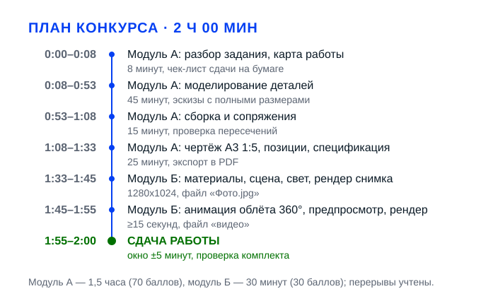
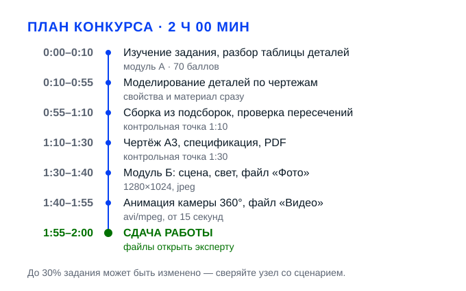
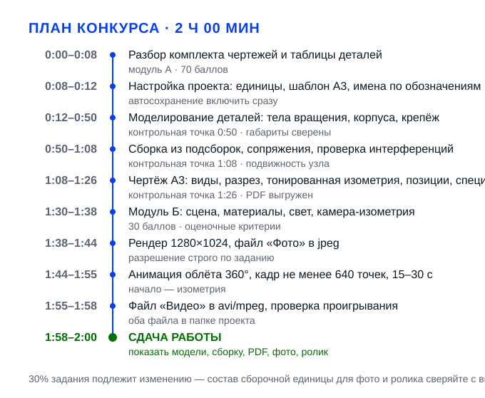

Инженерный дизайн (CAD) САПР (Р,О)
Задания ниже — официальные файлы «Абилимпикс» (источник: abilympics-russia.ru), разложенные по категориям. Решения написаны по тексту задания, регламенту и критериям оценки; в них указано, что именно проверяет эксперт.
Школьник
14–16 лет, базовый уровень заданияВыдержка из официального конкурсного задания: страницы, относящиеся к категории «Школьник» (стр. 5–6, 10–11 источника).
Пошаговое решение
Задание категории «Школьники» — это полный цикл работы конструктора за два часа: полтора часа на модуль А по трёхмерному моделированию в САПР и тридцать минут на модуль Б с фотореалистичным изображением и анимационным роликом. Сначала вы строите модели деталей по выданным чертежам, собираете из них сборочную единицу, выпускаете сборочный чертёж на листе А3 в масштабе 1:5 с указателями позиций и спецификацией на отдельном листе, сохраняя всё в PDF, затем делаете снимок 1280 на 1024 точки в формате JPEG с именем «Фото» и ролик с облётом камеры на 360 градусов в формате avi или mpeg с именем «видео». Модуль А оценивается измеримо и стоит 70 баллов, модуль Б оценивается экспертно и стоит 30 баллов, а тридцать процентов задания относится к сборочной единице, которая используется для фото и анимации. Ниже — пошаговый разбор с таймингом: от чтения задания до сдачи комплекта.

Задача 1. Разобрать задание, разложить чертежи и подготовить САПРМодуль А · вход в измеримые 70 баллов
На разбор задания и подготовку инструмента уходит не больше восьми–десяти минут из девяноста, отведённых на модуль А, но именно эти минуты решают, будет ли у вас к концу правильная сборка и правильный комплект файлов. Сначала вы читаете задание целиком и выписываете состав механизма, затем настраиваете программу так, чтобы она сама подсказывала нужное поведение, и только потом берёте в руки мышь для моделирования. Пропуск этого блока почти всегда заканчивается тем, что участник моделирует красиво, а сдаёт не то, что просили.
Действие 1.1. Прочитать задание и составить карту работы
Шаг 1.1.1
Открываем конкурсное задание на левом мониторе, а справа оставляем пустую САПР, и читаем текст целиком один раз, ничего не моделируя. В тексте находим три вещи: перечень того, что нужно сдать, требования к оформлению сборочного чертежа (лист А3, масштаб 1:5, указатели позиций, спецификация, PDF) и требования к фото и видео (1280х1024 точки для снимка, кадр не менее 640 точек по меньшей стороне для ролика). Всё найденное выписываем на лист бумаги столбиком, чтобы потом отмечать выполненное галочкой, а не вспоминать по памяти в последние пять минут.
Задание на чемпионате выдают один раз, и вопросов по нему после старта почти не бывает: эксперт может уточнить формулировку, но не станет пересказывать требования. Каждый пункт задания закрыт баллами измеримого модуля А, а снимок и ролик целиком относятся к оценочному модулю Б, который стоит 30 баллов из 100, — то есть забыть про них значит потерять почти треть результата ещё до начала моделирования.
Проверьте себя просто: закройте задание и по своему листу перескажите, что именно сдаёте. Если в списке меньше семи пунктов (модели деталей, сборка, чертёж, спецификация, PDF, фото, видео), значит какой-то раздел вы прочитали по диагонали и его надо найти в тексте заново.
Самая частая ошибка — читать только первый абзац про моделирование и начинать строить детали, не дочитав до модуля Б. В результате за тридцать минут до сдачи выясняется, что нужен ещё и ролик с облётом на 360 градусов, а времени на рендер уже нет, и тридцать оценочных баллов уходят целиком.
Эксперт проходит по площадке в первые минуты и смотрит, открыто ли у участника задание и делает ли он пометки: по этому видно, читал он текст или сразу схватился за моделирование.
Шаг 1.1.2
Берём таблицу деталей и наглядное изображение механизма и разбираем состав: сколько всего позиций, какие из них уникальные, а какие повторяются по нескольку штук, что относится к стандартным изделиям (болты, винты, шайбы, подшипники) и не требует построения с нуля. На том же листе рядом с каждой позицией пишем количество и материал, если он указан, — потом эти данные попадут в спецификацию, и брать их придётся оттуда же.
Таблица деталей — это фактически готовая спецификация, и работа с ней напрямую входит в измеримую часть модуля А: количество деталей в сборке и номера позиций сверяются с ней построчно. Если сразу понять, что четыре болта — это одна позиция с количеством 4, то в сборке вы вставите один компонент и размножите его массивом, сэкономив время на моделировании и получив правильное количество автоматически.
На листе получился полный перечень: число строк совпадает с числом строк в таблице деталей, у каждой позиции проставлено количество, стандартные изделия отмечены отдельно. Пересчитайте количество вручную и сравните сумму с тем, что видно на наглядном изображении.
Типичная ошибка — пропустить позицию, которая на чертеже изображена мелко или вынесена в выносной элемент: шайба, штифт или стопорное кольцо. В сборке такая деталь отсутствует, сборка формально собирается, но состав не совпадает с таблицей, и баллы за состав сборки снимаются вместе с баллами за спецификацию.
Эксперт сверяет состав сборки с таблицей деталей не на глаз, а по спецификации: каждая строка должна найтись в модели. Сверка идёт по конкретным позициям, а не по общему числу деталей в сборке.
Шаг 1.1.3
Отдельно выписываем требования к выпуску документации, потому что именно на них теряется больше всего баллов: лист А3, масштаб 1:5 в основной надписи, достаточное количество изображений для понимания конструкции, указатели номеров позиций, основная надпись с обозначением сборочного чертежа, наименованием механизма и фамилией разработчика, спецификация на отдельном листе, сохранение чертежа и спецификации в PDF. Это ваш чек-лист сдачи, и он должен лежать на столе, а не храниться в голове.
Формат, масштаб и наличие спецификации — измеримые признаки, их проверяют формально, и никакое качество модели их не компенсирует: чертёж на А4 вместо А3 или с масштабом по умолчанию 1:1 теряет баллы независимо от того, как аккуратно он выглядит. Сохранённый чек-лист позволяет за две минуты до сдачи пройти по пунктам и увидеть пропуск, который иначе обнаружится уже после конкурса.
Проверьте, что в чек-листе ровно те формулировки, которые есть в задании, и что против каждого пункта можно поставить галочку фактом, а не ощущением: не «чертёж сделан», а «лист А3, масштаб 1:5, позиции есть, основная надпись заполнена».
Ошибка — запомнить требования «примерно» и на чертеже поставить масштаб 1:2, потому что так красивее компонуется. Единица измерения у такого решения одна: минус баллы за оформление и переделка листа, на которую в конце модуля нет времени.
Именно по этому чек-листу эксперт принимает работу в конце, и он же смотрит, проверял ли участник требования до сдачи или узнал о них от эксперта. Этот же чек-лист он видит на столе участника во время работы.
Действие 1.2. Настроить программу и рабочее место
Шаг 1.2.1
Создаём новую деталь из шаблона, оформленного по ЕСКД, и первым делом проверяем единицы измерения: в углу экрана или в свойствах документа должно стоять миллиметр, а не дюйм. Затем настраиваем то, что экономит время каждый раз: включаем привязки к центру, середине и пересечению, ставим автосохранение каждые пять минут, включаем отображение размеров в эскизе и отключаем звуковые уведомления. Рабочую папку создаём сразу на рабочем столе и называем так, чтобы через час не путаться, — например, по обозначению механизма из задания.
Ошибка в единицах обнуляет всю работу: деталь, построенная в дюймах, при вставке в сборку окажется в двадцать пять раз крупнее и не совпадёт ни с одним отверстием. Автосохранение и папка с понятным именем — страховка от второй по частоте неприятности, зависания программы: перезапуск с сохранённым файлом стоит минуту, а без него участник начинает модуль заново на середине времени.
Проверьте первым же эскизом: постройте отрезок и поставьте на него размер, увиденное число должно быть в миллиметрах и соответствовать длине отрезка. Загляните в настройки автосохранения и убедитесь, что путь указывает в вашу рабочую папку, а не в общий каталог программы.
Частая ошибка — работать в шаблоне по умолчанию с дюймами и обнаружить это на этапе сборки, когда деталей уже десять. Вторая — сохранять всё в корень диска под именами вида «Деталь1», «Деталь1(2)»: на сдаче невозможно быстро собрать комплект, а имя файла противоречит требованию использовать обозначения с чертежей.
Эксперт оценивает не только результат, но и организацию работы: наличие рабочей папки, осмысленные имена и включённое автосохранение видны при первом же обращении к вашему экрану.
Шаг 1.2.2
Проверяем оборудование до того, как оно понадобится: оба монитора показывают картинку, программа запускается без задержки, колесо мыши работает на масштаб, а средняя кнопка — на вращение модели. Если на площадке есть 3D-манипулятор, проверяем его на пробной детали и решаем, удобнее ли он мыши; если нет — договариваемся с собой, что вращать будем средней кнопкой, чтобы не терять секунды на поиск нужной команды в меню.
Время модуля А — девяносто минут, и каждая незапланированная остановка стоит модельного времени: перезагрузка после зависания, поиск пропавшей панели, разбор, почему не работает привязка. Проверка в начале занимает три минуты и превращает эти риски в известные заранее проблемы, которые можно сразу показать техническому эксперту — по правилам охраны труда при неполадках работу не начинают, а сообщают о них.
Убедитесь, что модель вращается и масштабируется без рывков, эскиз открывается двойным щелчком, а панели инструментов не перекрывают друг друга на втором мониторе. Если что-то не работает — поднимите руку и позовите эксперта до старта, а не в середине работы.
Ошибка — начать работу на неисправном оборудовании и потерять десять минут, разбираясь самостоятельно. Вторая — держать на втором мониторе посторонние окна вместо чертежа: постоянное переключение между окнами отнимает время на каждом размере.
Эксперт вправе зафиксировать неисправность и заменить оборудование, но только если о ней сообщили; сбой, о котором участник молчал, на результат не влияет.
Шаг 1.2.3
Раскладываем девяносто минут модуля А по этапам и записываем на том же листе с чек-листом: восемь минут на разбор задания, сорок пять на моделирование деталей, пятнадцать на сборку, двадцать пять на чертёж и спецификацию. Последние пять минут в этот расчёт не входят — они зарезервированы под сохранение PDF и сбор комплекта. Для модуля Б отдельно планируем тридцать минут так, чтобы на рендер фото ушло не больше десяти, а на ролик — не больше пятнадцати, включая предпросмотр.
Рендер фотореалистичного изображения и анимации — самая непредсказуемая по времени операция: один и тот же кадр может считаться три минуты, а может полчаса, если включить лишние эффекты и высокое качество. План с запасом спасает ровно те баллы, которые нельзя добрать моделированием: тридцать оценочных баллов модуля Б начисляются только за готовые файлы с нужными именами и параметрами.
Проверьте арифметику: сумма этапов должна равняться девяноста минутам, а не «примерно». Поставьте себе два контрольных момента — через сорок пять минут все детали должны существовать, через семьдесят должна быть готова сборка; если контроль пройден с опозданием, следующий этап сокращается осознанно, а не обнаруживается на сдаче.
Самая дорогая ошибка — увлечься одной деталью и потратить на неё тридцать минут, вылизывая скругления. На сдаче не будет ни чертежа, ни фото, ни ролика, и вместо семидесяти баллов за моделирование останется часть, а тридцать баллов модуля Б пропадут полностью.
Опытный эксперт по темпу работы уже к середине модуля видит, укладывается участник в план или нет, и на разборе результатов это видно по объёму сданного комплекта.
Задача 2. Смоделировать все детали по чертежамМодуль А · основная часть измеримых 70 баллов
Сорок пять минут модуля А уходят на детали, и это самая весомая часть измеримой оценки: сборка и чертёж строятся автоматически из того, что вы сделали здесь, поэтому любая ошибка в размере не исчезает, а размножается по всему комплекту. Работаем в одном порядке для всех деталей: сначала габаритный эскиз с полностью заданными размерами, потом формообразующая операция, потом мелкие элементы (отверстия, фаски, скругления), потом проверка по чертежу. Такой порядок не даёт эскизу «поплыть» и позволяет возвращаться к деталям в любом порядке, если время поджимает.
Действие 2.1. Построить деталь с плоским основанием
Шаг 2.1.1
Начинаем с детали, у которой есть плоская база и развитая плита: в заданиях Абилимпикс для школьников это обычно основание, кронштейн или плита с отверстиями. Выбираем горизонтальную плоскость, создаём эскиз и строим габаритный прямоугольник от начала координат, а не «где-то на поле»: ставим размеры длины и ширины точно по чертежу, затем фиксируем совпадение угла с началом координат и симметрию относительно осей. Дальше проставляем размеры до отверстий и уступов, пока все линии эскиза не станут определёнными.
Эскиз, привязанный к началу координат, потом не «уезжает» при изменении любого размера, и сборка вставляется в него без ручного совмещения. Полностью определённый эскиз — это единственный способ увидеть в программе, что вы задали все размеры: недоспецифицированные линии подсвечиваются цветом, и именно они дают деталь, которая выглядит похоже, но по размерам не совпадает с чертежом, а за соответствие размерам снимается часть измеримых 70 баллов.
Выйдите из эскиза и посмотрите на строку состояния: программа должна сообщить, что эскиз полностью определён, а все линии стать одного цвета. Пересчитайте число размеров — их должно быть не меньше, чем размеров на соответствующем виде чертежа.
Типичная ошибка — рисовать на глаз и «дорисовывать» размеры после выдавливания. Деталь получается визуально правдоподобной, но габарит отличается на два-три миллиметра, и в сборке отверстия не совпадают с ответными, а исправление требует перестроения всей детали.
Эксперт смотрит на дерево построения и на состояние эскизов: полностью определённые эскизы читаются как понимание чертежа, а «синие» линии — как работа на глаз.
Шаг 2.1.2
Выдавливаем эскиз на толщину, указанную на чертеже, причём направление выбираем так, чтобы база осталась в начале координат, а тело росло вверх: так удобнее собирать и ставить деталь в сборку первой. Если на чертеже толщина задана с двусторонним расположением относительно базовой плоскости, ставим выдавливание «на середину» и проверяем, что размер от базы до верхней грани совпадает с чертёжным.
Направление выдавливания влияет на всё дальнейшее: от него зависит, куда смотрят фаски, как встанут сопряжения в сборке и с какой стороны рисовать разрез. Если толщина не совпадает с чертежом хотя бы на миллиметр, на сборочном чертеже в разрезе разойдутся зазоры, а эксперт увидит расхождение при сверке габаритов сборочной единицы.
Измерьте готовую деталь инструментом измерения расстояний прямо в модели: толщина и габариты по трём направлениям должны совпадать с чертежом до последнего знака. Проверьте, что деталь — одно тело, а не набор отдельных поверхностей.
Ошибка — выдавить «на глаз» и оставить 8 мм вместо 10, потому что на чертеже толщина указана на разрезе, а не на главном виде. На сборке это даст зазор там, где его быть не должно, и снятые баллы за соответствие модели чертежу.
Эксперт открывает дерево и свойства тела: толщина и количество тел проверяются быстро и однозначно. Расхождение в толщине заметно и на сборочном разрезе, где зазоры читаются сразу.
Шаг 2.1.3
Прорезаем отверстия: сначала одиночное по координатам от базы, затем массив отверстий, если они стоят регулярно. Диаметр берём с чертежа вместе с указанием «сквозное» или глубиной, а под крепёж с потайной головкой добавляем зенковку или цековку того размера, который указан. Координаты отверстий отсчитываем от тех баз, от которых они заданы на чертеже, а не от удобного вам угла, иначе накопленная ошибка уведёт последнее отверстие в сторону.
Отверстия — самые проверяемые элементы: по ним собирается весь механизм, и именно они первыми обнаруживают ошибку. Массив вместо ручного копирования даёт гарантированно равный шаг, а привязка к базовым размерам позволяет потом пересчитать деталь, не перестраивая каждый элемент, что важно, если по условиям задания сборка меняется на тридцать процентов.
Включите измерение и пройдите по отверстиям: диаметр, координаты первого и шаг массива должны совпадать с чертежом. Пересчитайте количество отверстий — оно должно совпасть с числом на виде сверху. Пересчитайте отверстия отдельно по каждому ряду и сверьте с видом сверху.
Часто путают «сквозное» и «на глубину»: отверстие с глубиной 12 мм в плите толщиной 10 мм не выйдет наружу, и болт не пройдёт. Вторая ошибка — задать массив с шагом по центрам вместо шага между краями, тогда крайние отверстия попадут на кромку и деталь придётся переделывать.
Эксперт проверяет отверстия по чертежу выборочно, но обязательно — вместе с посадкой крепежа в сборке. Координаты отверстий он смотрит вместе с ответными деталями, посаженными на них.
Шаг 2.1.4
Добавляем мелкие элементы в том порядке, в каком они идут на чертеже: фаски на кромках, скругления внутренних углов радиусом с чертежа, затем симметричные элементы через зеркальное отражение. Радиусы и фаски ставим на те кромки, которые указаны, а не «для красоты» на все подряд: на чертеже обычно помечены только технологические кромки, остальные остаются острыми. Зеркалим относительно плоскости симметрии детали, а не случайной грани.
Фаски и скругления — то, по чему эксперт отличает модель, построенную по чертежу, от похожей по форме: их наличие и радиус проверяются измерением за пару секунд. Зеркальное отражение вместо повторного рисования гарантирует симметрию и экономит время, а лишние скругления портят чертёж — на разрезе они дают линии, которых на оригинале нет.
Измерьте радиус и размер фаски в модели и сравните с выноской на чертеже. Посмотрите деталь в изометрии: она должна читаться так же, как наглядное изображение, без «мыльных» переходов и ступенек на кромках.
Ошибка — поставить одинаковое скругление на все кромки «чтобы смотрелось аккуратно»: на чертеже их два, а в модели двадцать, и часть баллов за соответствие чертежу уходит. Вторая — забыть фаску под запрессовку, из-за чего в сборке деталь не садится до упора.
Эксперт проверяет мелкие элементы при сверке модели с чертежом, обращая внимание на кромки, помеченные на чертеже. Радиус, которого нет на чертеже, он считает такой же ошибкой, как и пропущенный.
Действие 2.2. Построить деталь-тело вращения
Шаг 2.2.1
Для вала, втулки, оси или кольца строим тело вращения: выбираем плоскость, проходящую через ось детали, и рисуем половину профиля — так, чтобы контур был замкнутым и лежал по одну сторону от осевой линии. Осевую проводим как вспомогательную прямую по центру, ставим на неё совпадение оси вращения. Все диаметры с чертежа переводим в радиусы аккуратно, деля пополам, и проставляем размеры до каждой ступени, включая длины и переходы.
Профиль, нарисованный целиком, а не половиной, при вращении даёт самопересечение и тело с двойной геометрией. Замкнутый контур, привязанный к осевой, — обязательное условие: разрыв в полмиллиметра программа либо не примет, либо затянет тонкой стенкой, которая потом рассыплет разрез на чертеже. Диаметры и радиусы путают чаще всего, и это единственная ошибка, которая меняет деталь вдвое.
Проверьте эскиз до вращения: контур замкнут, осевая проходит через центр всех ступеней, размеры в эскизе соответствуют диаметрам с чертежа, делённым пополам. Сравните число ступеней с числом ступеней на чертеже.
Ошибка — взять диаметр 32 за радиус и получить вал диаметром 64. Вторая — оставить в контуре лишний отрезок, который при вращении даёт буртик, отсутствующий на чертеже, и деталь не входит в отверстие корпуса.
Эксперт смотрит на эскиз вращения: по нему сразу видно, работал участник с диаметрами осознанно или механически переносил числа. Эскиз, в котором вместо радиусов стоят диаметры, виден ему сразу.
Шаг 2.2.2
Выполняем вращение на 360 градусов вокруг осевой линии и проверяем результат: тело должно быть цельным, без тонких лепестков и внутренних полостей. Если профиль ступенчатый, убеждаемся, что каждая ступень замкнулась и переходы получились прямые, а не скруглённые сами по себе. Только после этого переходим к пазам и отверстиям — их делают на готовом теле, иначе они попадут не на ту поверхность.
Тело вращения почти всегда является несущей деталью механизма, и от него зависит посадка остальных: втулка, надетая на вал, должна сесть по диаметру, а не «примерно». Если вращение дало несколько тел, значит контур не замкнут, и все дальнейшие операции будут работать только с частью детали, а сборка развалится на сопряжениях.
Загляните в свойства тела: количество тел должно быть равно единице. Измерьте диаметр крайней ступени и общую длину — они должны совпадать с чертежом. Покрутите деталь в изометрии и убедитесь, что нет ступенек и разрывов на поверхности.
Ошибка — вращать на 360 градусов профиль, у которого ось проходит через контур: получается тело с нулевой толщиной в центре, и программа может показать его корректно, но при экспорте в чертёж появляются артефакты. Вторая — не проверить количество тел и моделировать паз на одном из двух обрывков.
Эксперт проверяет тела и посадки; цельное тело вращения — базовый признак корректной модели. Если тел получилось больше одного, это читается как незакрытый контур эскиза.
Шаг 2.2.3
Прорезаем то, что задано сверх тела вращения: шпоночный паз, лыски под ключ, поперечные отверстия, канавку под стопорное кольцо. Паз строим эскизом на касательной или осевой плоскости и вырезанием на заданную глубину, лыски — симметрично с двух сторон, отверстия — насквозь через ось с контролем соосности. Если на детали есть резьба, изображаем её условно, а не витками: на чертеже по ЕСКД резьба показывается двумя линиями, и моделировать спираль нет ни времени, ни смысла.
Мелкие элементы задают работу механизма: шпонка передаёт момент, лыска нужна под ключ, канавка держит кольцо. Их отсутствие видно на сборке сразу — деталь встаёт, но не работает так, как показано на наглядном изображении. Условная резьба экономит десять–пятнадцать минут на каждой резьбовой детали, а оценивается на чертеже всё равно по условному изображению.
Проверьте положение паза относительно базы: расстояние от торца и глубина должны совпадать с чертежом, паз должен выходить на торец, а не обрываться внутри. Лыски измерьте штангенциркулем модели — размер между ними равен размеру под ключ.
Ошибка — смоделировать резьбу витками и застрять на двадцать минут: на чертеже это ничего не добавляет, а время уходит из моделирования. Вторая — сделать паз не с той стороны вала, из-за чего шпонка в сборке окажется вне паза ступицы.
Эксперт обращает внимание на шпоночные пазы и лыски: их положение относительно базового торца легко проверить по чертежу. Лыски и канавки он измеряет в модели, а не оценивает по картинке на экране.
Действие 2.3. Взять стандартные изделия из библиотеки
Шаг 2.3.1
Крепёж не моделируем с нуля: открываем библиотеку стандартных изделий САПР и вставляем болты, винты, шайбы и гайки по обозначению из таблицы деталей — например, болт М8 длиной 30 по соответствующему ГОСТ. Если библиотеки нет или нужного типоразмера в ней не оказалось, строим упрощённую модель: цилиндр головки, цилиндр стержня, фаска, и резьбу показываем условно. Главное — сохранить присоединительные размеры: диаметр стержня, длину, размер под ключ.
Стандартные изделия в спецификации идут отдельным разделом, и их обозначение должно совпадать с таблицей деталей, иначе строки не сойдутся. Библиотечная модель уже имеет правильные присоединительные размеры, поэтому болт пройдёт в отверстие без подгонки, а на чертеже не придётся исправлять изображение головки под нужный стандарт.
Вставьте крепёж и измерьте: диаметр стержня должен позволять пройти в отверстие с зазором, длина — выступать за пакет на нужную величину, головка — садиться на опорную поверхность. Сверьте обозначение с таблицей деталей посимвольно.
Ошибка — нарисовать болт «похожим» с головкой не того размера: в спецификации обозначение одно, а в модели другое, и строка не проверяется. Вторая — взять длину болта из головы, тогда он либо не выйдет из пакета, либо упрётся в соседнюю деталь.
Эксперт сверяет крепёж с таблицей деталей и с посадкой в отверстиях: это одна из самых быстрых проверок состава сборки. Длину болта он сверяет с пакетом деталей, который тот стягивает.
Шаг 2.3.2
Заканчиваем моделирование приведением файлов в порядок: каждую деталь сохраняем отдельным файлом в рабочую папку, имя файла — обозначение с чертежа или из таблицы деталей, без пробелов и лишних слов вроде «финал» и «новый». Одинаково называем и деталь, и её свойства внутри файла: обозначение и наименование вводятся в свойствах, чтобы они автоматически попали в спецификацию и в основную надпись.
Требование использовать в качестве имён файлов обозначения с чертежей и из таблицы деталей записано в задании прямым текстом, то есть проверяется формально. Свойства, заполненные внутри модели, экономят десять минут на этапе спецификации: программа подставляет их сама, и вам не нужно вбивать наименования вручную под каждой строкой.
Откройте папку и пересчитайте файлы: их число должно совпасть с числом уникальных позиций, которые вы моделировали. Проверьте два-три файла на заполненные свойства — обозначение, наименование и материал.
Ошибка — хранить детали внутри файла сборки, не сохраняя отдельно: при сдаче комплект моделей окажется неполным. Вторая — назвать файл по-русски «Ось верхняя», когда на чертеже стоит обозначение вроде «АБВ.02.001»: формальное требование не выполнено.
Эксперт при приёмке смотрит имена файлов и свойства: это первый признак того, что участник работал по заданию, а не «как удобно». Имена файлов он сравнивает с обозначениями, стоящими на чертежах.
Действие 2.4. Проверить модели до сборки
Шаг 2.4.1
Пройдите по деталям и назначьте материал в свойствах: сталь, алюминиевый сплав, резина — по таблице деталей, если материал указан, иначе по здравому смыслу конструкции. Материал влияет на массу, а масса видна в свойствах сборки и потом пригодится в пояснении. Заодно проверьте, что в свойствах стоит верное обозначение и наименование, потому что спецификация берёт их именно оттуда.
Материал — это та часть информации о детали, которую чертёж передаёт наряду с размерами, и в описании компетенции прямо сказано, что документация должна сообщать о материалах и допусках. Если материал не задан, спецификация получится с пустой графой, а сборка — без массы, и часть измеримых баллов уйдёт на ровном месте.
Откройте свойства каждой детали и убедитесь, что заполнены обозначение, наименование и материал, а масса посчиталась и выглядит правдоподобно: стальная плита такого размера не может весить двадцать граммов.
Ошибка — оставить материал по умолчанию у всех деталей: в спецификации появится одинаковый материал там, где по чертежу разные. Вторая — вписать материал только в одном месте, а в свойствах оставить пусто, и спецификация не заполнится автоматически.
Эксперт смотрит графу материала в спецификации и в свойствах моделей: расхождение видно сразу и трактуется как невнимательность. Массу из свойств сборки он тоже сверяет с ожидаемой по материалу.
Шаг 2.4.2
Проверяем геометрическую чистоту каждой модели: одно тело, нет нулевых толщин, нет висящих поверхностей, все операции в дереве построения вычислены без ошибок и предупреждений. Идём по дереву сверху вниз и смотрим на значки: элемент с ошибкой обычно помечен цветом, и его видно даже без открытия. Если какая-то операция не применилась, исправляем эскиз, а не удаляем операцию, если она нужна по чертежу.
Модель с ошибкой в дереве может выглядеть правильно и даже собраться, но при построении чертежа даст пропавшие линии, а при рендере — артефакты на поверхности. Пересчёт дерева занимает две минуты и снимает риск того, что сборочный чертёж на А3 придётся перестраивать за пять минут до сдачи, когда исправлять уже нечем.
Прокрутите дерево и убедитесь, что ни один элемент не помечен как ошибочный или подавленный. Выполните пересчёт модели и посмотрите, не изменилась ли геометрия: если после пересчёта деталь «поехала», значит в эскизе остался недоопределённый элемент.
Ошибка — оставить в дереве погашенный элемент, который на чертеже нужен: деталь выглядит целой, но не хватает отверстия или фаски, и соответствие чертежу формально нарушено. Вторая — лечить ошибку удалением операции и получить упрощённую деталь.
Эксперт открывает дерево построения выборочно, но у деталей с ошибками это видно при любом обращении. Погашенные и ошибочные элементы в дереве он находит при первом открытии модели.
Шаг 2.4.3
Последняя сверка перед сборкой: открываем чертёж детали рядом с моделью и сравниваем не «похоже или нет», а по числам — габариты, диаметры, толщины, координаты отверстий, радиусы. Удобно идти по видам чертежа в том же порядке, в каком вы строили: главный вид, вид сверху, разрез. Всё, что не сходится, исправляем сразу, а расхождения записываем, чтобы не проверять дважды.
Сверка по числам — это то, чем эксперт занимается после конкурса, и лучше сделать её за десять минут до сборки, чем получить замечание на разборе. Сборка из деталей с мелкими расхождениями всё равно собирается, поэтому ошибки не всплывают сами: они становятся видны только при измерении, а модель оценивается по соответствию чертежу.
Прогоните контрольные размеры по каждой детали: три габарита, два-три характерных размера, диаметры отверстий. Если все числа совпали, деталь можно считать готовой и больше к ней не возвращаться. Запишите проверенные числа на бумагу: второй раз сверять те же размеры не придётся.
Ошибка — проверять «на глаз», вращая модель рядом с чертежом: расхождение в два миллиметра на глаз не видно, а на сборке оно превращается в зазор. Вторая — откладывать сверку на конец, когда времени хватает только на сдачу.
Эксперт сверяет модели с чертежами после конкурса по размерам, поэтому самопроверка по числам — это фактически репетиция оценки. Сверка идёт по числам, а не по внешнему сходству силуэта детали.
Задача 3. Собрать сборочную единицу из готовых деталейМодуль А · измеримые 70 баллов, блок сборки
На сборку в плане отведено пятнадцать минут, и это ровно тот этап, где видно, правильно ли построены детали. Собираем не «как получится», а в том порядке, в каком механизм монтируют на производстве: сначала базовая деталь, потом всё, что садится на неё по цилиндрическим поверхностям, потом крепёж. Сопряжения ставим парами «поверхность к поверхности», а не по вершинам и кромкам, и после каждой группы проверяем, что деталь встала на место без наклона и зазора. Итог этапа — сборка, в которой нет пересечений, все позиции на месте и количество совпадает с таблицей деталей.
Действие 3.1. Вставить детали и наложить сопряжения
Шаг 3.1.1
Создаём новый документ сборки, первым вставляем базовую деталь — ту, от которой на чертеже отсчитываются размеры, обычно корпус или основание — и сразу фиксируем её: в дереве у неё должен появиться признак закрепления, а степени свободы обнулиться. Вставляем её в начало координат сборки, совместив базовые плоскости детали с плоскостями сборки, а не просто бросив мышью в поле экрана.
Незакреплённая базовая деталь — источник самой неприятной ошибки: вся сборка начинает «плавать», при попытке поставить сопряжение вторая деталь утаскивает первую, и участник теряет минуты на то, чтобы вернуть всё на место. Привязка к началу координат даёт устойчивую систему отсчёта, в которой потом удобно проверять расстояния и делать разрез на чертеже.
Проверьте дерево: у базовой детали стоит признак «закреплено», а в строке состояния — ноль степеней свободы. Попробуйте сдвинуть её мышью: она не должна двигаться вообще. Потяните базовую деталь мышью во всех направлениях: движения быть не должно ни в одном из них.
Ошибка — начать вставлять детали, не закрепив базовую: через пару сопряжений сборка перекашивается, и участник начинает удалять сопряжения, чтобы разобраться. Вторая — вставить базовую деталь боком, тогда все последующие встанут перпендикулярно тому, как показано на наглядном изображении.
Эксперт открывает дерево сборки и видит порядок вставки и закрепление: аккуратная сборка всегда начинается с зафиксированной базы. Незакреплённая база видна по значку компонента в дереве сборки.
Шаг 3.1.2
Ставим первые сопряжения по цилиндрическим поверхностям: совпадение осей отверстия и стержня (концентричность), затем совпадение торцов или плоскостей — в зависимости от того, садится деталь до упора или с зазором. Накладываем сопряжения по одному и после каждого проверяем, что деталь встала именно так, как нужно: сначала направление, потом положение по оси. Порядок важен: сначала выравниваем по оси, потом ограничиваем перемещение вдоль неё.
Два сопряжения «ось плюс торец» полностью определяют посадку детали на вал или в отверстие, и это ровно то, что проверяется по сборочному чертежу. Если наложить сопряжение по кромкам или вершинам, при любом изменении детали оно разрушится, и сборка развалится прямо перед сдачей — а сборка входит в измеримую часть модуля А, то есть в те 70 баллов, которые считаются по факту наличия работающей модели.
Потяните вставленную деталь мышью: она должна двигаться только в одном направлении — вдоль оси — или не двигаться вовсе, если поставлен торец. Если деталь вращается вокруг оси и не уезжает вбок, сопряжение наложено правильно.
Ошибка — наставить сопряжений «на совпадение всего со всем» и получить переопределённую сборку, которая выдаёт ошибки при каждом изменении. Вторая — сопрягать детали по визуально близким кромкам, тогда посадка получается с перекосом в доли градуса, и на чертеже в разрезе видно клин.
Эксперт смотрит на состав сопряжений и на поведение деталей: правильная пара «ось и торец» читается сразу, набор случайных совпадений — тоже. Переопределённая сборка выдаёт ошибки при пересчёте, и это тоже заметно.
Шаг 3.1.3
Добавляем остальные детали в порядке сборки: втулки, кольца, крышки, затем детали, которые ставятся последними по конструкции. Повторяющиеся компоненты не вставляем по одному — вставляем один и размножаем массивом компонентов по отверстиям или по окружности, если детали стоят симметрично. После каждой группы проверяем положение в изометрии, чтобы не накапливать перекос.
Массив компонентов экономит время и, что важнее, автоматически держит правильное количество: если в таблице деталей шайба идёт с количеством 4, массив по четырём отверстиям даст ровно четыре шайбы, и в спецификации не появится расхождения с заданием. Проверка по группам нужна потому, что перекос, замеченный сразу, исправляется одним сопряжением, а замеченный в конце — перебором всей сборки.
Сверьте количество каждого компонента с таблицей деталей, открыв свойства сборки или состав. Покрутите сборку: все однотипные детали должны стоять одинаково, без повёрнутых на девяносто градусов «выродков».
Ошибка — вставить детали по одной и потерять счёт, а потом обнаружить три шайбы вместо четырёх. Вторая — размножить массив по неверной оси, и половина крепежа оказывается вне отверстий, что сразу видно как пересечение.
Эксперт сверяет состав и количество с таблицей деталей — это одна из обязательных проверок сборки. Количество он пересчитывает по составу сборки и сравнивает с таблицей построчно.
Шаг 3.1.4
Ставим крепёж: болт проходит через отверстия соединяемых деталей, головка садится на опорную поверхность, шайба стоит под головкой, гайка навинчивается с обратной стороны. Сопряжения для крепежа те же: концентричность по стержню и отверстию, совпадение по опорной поверхности под головкой. Не пытайтесь «дотянуть» болт, у которого не совпали оси: это признак ошибки в координатах отверстий, и лечится он в детали, а не в сборке.
Крепёж — самая наглядная проверка того, что детали построены правильно: болт либо проходит, либо нет. Если он не проходит, значит координаты отверстий разошлись, и это надо исправлять в моделях деталей, потому что на сборочном чертеже такая сборка даст явное пересечение на разрезе, а пересечения — прямой путь к потере баллов за соответствие чертежу.
Включите проверку пересечений по крепежу: болт не должен «резать» стенки отверстия. Посмотрите на головку сбоку — она должна лежать на поверхности, а не висеть над ней и не утопать в теле детали. Отдельно проверьте, что шайба стоит под головкой, а не над ней.
Ошибка — вставить крепёж «примерно в отверстие» и оставить пересечение: на разрезе это выглядит как штриховка крепежа внутри штриховки детали, и эксперт видит ошибку мгновенно. Вторая — забыть шайбы, которые есть в таблице деталей.
Эксперт проверяет крепёж на пересечения и на соответствие таблице деталей, часто именно на крепеже ловят ошибки координат. Посадку головки и наличие шайбы он проверяет на увеличенном фрагменте.
Действие 3.2. Проверить сборку до выпуска чертежа
Шаг 3.2.1
Проверяем степени свободы: у каждой детали должно остаться ровно столько движений, сколько предусмотрено конструкцией. Вращающаяся деталь вращается вокруг своей оси и не уезжает вбок; неподвижная после сопряжений не двигается вовсе. Пройдитесь по дереву и посмотрите на значки незакреплённых компонентов: деталь, которая «гуляет» во всех направлениях, почти всегда означает забытое сопряжение.
Сборка, в которой детали висят в воздухе, формально существует, но не соответствует чертежу: на разрезе такая деталь окажется не на своём месте, а если по заданию предусмотрен сценарий движения (а он нужен для анимации), ролик покажет разлетающийся механизм вместо работы. Кроме того, незакреплённые детали могут сместиться при пересчёте уже после того, как чертёж построен.
Потяните каждую деталь мышью по всем трём направлениям и вокруг осей. Там, где движение не предусмотрено, деталь должна стоять как влитая; там, где предусмотрено вращение, — вращаться без заеданий и без смещения вдоль оси.
Ошибка — оставить все детали свободными, потому что сопряжения ставились «чтобы только встало на место». При первом же пересчёте или при построении анимации сборка разъедется, и переделывать придётся в самый неудобный момент.
Эксперт проверяет подвижность сборки, если по заданию она предусмотрена, и наличие остаточных степеней свободы видно в свойствах каждого компонента. Свободные компоненты видны по значкам в дереве сборки и по их поведению.
Шаг 3.2.2
Запускаем проверку пересечений (интерференцию) по всей сборке и разбираем каждую найденную пару. Допустимые случаи — резьбовые соединения и посадки с натягом, если они так задуманы; всё остальное, особенно пересечение тел там, где должен быть зазор, означает ошибку в размерах детали или в сопряжении. Исправляем в детали, а не сдвигом компонента: сдвиг спрячет проблему, но оставит неверную геометрию.
На сборочном чертеже пересечения видны как неправильная штриховка и как невозможные сочетания контуров, а на разрезе — как деталь, вошедшая в другую без зазора. Проверка интерференции занимает минуту и закрывает целую группу замечаний, которые иначе всплывут при оценке соответствия сборки чертежу.
Отчёт о пересечениях должен быть пустым или содержать только те пары, которые действительно задуманы конструкцией. Пересчитайте сборку после исправлений и запустите проверку снова. Обратите внимание на пары в местах посадки вала во втулку: там зазор задан чертежом, и пересечение означает ошибку.
Ошибка — закрыть отчёт о пересечениях и надеяться, что «не заметят»: на разрезе это видно, а на защите работы вопрос о пересечении будет первым. Вторая — лечить пересечение сдвигом детали на полмиллиметра, что ломает посадку по оси.
Эксперт проверяет сборку на пересечения, потому что это быстрый и объективный признак качества модели. Отчёт о пересечениях он может попросить показать прямо на экране.
Шаг 3.2.3
Сверяем собранную модель с наглядным изображением механизма: количество деталей, их взаимное расположение, порядок сборки, ориентация. На снимке в задании видно, какая деталь стоит сверху, где находится крепёж и как расположены отверстия; если модель отличается, ошибка почти всегда в детали, а не в изображении. Смотрим сборку в той же изометрии, что и наглядное изображение, — так расхождения вылезают сразу.
Наглядное изображение и список деталей в задании даны именно для сборки, и сверка с ними — прямой способ поймать ошибку ориентации, которую не видно по отдельным чертежам. Сборка, собранная «наоборот» (перевёрнутая втулка, крепёж с другой стороны), формально состоит из правильных деталей, но не соответствует заданию, и баллы за сборочную единицу снижаются.
Поставьте вид, совпадающий с наглядным изображением, и сравните последовательно: низ, верх, левая сторона, правая сторона, крепёж. Каждая деталь на снимке должна найтись в модели на том же месте. Отмечайте на снимке задания уже найденные детали карандашом, чтобы видеть, что осталось сверить.
Ошибка — собирать по памяти, не открывая наглядное изображение: перевёрнутая деталь выглядит правдоподобно, но не соответствует заданию. Вторая — ориентироваться только на свой чертёж, в котором та же ошибка уже перенесена.
Эксперт сравнивает сборку с наглядным изображением из задания — это эталон, относительно которого оценивается сборочная единица. Ракурс для сравнения он ставит тот же, что на наглядном изображении в задании.
Действие 3.3. Заполнить свойства и назначить номера позиций
Шаг 3.3.1
Открываем свойства сборки и заполняем то, что потом автоматически попадёт в основную надпись и в спецификацию: обозначение сборочного чертежа, наименование механизма, фамилию разработчика. Обозначение берём с чертежа или из задания, наименование — из заголовка задания, фамилию пишем так, как она указана в документах участника. Эти же данные нужны на фото и в ролике: работа подписана, и это требование задания.
Основная надпись с указанием сборочного чертежа, наименования механизма и фамилии разработчика — обязательный пункт задания, и заполнять её вручную на листе дольше и рискованнее, чем один раз в свойствах. Свойства сборки подставляются в чертёж автоматически, а заодно переносятся в спецификацию, поэтому одна заполненная форма экономит два прохода по документу.
Откройте свойства и проверьте каждое поле посимвольно, особенно обозначение: одна перепутанная цифра — и чертёж формально не соответствует заданию. Наименование должно совпадать с тем, что написано в задании, включая сокращения.
Ошибка — оставить в свойствах «Деталь1» и «Безымянный», а потом вписать данные руками в основную надпись, забыв про спецификацию. Вторая — написать фамилию сокращённо или с ошибкой, из-за чего работу сложно идентифицировать.
Эксперт при приёмке смотрит основную надпись: обозначение, наименование и фамилия — три обязательных элемента. Пустая графа или чужое обозначение видны ему при первом взгляде на лист.
Шаг 3.3.2
Назначаем номера позиций деталям в порядке, принятом в спецификации: сначала документация, затем сборочные единицы, затем детали, затем стандартные изделия, затем материалы. Внутри раздела детали нумеруются по возрастанию в порядке записи, а не по порядку вставки в сборку. Номера, назначенные здесь, будут показаны указателями на чертеже, поэтому их нельзя менять после того, как чертёж начат.
Номера позиций связывают чертёж и спецификацию: если порядок разойдётся, указатели на чертеже будут показывать на одни детали, а спецификация перечислять другие, и обе части потеряют баллы. Правильный порядок нумерации — требование ЕСКД, на которое ссылается описание компетенции, и оно проверяется сверкой двух документов между собой.
Выпишите список «номер позиции — деталь» и держите его перед глазами при заполнении спецификации. Проверьте, что номера идут без пропусков и что стандартные изделия стоят после деталей, а не вперемешку.
Ошибка — назначить номера по порядку вставки в сборку и получить последовательность, в которой стандартное изделие стоит между деталями. Вторая — перенумеровать детали уже после построения чертежа: указатели на листе останутся старыми.
Эксперт сверяет нумерацию по чертежу и по спецификации построчно, поэтому порядок номеров — не формальность, а проверяемый признак. Пропуск номера или перестановка позиций видна при построчной сверке документов.
Задача 4. Выпустить сборочный чертёж А3 в масштабе 1:5 со спецификациейМодуль А · измеримые 70 баллов, блок документации
Двадцать пять минут модуля А уходят на документ, по которому работу будут оценивать: лист А3, масштаб 1:5, столько изображений, чтобы конструкция читалась без пояснений, указатели номеров позиций, заполненная основная надпись и спецификация на отдельном листе. Чертёж строится из готовой сборки, поэтому все размеры и позиции берутся автоматически — ваша задача в том, чтобы правильно выбрать виды, аккуратно скомпоновать лист и не потерять ни одного формального требования. В конце чертёж и спецификация сохраняются в PDF под правильными именами.
Действие 4.1. Создать лист А3 и подобрать изображения
Шаг 4.1.1
Создаём чертёж из сборки: в диалоге выбираем шаблон с основной надписью по ЕСКД и формат А3 горизонтальной ориентации, масштаб листа оставляем 1:1, а масштаб изображений задаём 1:5 в свойствах вида. Сразу проверяем, что в основной надписи в графе масштаба появилось «1:5», а не «1:1»: программа часто подставляет масштаб листа по умолчанию. Сборка при этом должна быть в собранном состоянии, без погашенных деталей.
Формат А3 и масштаб 1:5 заданы в конкурсном задании прямым текстом, то есть проверяются формально, и никакое качество графики не компенсирует лист А4 или масштаб по умолчанию. Масштаб задаётся на виде, а не на листе: если поставить его не там, изображение останется в 1:1 и не влезет на лист, а в основной надписи будет написано одно, в геометрии — другое.
Загляните в основную надпись и в свойства каждого вида: масштаб 1:5 должен стоять в графе и в свойствах вида. Приложите линейку к экрану или измерьте габарит на листе: при масштабе 1:5 модель уменьшена ровно в пять раз.
Ошибка — оставить масштаб 1:1 и потом уменьшать изображение мышью, подгоняя под лист: в основной надписи останется неверный масштаб, а размеры на чертеже перестанут соответствовать геометрии. Вторая — создать чертёж не из сборки, а с нуля, и рисовать виды вручную.
Эксперт проверяет формат и масштаб в первую очередь, ещё до того, как начнёт смотреть содержание листа. Формат он смотрит по рамке и штампу, а масштаб — по графе основной надписи.
Шаг 4.1.2
Подбираем состав изображений: главный вид (обычно с разрезом по оси механизма), вид сверху или сбоку, при необходимости местный разрез на крепёж, и тонированный изометрический вид для наглядности. Задание требует достаточного количества изображений для понимания конструкции, поэтому ориентируемся на простой признак: по листу человек, не видевший сборку, должен понять, из чего механизм состоит и как детали расположены друг относительно друга. Лишние виды не добавляем — они занимают место и создают шум.
Достаточность изображений — оценочный, но проверяемый признак: если на листе только один вид, внутреннее устройство не читается, и часть баллов за чертёж уходит. Изометрический вид на сборочном чертеже решает сразу две задачи: показывает форму и служит местом для указателей позиций на детали, которые на разрезе перекрыты.
Проверьте лист «глазами постороннего»: закройте текст задания и посмотрите, понятно ли, где вал, где втулка, как они соединены и чем крепится крышка. Если хотя бы один элемент требует догадки — нужен ещё один вид или разрез.
Ошибка — поставить один главный вид и считать, что этого достаточно. Вторая — перегрузить лист пятью видами, среди которых нет разреза, и всё равно не показать внутреннее устройство. В итоге на листе остаётся один вид, и внутреннее устройство механизма не читается вовсе.
Эксперт оценивает читаемость листа: по составу изображений сразу видно, понимает ли участник, что должен передавать сборочный чертёж. Пустоты на листе и лишние виды он отмечает как ошибку компоновки, а не как вкус.
Шаг 4.1.3
Компонуем лист: изображения располагаем равномерно, с равными промежутками, основная надпись остаётся в правом нижнем углу и не перекрывается видами. Масштаб один для всех видов, поэтому сначала ставим главный вид, от него откладываем место под разрез и изометрию, и только потом, если остаётся пустое место, добавляем местные виды. Изометрию ставим в свободный угол и слегка уменьшаем, если она не влезает в масштабе 1:5.
Компоновка — то, что эксперт видит первым: даже правильные виды, налезающие друг на друга или на основную надпись, читаются как небрежная работа и снижают оценку оформления. Равномерное расположение позволяет ставить указатели позиций без пересечений и делает лист пригодным для печати в PDF, где обрезанный край уже не поправить.
Отойдите от экрана и посмотрите на лист целиком при масштабе «по ширине»: не должно быть наложений, обрезанных контуров и пустых полос. Основная надпись должна быть видна полностью и не перекрыта ни одним видом.
Ошибка — расставить виды «как влезло» и упереться в то, что основная надпись перекрыта изометрией. Вторая — разный масштаб у разных видов при одном указанном в надписи, что делает чертёж формально неверным.
Эксперт оценивает компоновку и читаемость листа в целом, а не только отдельные виды. Он смотрит, читается ли лист целиком, а не только по фрагментам при увеличении.
Действие 4.2. Поставить позиции, разрез и размеры
Шаг 4.2.1
Расставляем указатели номеров позиций: полка с номером, наклонная линия и точка на детали, шрифт номера на один-два размера крупнее размерного. Полки располагаем группами по горизонтали и вертикали, чтобы номера шли по возрастанию, а не хаотично; линии не должны пересекаться между собой и с контурами деталей. Каждая деталь должна иметь свой указатель, включая крепёж, если он показан на виде.
Указатели позиций — отдельное требование задания, и именно они связывают изображение со спецификацией: без них чертёж не читается как сборочный. Хаотично расставленные номера с пересекающимися линиями формально есть, но пользоваться ими невозможно, поэтому оценка оформления снижается даже при полном комплекте номеров.
Пройдите по спецификации и отметьте каждый номер на чертеже: ни одного пропущенного и ни одного лишнего. Посмотрите, что линии-выноски не касаются других деталей, иначе номер будет относиться не к той позиции.
Ошибка — поставить указатели только на изометрии и забыть про разрез, где видны внутренние детали. Вторая — сделать полки мелкими, того же размера, что и размерные числа, и получить нечитаемый при печати лист.
Эксперт проверяет, что все позиции из спецификации имеют указатели на изображениях, и насколько аккуратно они расставлены. Номер без указателя или указатель на чужой детали он находит при сверке со спецификацией.
Шаг 4.2.2
Строим разрез по оси механизма и проверяем штриховку: смежные детали должны быть заштрихованы в разные стороны или с разным шагом, одна и та же деталь — одинаково во всех сечениях. Крепёж в продольном разрезе показываем нерассечённым, как требует ЕСКД. Проверяем, что разрез показывает именно те детали, которые нужны для понимания: вал, втулку, посадку, крепление крышки.
Разрез — главный носитель информации о внутреннем устройстве, и по штриховке эксперт проверяет, различает ли участник детали: одинаковая штриховка у двух соседних деталей сливает их в одно тело, и разрез перестаёт что-либо объяснять. Нерассечённый крепёж — требование стандарта, и его нарушение видно сразу.
Увеличьте разрез и проверьте три вещи: направления штриховки у соседних деталей разные, шаг штриховки равномерный, крепёж не заштрихован. Убедитесь, что линия разреза на главном виде обозначена и совпадает с положением самого разреза.
Ошибка — заштриховать весь разрез под одним углом, и вместо механизма получить однородное пятно. Вторая — заштриховать болт вместе с деталями, что прямо противоречит ЕСКД и легко проверяется. Эксперт видит слипшиеся детали и снимает баллы за оформление разреза.
Эксперт смотрит разрез в первую очередь: по нему видно и понимание конструкции, и знание правил оформления. Направление и шаг штриховки он сравнивает у соседних деталей разреза.
Шаг 4.2.3
Проставляем размеры, которые нужны на сборочном чертеже: габаритные, присоединительные, установочные и посадочные, а также справочные, помеченные звёздочкой. Не дублируем размеры, которые есть на чертежах деталей, — на сборке показываем только то, что необходимо для установки и понимания. В технических требованиях над основной надписью пишем то, что нельзя показать на изображении: например, требования к посадкам, затяжке или покрытию, если они есть в задании.
Сборочный чертёж без габаритов и присоединительных размеров непригоден: по нему нельзя ни установить механизм, ни проверить его. Лишние размеры, перенесённые с деталей, создают путаницу и дублируют информацию, что также считается ошибкой оформления. Технические требования закрывают то, что графикой не передать, и их наличие читается как понимание назначения документа.
Проверьте, что есть габариты по трём направлениям, размеры под крепёж к основанию и посадочные диаметры. Пройдите по размерам и убедитесь, что ни один не налезает на другой и не пересекает контуры деталей.
Ошибка — перенести на сборку все размеры с деталей и получить нечитаемый лист. Вторая — забыть габаритный размер, без которого чертёж формально неполон, даже если всё остальное сделано идеально. Чертёж формально неполон, и часть баллов за документацию уходит независимо от графики.
Эксперт проверяет наличие габаритных и присоединительных размеров и аккуратность их расстановки. Лишние размеры, перенесённые с деталей, он отмечает как загромождение чертежа.
Действие 4.3. Заполнить основную надпись, выпустить спецификацию и сохранить PDF
Шаг 4.3.1
Заполняем основную надпись по ГОСТ 2.104: обозначение сборочного чертежа, наименование механизма, масштаб 1:5, наименование организации или учебного заведения, фамилия разработчика и дата. Обозначение и наименование подставляются из свойств сборки, если вы их заполнили, фамилию и дату вписываем вручную. Проверяем, что графы не остались пустыми и что текст не выходит за линии рамки.
Основная надпись — обязательный элемент задания, и именно по ней работу идентифицируют при оценке: без фамилии и обозначения лист обезличен. Формально проверяются все графы, поэтому пустая графа «Разраб.» или отсутствие масштаба стоят баллов независимо от качества графики.
Прочитайте основную надпись сверху вниз, как чужой документ: обозначение, наименование, материал (если предусмотрен), масштаб, организация, фамилия, дата. Ни одна графа не должна быть пустой или заполненной не по смыслу.
Ошибка — оставить пустой графу масштаба или написать фамилию только в титуле задания, а не в надписи. Вторая — вписать наименование с сокращениями, которых нет в задании, и разойтись с обозначением в спецификации.
Эксперт при приёмке открывает именно основную надпись: по ней определяется, чья работа и что за механизм. Наименование и обозначение он сверяет с заданием посимвольно.
Шаг 4.3.2
Создаём спецификацию на отдельном листе по ГОСТ 2.106: сверху вниз разделы «Документация», «Сборочные единицы» (если есть), «Детали», «Стандартные изделия», «Материалы». В каждой строке — позиция, обозначение, наименование, количество; для стандартных изделий вместо обозначения пишем стандарт. Разделы разделяем заголовками, строки нумеруем только внутри разделов, пропусков не оставляем.
Спецификация — вторая половина сборочного чертежа, и задание требует её на отдельном листе. Именно по ней сверяется состав: количество, обозначения, стандартные изделия. Если разделы перепутаны или стандартные изделия попали в раздел деталей, формальная проверка не пройдёт, даже когда состав модели верен.
Пересчитайте количество по строкам и сравните с таблицей деталей из задания. Проверьте, что каждая позиция имеет обозначение и наименование, а у стандартных изделий указан стандарт. Сверьте обозначения и наименования с чертежами деталей посимвольно, включая точки и дефисы.
Ошибка — сделать спецификацию прямо на чертеже, когда задание требует отдельный лист. Вторая — забыть раздел «Документация» или указать в нём не тот документ, и сборочный чертёж окажется не связанным со спецификацией.
Эксперт проверяет спецификацию построчно и сверяет её с чертежом и с таблицей деталей из задания. Порядок разделов и наличие стандарта у крепежа проверяются формально.
Шаг 4.3.3
Сверяем чертёж и спецификацию между собой: каждый номер позиции со чертежа должен найтись в спецификации, и наоборот, каждая строка спецификации должна иметь указатель на чертеже. Количество в спецификации — совпадать с количеством деталей в сборке. Наименования — совпадать посимвольно, включая сокращения и регистр, иначе сверка займёт у эксперта больше времени, а ошибка всё равно найдётся.
Рассогласование чертежа и спецификации — самая частая и самая обидная потеря баллов: обе части по отдельности могут быть идеальны, но документ оценивается как комплект. Сверка занимает пять минут, а её отсутствие обнаруживается на оценке и стоит баллов сразу в двух критериях.
Возьмите спецификацию и отмечайте карандашом каждый номер, найденный на чертеже. После прохода неотмеченных номеров быть не должно, а список позиций на чертеже не должен содержать номеров, которых нет в спецификации.
Ошибка — перенумеровать позиции на чертеже после заполнения спецификации. Вторая — исправить количество в сборке (добавить шайбу) и забыть обновить спецификацию. Сверка занимает у эксперта больше времени, а ошибка всё равно находится и стоит баллов в двух критериях.
Эксперт делает именно эту сверку, часто выборочно: две-три позиции достаточно, чтобы увидеть, согласован ли комплект. Рассогласование он фиксирует как ошибку комплекта, а не отдельного документа.
Шаг 4.3.4
Экспортируем чертёж и спецификацию в PDF: в настройках печати выбираем формат А3, масштаб «по размеру листа», включаем векторную графику и сглаживание линий, отключаем печать фона видов, если она не нужна. Спецификацию сохраняем отдельным PDF. После сохранения открываем файл и проверяем при увеличении 100 процентов, что тонкие линии не пропали, шрифты читаются, указатели позиций видны, а лист не обрезан по краям.
Задание требует сохранить чертёж и спецификацию в формате PDF, и именно этот файл оценивается: если в нём пропали линии или обрезан край, работа выглядит хуже, чем в программе. Проверка PDF перед сдачей — единственный способ увидеть, что увидит эксперт: на экране САПР всё выглядит иначе, а тонкие линии и мелкий шрифт выявляются только в готовом файле.
Откройте PDF, увеличьте до 100 процентов и пройдите по листу: видны ли номера позиций, не размыты ли контуры, на месте ли основная надпись. Проверьте размер страницы в свойствах файла — он должен быть А3, а не А4.
Ошибка — сохранить чертёж как картинку или распечатать в PDF с масштабом «вписать в страницу», из-за чего лист уменьшается и масштаб 1:5 перестаёт быть верным. Вторая — не проверить файл и сдать PDF с пустым вторым листом спецификации.
Эксперт оценивает именно PDF: он не открывает вашу САПР и не смотрит на экран, поэтому проверенный файл — это и есть сданная работа. Отдельно он смотрит, что спецификация сохранена отдельным файлом, а не вторым листом чертежа.
Задача 5. Сделать фотореалистичное изображение сборкиМодуль Б · оценочные 30 баллов
На фото и ролик вместе отведено тридцать минут, и это самые «дорогие» минуты конкурса: модуль Б оценивается отдельно и стоит 30 баллов из 100, хотя занимает четверть времени. Работаем от готовой сборки: сначала назначаем материалы, потом ставим сцену и свет, потом камеру и только затем запускаем расчёт. Каждый шаг настраивается один раз и используется дважды — и для снимка, и для анимации, поэтому сцена, собранная для фото, сразу становится заготовкой ролика. Помните, что по условиям задания сборка для модуля Б изменяется на тридцать процентов, поэтому снимок делается с той версии, которая выдана на площадке.
Действие 5.1. Назначить материалы и собрать сцену
Шаг 5.1.1
Открываем сборку и назначаем материалы каждой детали: стальным деталям — металл с шероховатостью и небольшим отражением, корпусным — алюминий или крашеный металл, кольцам и прокладкам — резину с матовой поверхностью. Не оставляем ни одной детали в сером материале по умолчанию: даже крепёж должен быть металлом своей марки. Цвета берём естественные и приглушённые, без кислотных оттенков, которых не бывает у металла.
Фотореалистичность в оценочном модуле Б — это в первую очередь материалы: именно по ним видно, что участник работал с визуализацией, а не просто нажал кнопку «сохранить картинку». Серый пластик по умолчанию читается как недоделанная работа, и часть из тридцати баллов уходит, даже если геометрия идеальна. Правильные материалы одновременно работают и на ролик, потому что сцена одна.
Прокрутите список деталей и проверьте, что у каждой назначен материал, отличный от материала по умолчанию. Посмотрите сборку в тонированном режиме: металл должен отражать, резина — быть матовой, и разница между деталями должна читаться.
Ошибка — назначить один материал всей сборке, чтобы «выглядело цельно»: механизм превращается в одноцветную болванку, и различие деталей пропадает. Вторая — включить хром на всё, из-за чего изображение получается зеркальным и неправдоподобным.
Эксперт смотрит на изображение как на визуализацию: различимость материалов — первый признак осознанной работы. Деталь, оставшаяся в материале по умолчанию, видна на снимке как серое пятно.
Шаг 5.1.2
Ставим сцену: включаем студийный фон или бесшовный горизонт, при необходимости добавляем плоскость-подложку, чтобы у механизма была опора и тень. Убираем из сцены всё лишнее — оси, эскизы, вспомогательную геометрию, погашенные детали. Камеру ориентируем в изометрии под углом примерно 35–45 градусов к горизонту, так, чтобы были видны и верх, и передняя часть, и крепёж на опорной поверхности.
Опора и тень дают ощущение веса: механизм, висящий в пустоте, выглядит как картинка из учебника, а не как изделие. Изометрический ракурс — это ещё и стартовое положение камеры, которое требуется для ролика, поэтому кадр, поставленный для фото, задаёт начало анимации. Вспомогательная геометрия на снимке — техническая ошибка, которую видно сразу.
Посмотрите кадр в предпросмотре: механизм целиком в поле зрения, ничего не обрезано, фон не отвлекает, теней и опоры достаточно, чтобы предмет «стоял». Проверьте, что в кадр не попали оси и эскизы. Разверните камеру на четверть оборота и проверьте кадр снова: при любом ракурсе механизм должен оставаться в поле зрения.
Ошибка — оставить в сцене оси координат и вспомогательные плоскости: они попадают в рендер как тонкие линии и портят изображение. Вторая — поставить камеру слишком близко, и часть механизма обрезается краем кадра.
Эксперт оценивает композицию кадра и чистоту сцены: посторонние линии на снимке видны без увеличения. Оси и плоскости построения, попавшие в кадр, он отмечает сразу.
Шаг 5.1.3
Проверяем сборку на соответствие изменённой части задания: по условиям тридцать процентов задания относится к сборочной единице, которая используется для фото и анимации, поэтому перед рендером сверяем состав и положение деталей с выданным описанием ещё раз. Если в изменённой сборке появились новые детали, они должны быть в модели; если какие-то убраны — на снимке их быть не должно. Найденное расхождение исправляем до расчёта, а не после.
Изменение на тридцать процентов — это официально объявленная часть задания, и оно касается именно того объекта, который вы сейчас визуализируете: снимок устаревшей сборки не соответствует заданию, сколько бы баллов ни набрала геометрия. Исправление после рендера означает повторный расчёт, а времени в модуле Б всего тридцать минут.
Сверьте состав сборки со списком деталей и описанием изменений по позициям: ничего лишнего в модели, всё требуемое на месте. Покрутите сборку и убедитесь, что изменённые детали стоят там, где описано.
Ошибка — рендерить сборку из модуля А, забыв про изменения, и сдать красивый снимок не того механизма. Вторая — добавить новую деталь, но не поставить сопряжения, и на снимке она висит в воздухе. Снимок не соответствует выданной сборке, и модуль Б теряет баллы за соответствие объекта заданию.
Эксперт сравнивает изображение с изменённой сборочной единицей: соответствие объекта заданию проверяется до оценки качества визуализации. Состав изменённой сборки он сверяет с описанием по позициям.
Действие 5.2. Поставить свет, выполнить рендер и сохранить снимок
Шаг 5.2.1
Настраиваем освещение: используем встроенную студийную схему из трёх источников или карту окружения, если она есть в программе без доступа в интернет. Основной источник ставим сверху-слева, заполняющий — слабее и с противоположной стороны, контровой — сзади, чтобы отделить механизм от фона. Включаем мягкие тени и проверяем, что металл не даёт пересветов, а тёмные участки не проваливаются в чёрное.
Свет решает, будет ли металл читаться как металл: без контрового света поверхности сливаются с фоном, а жёсткий одиночный источник даёт белые пятна, в которых пропадает форма. Три источника — стандартная схема, которая на такой сцене даёт предсказуемый результат за пару минут и не требует подбора экспериментальным путём, а времени на эксперименты в модуле Б нет.
Сделайте быстрый предпросмотр в низком разрешении и посмотрите на результат: форма деталей читается, нет полностью белых и полностью чёрных областей, тени мягкие и не отрывают предмет от опоры. Сравните два варианта света по читаемости формы и выберите тот, где видны отверстия и фаски.
Ошибка — включить один жёсткий источник и получить блики, которые скрывают отверстия и фаски. Вторая — поставить свет так, что тень уходит в стену за механизмом, и изображение становится плоским. Форма деталей пропадает, и вместо визуализации получается тёмное или засвеченное пятно.
Эксперт оценивает качество визуализации: освещение — часть оценки фотореалистичности наряду с материалами. Пересветы и провалы в тенях он видит на снимке без увеличения.
Шаг 5.2.2
Задаём параметры вывода: разрешение ровно 1280 на 1024 точки, соотношение сторон 5:4, качество рендера достаточное для чистых кромок, но не максимальное, если оно считается дольше пяти минут. Запускаем расчёт и во время рендера не крутим модель: часть программ считает сцену по текущему состоянию, и вращение может испортить кадр. Если расчёт идёт дольше семи минут, снижаем качество отражений, а не разрешение.
Размер 1280 на 1024 точки указан в задании прямым текстом, значит проверяется формально: кадр в другом разрешении считается невыполненным требованием, даже если выглядит лучше. Время рендера — главный риск модуля Б: полный расчёт с глубокими отражениями может съесть все тридцать минут, а на ролик останется пять.
После рендера проверьте свойства файла: ширина 1280, высота 1024, формат JPEG. Посмотрите кадр на весь экран: кромки чистые, без «ступенек» и шума, материалы различимы. Проверьте пропорции: соотношение сторон должно быть 5 к 4, иначе изображение растянется при просмотре.
Ошибка — оставить разрешение по умолчанию (часто 640 на 480 или 1920 на 1080) и не заметить этого до сдачи. Вторая — поставить максимальное качество и пропустить время, оставив ролик несделанным. Разрешение не совпадает с требованием, и формальный признак не выполнен.
Эксперт первым делом открывает свойства файла: разрешение и формат — измеримые признаки, которые нельзя трактовать двояко. Разрешение и формат он проверяет в свойствах файла, а не на глаз.
Шаг 5.2.3
Сохраняем изображение в формате JPEG в рабочую папку с именем «Фото» — именно так, как написано в задании, без добавления даты, фамилии и слова «итог». Если программа предлагает выбрать качество сжатия, ставим высокое, но без потери деталей на мелких элементах. После сохранения открываем файл двойным щелчком и убеждаемся, что он открывается и выглядит так же, как в предпросмотре.
Имя файла «Фото» и формат JPEG заданы в задании, и это ровно те признаки, по которым работа принимается: файл с другим именем может быть просто не найден при сборке комплекта. Высокое качество сжатия нужно потому, что на снимке мелкие элементы (резьба, фаски, шайбы) при сильном сжатии превращаются в артефакты, и оценка визуализации снижается.
Проверьте имя и расширение в свойствах файла, а не в окне программы: должно быть «Фото.jpg», без пробелов и лишних символов. Откройте файл и сравните с тем, что видели в предпросмотре. Сравните размер файла: снимок такого разрешения занимает сотни килобайт, а не десятки.
Ошибка — сохранить файл как «Фото.png» или «Фото_финал.jpg»: формально это другое имя, и требование задания не выполнено. Вторая — сохранить с низким качеством, и кромки деталей «поплыли». Проверка имени занимает секунды, а исправление после сдачи уже невозможно.
Эксперт проверяет имя и формат файла при приёмке, а качество оценивает по изображению. Качество сжатия он оценивает по мелким элементам: резьба и фаски не должны «плыть».
Задача 6. Сделать анимационный ролик с облётом на 360 градусовМодуль Б · оценочные 30 баллов
Ролик — вторая половина модуля Б, и он строится на той же сцене, что и снимок, поэтому материалы, свет и фон уже готовы. Нужно ровно то, что описано в задании: камера стартует в изометрическом положении, облетает механизм по кругу на 360 градусов и возвращается в исходную точку, кадр не меньше 640 точек по меньшей стороне, длительность не меньше пятнадцати секунд, файл avi или mpeg с именем «видео». Секрет спокойного результата — предпросмотр в низком качестве: все ошибки вращения видны на нём за минуту, а полный расчёт делается один раз.
Действие 6.1. Подготовить сцену и стартовый кадр
Шаг 6.1.1
Создаём анимацию из той же сборки и первым делом фиксируем стартовое положение камеры: изометрия, механизм целиком в кадре, центр композиции — центр механизма. Ставим ключевой кадр камеры в нулевой момент времени, чтобы ролик начинался именно с изометрии, как требует задание. Проверяем, что в стартовом кадре нет обрезанных деталей и что масштаб кадра позволяет разглядеть крепёж.
Начальное положение камеры — изометрический вид — задано в задании, и это единственное требование к кадру, которое проверяется по первому секундам ролика. Если стартовый кадр стоит криво или механизм обрезан, эксперт видит нарушение сразу, ещё до того, как ролик начнёт вращаться, и оценка снижается независимо от плавности анимации.
Прокрутите таймлайн в нулевую секунду и посмотрите на превью: механизм целиком, изометрия, центр кадра совпадает с центром механизма. Если камера смотрит сверху слишком круто, поправьте угол до 35–45 градусов к горизонту.
Ошибка — начать ролик с вида спереди или с крупного плана, потому что так «красивее»: требование об изометрии не выполнено. Вторая — оставить камеру не в центре механизма, и при облёте модель уезжает из кадра.
Эксперт смотрит первые секунды ролика: стартовый ракурс проверяется по требованию задания. Если первый кадр не изометрия, требование задания считается невыполненным.
Шаг 6.1.2
Настраиваем параметры вывода для видео: размер кадра не менее 640 точек по меньшей стороне, для качества берём 1280 на 720 или 1024 на 768, частоту 25–30 кадров в секунду. Проверяем, что сцена для анимации использует те же материалы и свет, что снимок, и что в ней нет вспомогательной геометрии. Отключаем всё, что может мерцать между кадрами: блики посторонних источников, плоскости построения, оси.
Размер кадра — измеримое требование задания, и кадр меньше 640 точек по меньшей стороне считается невыполненным. Частота кадров влияет на плавность: при 25–30 кадрах в секунду вращение читается как движение, а не как набор картинок, и именно плавность оценивается в ролике в первую очередь.
Откройте настройки вывода и убедитесь, что меньшая сторона кадра не меньше 640 точек, частота 25 или 30, формат сжатия выбран заранее. Прокрутите несколько кадров превью: фон и материалы не меняются от кадра к кадру.
Ошибка — оставить разрешение по умолчанию 640 на 480, где меньшая сторона 480 точек, и не пройти по требованию. Вторая — поставить 15 кадров в секунду, и облёт выглядит дёрганым. Формальные признаки не выполнены, и ролик оценивается ниже, чем позволяло качество анимации.
Эксперт проверяет свойства файла: размер кадра и длительность — формальные признаки, которые видны без просмотра. Размер кадра он измеряет по меньшей стороне, а не по площади изображения.
Действие 6.2. Построить облёт на 360 градусов
Шаг 6.2.1
Строим вращение камеры вокруг механизма: либо поворачиваем камеру по окружности вокруг вертикальной оси, либо вращаем сам механизм на поворотном столе. Ставим два ключевых кадра — в начале и в конце, — где камера находится в одной и той же точке, пройдя полный круг 360 градусов. Между ними задаём линейную интерполяцию, чтобы скорость была постоянной: с плавным разгоном в начале и торможением в конце одиночный оборот смотрится как рывок.
Полный круг — требование задания, и его проверяют по совпадению первого и последнего кадра: если старт и финиш не совпадают, круг неполный и требование не выполнено. Линейная интерполяция нужна потому, что при сглаженной скорость на середине возрастает, и механизм «пролетает» половину оборота за треть времени, из-за чего детали не успевают рассмотреть.
Прокрутите таймлайн от начала до конца в режиме превью: камера проходит ровно один оборот, первый и последний кадры совпадают, скорость на глаз постоянная. Механизм всё время остаётся в центре кадра. Проверьте по счётчику кадров, что поворот начался и закончился в одной точке.
Ошибка — задать поворот на 270 или 350 градусов и получить неполный круг. Вторая — включить сглаживание по умолчанию, из-за чего на старте камера «дёргается» и ролик начинается с рывка. Круг получается неполным, и требование задания об облёте на 360 градусов не выполнено.
Эксперт смотрит ролик целиком и проверяет, что облёт составляет полный круг без скачков. Совпадение первого и последнего кадра он проверяет покадрово.
Шаг 6.2.2
Задаём длительность: пятнадцать секунд — нижняя граница по заданию, поэтому ставим двадцать или двадцать пять секунд при 25 кадрах в секунду, чтобы был запас и по времени, и по плавности. Пересчитываем: при 25 кадрах в секунду двадцать секунд — это 500 кадров, и именно столько строк будет в таймлайне. Проверяем, что анимация заканчивается ровно в этот момент, а не продолжается пустым кадром после остановки камеры.
Длительность не менее пятнадцати секунд записана в задании, и ролик короче формально не принимается. Верхнюю границу в задании формулируют нечётко, поэтому надёжнее держаться двадцати–двадцати пяти секунд: такой ролик удовлетворяет требованию с запасом и при этом успевает отрендериться за отведённые минуты, а не за полчаса.
Проверьте длительность по таймлайну и по счётчику кадров: число кадров, делённое на частоту, должно дать двадцать–двадцать пять секунд. Убедитесь, что после последнего ключевого кадра нет пустых кадров.
Ошибка — сделать ролик на двенадцать секунд, потому что «и так всё видно»: требование по длительности не выполнено, и баллы за ролик снимаются. Вторая — растянуть анимацию на минуту и не успеть отрендерить её до сдачи.
Эксперт проверяет длительность по свойствам файла — это первое, что видно при приёмке. Ролик короче пятнадцати секунд он не принимает, даже если облёт полный.
Шаг 6.2.3
Делаем предпросмотр в низком качестве и смотрим его целиком, не перематывая: нужно увидеть, что камера не задевает механизм, не проваливается внутрь, не делает лишних петель и не останавливается на середине. Если предпросмотр показал, что механизм выходит из кадра при повороте, корректируем радиус облёта или положение центра вращения. Только после чистого предпросмотра запускаем финальный расчёт.
Предпросмотр в низком разрешении считается за минуту и показывает все ошибки движения, которые в полном качестве обнаруживаются только после десяти минут рендера. Камера, проходящая сквозь деталь или выходящая за границу кадра, — самая частая ошибка анимации, и исправляется она на этапе ключевых кадров, а не после сдачи.
Просмотрите предпросмотр с начала до конца без перемотки и отметьте момент, где кадр «ломается». После исправления повторите предпросмотр: он должен пройти чисто на всём протяжении. Проверьте, что в предпросмотре нет ни одного кадра с провалом внутрь деталей.
Ошибка — запустить полный рендер, не посмотрев предпросмотр, и обнаружить, что на середине камера прошла сквозь основание. Вторая — смотреть предпросмотр рывками и не заметить короткого провала на восьмой секунде.
Эксперт смотрит ролик целиком, поэтому любая ошибка движения будет увидена: предпросмотр — ваша репетиция этого просмотра. Провал камеры внутрь механизма он видит на середине облёта.
Действие 6.3. Отрендерить и сохранить видео
Шаг 6.3.1
Запускаем финальный рендер с теми параметрами, которые проверили: разрешение не меньше 640 по меньшей стороне, 25 кадров в секунду, двадцать–двадцать пять секунд. Следим за индикатором времени: если расчёт обещает больше десяти минут, снижаем качество отражений и сглаживания, но не размер кадра и не длительность. Во время расчёта не трогаем мышь и не переключаем окна: часть программ использует текущее состояние сцены и может выдать брак в середине.
Время — самый жёсткий ресурс модуля Б: тридцать минут делятся между снимком и роликом, и ролик почти всегда съедает больше. Снижение качества отражений уменьшает время расчёта в разы и почти не влияет на восприятие, а уменьшение размера кадра или длительности ломает формальные требования задания, за которые баллы начисляются или снимаются автоматически.
После рендера посмотрите счётчик кадров и время файла: длительность должна попасть в двадцать–двадцать пять секунд, кадров — ровно столько, сколько обещали настройки. Убедитесь, что в середине нет кадров с чёрным фоном.
Ошибка — поставить максимум качества и застрять на рендере, оставив файл недосчитанным. Вторая — трогать модель во время расчёта, из-за чего часть кадров получается с другим положением камеры. Ролик остаётся недосчитанным, и модуль Б теряет часть баллов за анимацию.
Эксперт смотрит готовый файл, а не процесс: важно, что ролик посчитан целиком и без брака. Недосчитанный рендер виден по длительности файла и по чёрным кадрам.
Шаг 6.3.2
Сохраняем результат в формате avi или mpeg с именем «видео» — ровно так, как указано в задании. Проверяем, что файл не слишком тяжёлый и открывается стандартным плеером на этом же компьютере: именно так его будет открывать эксперт. После сохранения воспроизводим ролик до конца и смотрим, что изображение не рассыпается на кадрах и звук (если он есть) не мешает просмотру.
Формат и имя файла — формальные требования задания, а совместимость с плеером — практическая необходимость: ролик, который не открывается на машине эксперта, оценивается как отсутствующий, каким бы хорошим он ни был. Проверка воспроизведения занимает полминуты и защищает все баллы, набранные в этом модуле.
Откройте папку, проверьте имя и расширение файла, затем воспроизведите его до конца. Убедитесь, что длительность в плеере совпадает с расчётной, а картинка на весь экран остаётся четкой. Обратите внимание на первые и последние кадры: они не должны быть пустыми или чёрными.
Ошибка — сохранить ролик в формате проекта или в контейнере, который не открывается стандартным плеером. Вторая — назвать файл «видео_итог.avi», и формальное требование по имени не выполнено. Файл не открывается, и ролик оценивается как отсутствующий.
Эксперт при приёмке открывает файл: имя, формат и воспроизводимость проверяются до просмотра содержания. Нерабочий контейнер он обнаруживает при первом открытии файла.
Действие 6.4. Сдать комплект и навести порядок
Шаг 6.4.1
Проходим по чек-листу сдачи, который составили в начале: модели деталей с обозначениями, файл сборки, сборочный чертёж в PDF на листе А3 в масштабе 1:5, спецификация в PDF, снимок «Фото.jpg» 1280 на 1024, ролик «видео» в avi или mpeg. Каждый пункт отмечаем только после того, как открыли файл и увидели его содержимое. Всё лежит в одной папке, лишние копии убраны.
Комплект — это то, что оценивается, и каждая его часть закрывает свою группу баллов: без моделей не будет баллов за моделирование, без чертежа — за документацию, без фото и ролика — все тридцать баллов модуля Б. Проход по чек-листу занимает три минуты и ловит пропуск, который в спешке не видно: например, PDF чертежа сохранён, а PDF спецификации забыт.
Откройте каждый файл из списка и закройте его, отметив галочкой. В папке не должно остаться файлов с именами «копия», «новый», «итог2» — если такие есть, удалите их, чтобы не сдать не ту версию. Отметьте галочкой каждый пункт только после того, как открыли файл.
Ошибка — сдавать папку, не проверив содержимое, и обнаружить на приёмке, что ролик сохранён в черновом качестве или снимок имеет разрешение 800 на 600. Вторая — оставить спецификацию внутри файла чертежа, когда задание требует отдельный лист.
Эксперт принимает работу по описи и открывает файлы выборочно: отсутствие любой части комплекта фиксируется сразу. Файлы он открывает выборочно, но каждый — до конца, а не по первому экрану.
Шаг 6.4.2
Сдаём работу в объявленное окно, а не в последнюю минуту: за пять минут до окончания времени вызываем эксперта, показываем комплект и коротко объясняем, что сделано — какие детали смоделированы, как собрано, где лежат файлы. После приёма приводим рабочее место в порядок: закрываем программу, убираем бумаги, оставляем стол таким, каким его сдали в начале.
Окно сдачи — жёсткое правило: опоздание означает, что работу не принимают, и никакие набранные баллы это не компенсируют. Короткое объяснение нужно потому, что эксперт оценивает понимание: участник, который может назвать состав сборки и объяснить, почему выбран такой разрез, выглядит убедительнее при равной графике.
Проверьте время по часам на площадке, а не по своим ощущениям: до окна должно оставаться не меньше пяти минут. После сдачи убедитесь, что эксперт открыл именно вашу папку и что вопросов по комплекту не осталось.
Ошибка — доделывать последний штрих до последней секунды и опоздать к сдаче. Вторая — уйти, не показав комплект, и оставить эксперта искать файлы самостоятельно. Эксперт ищет файлы сам и может не найти нужную версию в общей папке.
Эксперт фиксирует время сдачи и принимает комплект; порядок на рабочем месте и способность объяснить свою работу входят в общую оценку. Время он сверяет по своим часам, поэтому ориентироваться на ощущения бессмысленно.
Студент
учащиеся колледжей и техникумовВыдержка из официального конкурсного задания: страницы, относящиеся к категории «Студент» (стр. 5–6, 10–11 источника).
Пошаговое решение
Конкурсное задание по компетенции «Инженерный дизайн САПР (CAD)» в категории «Студенты» устроено как смена конструкторского бюро: два часа, два модуля, сто баллов. В модуле А за полтора часа нужно смоделировать детали по выданным чертежам, собрать из них и из подсборок итоговую сборочную единицу, выпустить чертёж формата А3 с видами, разрезом, тонированным изометрическим видом, указателями позиций и спецификацией и сохранить всё в PDF; за это дают измеримые 70 баллов. В модуле Б за тридцать минут нужно получить фотореалистичное изображение 1280×1024 точки в файле «Фото» и видеоролик с облётом камеры на 360 градусов, начинающийся с изометрического вида, — это ещё 30 баллов по оценочным критериям. Изменяемая часть задания, до 30 процентов, касается той сборочной единицы, которую снимают на фото и в ролик. Ниже — пошаговый разбор: что делать, зачем, как проверить и на что смотрит эксперт.

Задача 1. Разобрать задание, разложить чертежи и настроить проектМодуль А · измеримые критерии · 70 баллов
Первые десять-двенадцать минут конкурса не приносят ни одного миллиметра геометрии, но именно они определяют, сойдётся ли сборка и останется ли время на модуль Б. Здесь вы читаете задание до конца, находите на чертежах таблицу деталей с материалами и позициями, настраиваете шаблон в миллиметрах и раскладываете папку проекта по обозначениям. Модуль А стоит 70 баллов и оценивается измеримо: эксперт сверяет размеры, материалы и состав спецификации с чертежом, поэтому порядок в файлах и единицах измерения — это не педантизм, а первые заработанные баллы.
Действие 1.1. Прочитать задание и разложить чертежи
Шаг 1.1.1
Берём распечатку задания и читаем её целиком, до первого щелчка мышью по САПР, потому что порядок требований в тексте совпадает с порядком оценки. Выписываем на лист пять результатов, которые обязаны появиться к финишу: электронные модели деталей, итоговая сборка, чертёж формата А3 с указателями номеров позиций и спецификацией в PDF, файл «Фото» размером 1280 на 1024 точки в jpeg и файл «Видео» в avi или mpeg с облётом камеры на 360 градусов. Рядом с каждым результатом пишем время: полтора часа на модуль А и тридцать минут на модуль Б.
Модуль А стоит измеримых 70 баллов: эксперт сверяет с чертежом размеры, материалы и состав спецификации, а не оценивает «на глаз». Модуль Б — ещё 30 баллов по оценочным критериям, и там смотрят, читается ли конструкция на изображении и виден ли полный оборот в ролике. Выписка нужна не для красоты: в задании легко пропустить строчку про имя файла и потерять баллы за полностью правильную модель, которая лежит в архиве под другим названием.
На листе пять пунктов, и у каждого указан формат и имя файла. Проверьте себя одним вопросом: если время закончится прямо сейчас, что из списка уже лежит в папке? В начале работы честный ответ — «ничего», но к финишу он должен измениться по всем пяти строкам.
Самая дорогая ошибка — начать моделировать, не дочитав: потом выясняется, что нужны ещё чертежи отдельных деталей, а не только сборки, и на них уже нет времени. Вторая — прочитать «создайте фотореалистичное изображение» и не заметить требование 1280 на 1024 и имя «Фото»: рендер уйдёт в архив под техническим именем и не будет найден при проверке.
Эксперт видит участника с распечаткой и карандашом в первые минуты и по этому понимает, читал ли он задание. На вопросы «а что в модуле Б» после старта он отвечает, но время на ответ вычитается из ваших двух часов.
Шаг 1.1.2
Раскладываем чертежи слева направо в том порядке, в котором детали входят в сборку, и первым делом находим на каждом главный вид, разрезы и таблицу деталей. К таблице относимся как к главному документу: в ней стоят позиции, обозначения, наименования, материалы и количество — именно эти строки станут спецификацией и именами файлов. Карандашом подчёркиваем размеры, которые нельзя потерять: посадочные диаметры, межцентровые расстояния, толщины стенок и допуски вида Ø20H7 или 40h9.
В таблице деталей лежит готовая структура спецификации, и если перенести её сразу, потом не придётся сверять позиции вручную под таймер. Материал из этой же таблицы задаётся в свойствах модели, а от него зависит масса, которую эксперт тоже сверяет с расчётной. Посадочные размеры с допусками определяют, соберётся ли механизм: вал Ø20h6 в отверстии Ø20H7 даёт зазор и свободное вращение, а два отверстия Ø20H7 дадут натяг и несовпадение осей.
На каждом чертеже отмечены главный вид, разрез и таблица, в таблице прочитаны все строки сверху донизу, подчёркнуты минимум три размера с допусками и все межцентровые расстояния. Если какой-то вид непонятен, отметьте его карандашом и вернитесь после первой детали, а не разбирайтесь в нём на середине построения.
Пропустить таблицу и моделировать «по картинке»: тогда материалы окажутся по умолчанию (сталь у всех деталей), масса не сойдётся, а спецификация заполнится от руки и разъедется с чертежом по позициям. Вторая ошибка — читать допуск как просто диаметр: Ø20H7 и Ø20 — разные вещи, и на сборке разница вылезет зазорами там, где его быть не должно.
Эксперт подходит к рабочему месту в первые десять минут и смотрит, на чём участник сосредоточен — на чертеже или уже в эскизе. Второе при неразобранных размерах читается как спешка, и дальше он смотрит работу внимательнее.
Шаг 1.1.3
Делим полтора часа модуля А по деталям, а не по абстрактным этапам: например, двадцать минут на тела вращения, тридцать — на корпусную деталь, пятнадцать — на крепёж и стандартные изделия, двадцать — на сборку, пятнадцать — на чертёж и спецификацию. На том же листе ставим контрольные точки: 0:40 — все детали готовы, 1:10 — сборка собрана, 1:30 — PDF лежит в папке. Прикидываем цену одной детали: если в таблице восемь позиций на семьдесят минут моделирования, это меньше девяти минут на деталь, и корпус из них съест больше всех.
Измеримые 70 баллов распределены по всем результатам модуля, поэтому «доделаю чертёж, если останется время» — это минус большая часть оценки. Контрольные точки нужны, чтобы увидеть отставание на 0:40, когда ещё можно урезать глубину проработки, а не на 1:25, когда исправлять уже нечем. Тридцать минут модуля Б никто не продлит: они фиксированы в задании.
На листе три времени, и у каждого описано состояние работы словами, а не «примерно готово». Проверка простая: посмотрите на часы и на список — если на 0:40 готова половина деталей, план надо сокращать по второстепенным элементам, но не по составу сборки.
Планировать «сделаю всё, время есть» без контрольных точек: типичный итог — безупречный корпус и три детали из восьми к концу модуля. Вторая ошибка — оставить чертёж на последние двадцать минут: лист А3 с разрезами, позициями и спецификацией за двадцать минут не оформляется, а без него модуль А теряет значительную часть баллов.
Эксперт оценивает темп: сколько деталей появляется в дереве сборки к середине модуля А. Работа, в которой к 1:10 собрана половина узла, обычно и заканчивается половиной узла.
Действие 1.2. Настроить САПР, шаблон и свойства документов
Шаг 1.2.1
Создаём документ детали из шаблона, а не из пустого листа: в шаблоне уже стоят миллиметры, точность до трёх знаков, включённые привязки к сетке и характерным точкам, оформление по ЕСКД и формат А3 для будущих чертежей. Проверяем единицы измерения в свойствах документа — именно миллиметры, потому что все размеры в задании даны в миллиметрах, а дюймовый шаблон тихо превратит 20 мм в 20 дюймов. Сразу включаем отображение базовых плоскостей и начала координат: по ним удобно привязывать первый эскиз каждой детали.
Ошибка единиц — самая незаметная из всех: модель выглядит правильно, но она в двадцать пять раз больше, и на сборке детали не сходятся ни по одному отверстию. Точность в три знака нужна для допусков вида 20H7 и для массовых характеристик, которые сверяют с расчётом. Привязки экономят минуты на каждой детали: без них эскиз «не держится» и линии уезжают при первом же изменении размера.
В свойствах документа стоят миллиметры и три знака после запятой, линии при рисовании прилипают к концам и центрам, на экране видны три базовые плоскости. Быстрая проверка масштаба — нарисуйте отрезок 100 мм: он должен выглядеть как деталь в ладони, а не как футбольное поле.
Работать в дюймах или в метрах: обнаруживается только на сборке, когда вал не входит в отверстие в двадцать пять раз, и переделывать приходится всё. Вторая ошибка — отключить привязки «чтобы не мешали»: эскиз получается с разрывом в сотые доли миллиметра, и выдавливание выдаёт ошибку «контур не замкнут».
Эксперт проверяет единицы и точность, когда открывает свойства модели; несоответствие видно сразу по массе детали, которая отличается от расчётной в разы.
Шаг 1.2.2
Заполняем свойства модели до начала построения: обозначение (например, АБВГ.421234.001), наименование, материал, разработчик, дата. Делаем это сейчас, потому что эти поля автоматически попадают в основную надпись чертежа и в графы спецификации; заполненные в самом конце, они либо не успеваются, либо вписываются отдельно в каждый документ и расходятся между собой. Там же отмечаем позицию детали из таблицы чертежей.
Основная надпись и спецификация — часть результата модуля А, и оцениваются они вместе с геометрией. Когда свойства заполнены в модели, спецификация собирается из сборки одним нажатием, а не переписывается руками, где опечатки почти неизбежны. Обозначение из свойств — это ещё и правильное имя файла, которого требует задание.
Открываем свойства и видим заполненные обозначение, наименование, материал и текущую дату. Сверяем обозначение с таблицей деталей посимвольно: точка и код документа в нём так же важны, как цифры, и опечатка в одном знаке ломает сортировку спецификации.
Оставить поля пустыми и заполнить потом «в чертеже»: при следующей вставке детали в сборку свойства снова окажутся пустыми, и спецификация выйдет с пустыми графами. Вторая ошибка — вписать материал словами «сталь» без марки: в спецификации нужна марка, например Сталь 45 или СЧ20, иначе графа считается незаполненной.
Эксперт открывает свойства одной-двух деталей и сверяет их с чертежом; расхождение в наименовании фиксируется как несоответствие, даже если геометрия безупречна.
Шаг 1.2.3
Создаём папку проекта и раскладываем документы по обозначениям с чертежей: каждую деталь сохраняем под её обозначением, сборку — под обозначением сборочной единицы, подсборки — под своими. Рядом заводим папку «Сдача», куда будут складываться только готовые PDF, «Фото» и «Видео», без промежуточных версий. Сохранение ставим привычкой после каждого законченного построения: одно нажатие дешевле повторного моделирования сорока минут.
Имена файлов прямо названы в задании как требование, и набор «Деталь1, Деталь2ок, финал» — это потерянные баллы за формальную часть работы. Папка «Сдача» нужна, чтобы в конце не искать по всему диску, какой из трёх PDF последний. Сохранение после каждого шага — страховка от зависания САПР, а перезапуск на чемпионате стоит пять-десять минут из двух часов.
В папке проекта лежат только файлы с обозначениями из таблицы, без «копия», «финал» и «новый». Откройте проводник и сверьте количество: файлов деталей должно быть столько же, сколько строк в таблице, плюс сборка и подсборки, если они предусмотрены чертежом.
Сохранять всё в «Загрузки» под именами по умолчанию: к сдаче в папке двадцать файлов, и половина не открывается под нужным именем. Вторая ошибка — не сохранять до конца: зависание на сборке обнуляет сорок минут работы, а восстановление файла после сбоя отнимает время у модуля Б.
Эксперт смотрит на папку при сдаче: структура и имена читаются за пять секунд, и это сразу отличает подготовленного участника от того, кто работал «как получится».
Действие 1.3. Завести структуру сборки и черновик спецификации
Шаг 1.3.1
Создаём документ сборки из шаблона сборки, вставляем первую деталь и фиксируем её: обычно это корпус, он ставится в начало координат, и все остальные детали привязываются к нему. Дальше заводим подсборки по узлам, если они видны на чертеже, — например, валик с подшипниками и втулкой отдельно, корпус с крышкой отдельно. Вставляем пока только смоделированные детали, а узлы в дереве называем так, как они названы на чертеже.
Сборка из подсборок прямо названа в задании для студентов: общую сборку требуется строить из подсборок и созданных ранее деталей. Кроме того, подсборки экономят время — узел собирается один раз и вставляется целиком, а не пересобирается из пяти деталей заново. Зафиксированная первая деталь не даёт сборке «уплыть» при первом же сопряжении.
В дереве сборки видна зафиксированная деталь со значком фиксации и подсборки с осмысленными именами. Попробуйте потащить зафиксированную деталь мышью — она не должна двигаться, а остальные детали должны вставляться относительно неё без смещения.
Собирать всё плоским списком без подсборок: на восьми деталях это ещё работает, на двадцати превращается в кашу, где не найти нужную втулку. Вторая ошибка — не зафиксировать базовую деталь: сборка начнёт смещаться при каждом новом сопряжении, и придётся переставлять всех, кто уже привязан.
Эксперт разворачивает дерево сборки и смотрит на структуру: подсборки и осмысленные имена читаются как работа конструктора, плоский список — как работа в спешке.
Шаг 1.3.2
Создаём черновик спецификации сразу: вставляем таблицу спецификации в сборку или открываем отдельный документ и переносим строки из таблицы деталей — позицию, обозначение, наименование, количество, материал. Позиции ставим по возрастанию, стандартные изделия (болты, гайки, шайбы, подшипники) выносим в отдельный раздел, как требует ГОСТ 2.106. Пока детали не готовы, количество берём с чертежа, а не по памяти и не «на глаз».
Спецификация — отдельный результат модуля А, и её можно готовить параллельно с моделированием, не оставляя на последние минуты. Черновик, сделанный по таблице, потом обновляется автоматически из свойств моделей, и расхождений не возникает. Разделы по ГОСТ нужны потому, что эксперт проверяет не только наличие строк, но и их порядок.
В черновике столько строк, сколько деталей в таблице, позиции идут без пропусков, стандартные изделия отделены от прочих. Сверьте количество: если в таблице восемь позиций, а в спецификации семь — одна деталь потеряна ещё до начала моделирования.
Отложить спецификацию на конец: тогда она пишется в спешке, с пропущенными позициями и без разделов. Вторая ошибка — включить крепёж в раздел «Детали»: по ГОСТ болты и подшипники идут в «Стандартные изделия», и порядок разделов проверяется при оценке.
Эксперт сверяет спецификацию с чертежом построчно; пропущенная позиция или неверный раздел стоит баллов за документ, даже если модель сделана идеально.
Задача 2. Смоделировать детали итоговой сборочной единицыМодуль А · измеримые критерии · 70 баллов
Основной объём модуля А: превратить плоские чертежи в твёрдые тела, которые потом соберутся без зазоров и перекосов. Порядок работы здесь подчинён логике металлообработки — сначала тело вращения или корпусная заготовка, потом пазы, отверстия, фаски и резьба, и только в конце материал и свойства. Каждая деталь должна совпасть с чертежом по размерам, а её файл — по обозначению, поэтому на восемь позиций уходит около семидесяти минут, и эти минуты делятся заранее.
Действие 2.1. Построить тела вращения: валы, втулки, кольца
Шаг 2.1.1
Начинаем вал или втулку с эскиза половины профиля на фронтальной плоскости: рисуем осевую линию, от неё откладываем радиусы ступеней, длины берём с чертежа, а не «по пропорции». Контур должен быть замкнутым и лежать по одну сторону от оси — тогда команда вращения принимает его без вопросов. Вращаем на 360 градусов вокруг осевой линии, и получаем тело вращения с той же ступенчатой формой, что на главном виде чертежа.
Тела вращения — самая быстрая часть работы: вал из пяти ступеней строится одним эскизом за три-четыре минуты, а не пятью отдельными цилиндрами. Эскиз половины профиля ещё и дисциплинирует: все диаметры оказываются привязаны к одной оси, и при изменении размера деталь перестраивается, а не разваливается. В задании студентов размеры деталей сверяются с чертежом измеримо, поэтому каждый диаметр должен быть задан числом.
Проверьте инструментом измерения: диаметры ступеней и общая длина совпадают с чертежом до третьего знака. Покрутите модель — ступени должны читаться так же, как на главном виде, без лишних уступов и без «двойного» конуса там, где на чертеже цилиндр.
Рисовать профиль по обе стороны от оси: команда вращения выдаёт ошибку о самопересечении, и на разбор уходит больше времени, чем на весь вал. Вторая ошибка — задавать размеры «на глаз» по сетке вместо чисел: деталь выглядит похожей, но не совпадает по диаметру, и на сборке вал не входит во втулку.
Эксперт измеряет одну-две ступени вала штангенциркулем по модели или инструментом измерения в САПР; расхождение в десятые доли миллиметра уже фиксируется.
Шаг 2.1.2
Проходим по чертежу вала сверху вниз и добавляем всё, что нанесено на его контур: фаски с обеих сторон, канавки под выход шлифовального круга, проточки, шпоночный паз. Фаску ставим командой «фаска» с размером вида 1×45°, канавку — вырезом по эскизу нужной ширины и глубины, шпоночный паз — вырезом по профилю с радиусом скругления фрезы. Каждый элемент привязываем к торцу или к оси, а не к «примерно этому месту».
Фаски и канавки на чертеже нарисованы не для украшения: по ним деталь сопрягается с соседями, и без фаски вал не заходит в отверстие с натягом, а без канавки подшипник садится в упор и не фиксируется. Шпоночный паз задаёт передачу момента, и его ширина с допуском проверяется измеримо. Мелочи такого рода дают баллы за соответствие чертежу и забирают их, когда деталь «в целом похожа».
На модели видны фаски по обоим торцам, канавка на нужном расстоянии от уступа, паз с полукруглыми концами. Измерьте глубину паза и ширину: они должны совпасть с размерами на чертеже, а сам паз — лежать строго по оси, без смещения вбок.
Ставить фаску фиксированного размера 1 мм «по привычке», когда на чертеже стоит 2×45°: визуально незаметно, но по размерам это несоответствие. Вторая ошибка — рисовать паз прямоугольником с острыми углами: на чертеже концы скруглены радиусом фрезы, и такой паз не пропустит проверку профиля.
Эксперт смотрит на мелкие элементы в первую очередь: фаски, канавки и пазы — это то, что отличает модель по чертежу от модели «по мотивам». Отдельно он смотрит, не превратился ли шпоночный паз в прямоугольную канавку: по этому признаку видно, читал ли участник чертёж.
Шаг 2.1.3
Резьбу на деталях делаем инструментом резьбы, а не «нарисованными кольцами»: указываем номинальный диаметр и шаг, например M12 с шагом 1,75, и команда строит условное изображение резьбы, которое корректно выводится на чертёж. Наружную резьбу ставим на цилиндрическую ступень, внутреннюю — в отверстие, и следим, чтобы глубина резьбы была меньше глубины отверстия на два-три шага, как требует выход метчика.
Резьба, сделанная «кольцами» из вырезов, на чертеже выглядит как канавки и не даёт правильного условного обозначения, а именно его проверяют при оценке чертежа. Инструмент резьбы связан с таблицей стандартных изделий: по нему подбирается крепёж, и болт M12 действительно входит в своё отверстие. Запас по глубине в два-три шага — не формальность, а условие, при котором метчик не упирается в дно.
На модели резьба отображается условно — тонкой линией по наружному диаметру и основной по внутреннему. В свойствах резьбового элемента стоит нужный размер и шаг, а на чертеже после вставки вида появляется обозначение M12–6g или M12–7H.
Сделать резьбу вырезом-спиралью на всю глубину: красиво в 3D, но на чертеже не читается и стоит нескольких минут, которых нет. Вторая ошибка — резьба на всю глубину отверстия без запаса: в спецификации такой крепёж не сойдётся с отверстием по длине.
Эксперт проверяет резьбовые элементы по обозначению на чертеже и по наличию соответствующего крепежа в спецификации. Ему достаточно открыть спецификацию: если резьба сделана инструментом, крепёж M12 в ней есть, а если вырезами — строка стандартных изделий пустая.
Действие 2.2. Построить корпусные детали
Шаг 2.2.1
Корпус начинаем с эскиза в плане на горизонтальной плоскости: контур по габаритным размерам с чертежа, радиусы скруглений углов, затем выдавливание на толщину стенки или на полную высоту с последующей оболочкой. Привязываем эскиз к началу координат так, чтобы центр будущего отверстия вала лежал в точке (0,0,0), — от этого зависит вся сборка. Толщину стенки берём с разреза, а не оцениваем по виду сверху.
Корпус — базовая деталь сборки, и ошибка в нём тянет за собой все остальные: если центр отверстия смещён на миллиметр, вал встанет с перекосом, а крышка не совпадёт по крепёжным отверстиям. Привязка к началу координат экономит время на сопряжениях: деталь вставляется в сборку и сразу встаёт на место. Толщина стенки из разреза — единственный способ не переделывать корпус после первой примерки.
Габариты корпуса совпадают с чертежом, центр главного отверстия лежит в начале координат, радиусы углов соответствуют указанным. Проверьте разрез: толщина стенки одинакова со всех сторон и равна цифре с чертежа, а не «примерно похожа».
Выдавливать контур «на глаз» по красивой картинке, не сверившись с разрезом: потом выясняется, что стенка тоньше на два миллиметра и подшипник не держится. Вторая ошибка — строить корпус в стороне от начала координат: сборка собирается, но каждое сопряжение требует ручной подгонки.
Эксперт измеряет габариты корпуса и положение главного отверстия; смещение центра фиксируется как несоответствие чертежу. Отдельно проверяется симметрия корпуса относительно плоскости: несимметричная деталь выдаёт спешку при построении.
Шаг 2.2.2
Добавляем элементы, которые делают корпус корпусом: бобышки под крепёж, рёбра жёсткости, уклоны для литья или для обработки, внутренние полости под подшипники и уплотнения. Бобышку строим как цилиндр, объединённый с телом, ребро — как тонкую стенку по эскизу в плоскости симметрии, полость — оболочкой или вырезом с точной глубиной. Каждый элемент делаем отдельной операцией, а не одним сложным эскизом: так его можно поправить за минуту.
Бобышки и рёбра — это не декорация, а посадочные места: по ним корпус крепится к основанию, и их положение проверяется измеримо. Отдельные операции в дереве построения дают возможность исправить одну бобышку, не перестраивая весь корпус, — а времени на переделку на чемпионате нет. Полости под подшипники задают посадку, и от их диаметра зависит, соберётся ли узел вообще.
Бобышки стоят на своих местах по чертежу, рёбра симметричны относительно оси, полости имеют нужный диаметр и глубину. Включите полупрозрачный режим и посмотрите на корпус насквозь: внутренние стенки должны читаться, не пересекаясь с наружными.
Рисовать рёбра и бобышки в одном эскизе с контуром корпуса: при любом изменении габарита эскиз «ломается» и выдавливание выдаёт ошибку. Вторая ошибка — полость под подшипник глубже, чем нужно: подшипник проваливается, и на сборке появляется осевой люфт.
Эксперт смотрит на разрез корпуса: посадочные полости и рёбра должны читаться так же, как на чертеже, включая глубины и диаметры. Он разворачивает дерево построения и смотрит, отдельными ли операциями сделаны бобышки и рёбра жёсткости.
Шаг 2.2.3
Симметричные элементы строим один раз и размножаем: половину корпуса отражаем зеркально относительно плоскости симметрии, крепёжные отверстия — массивом по окружности или прямоугольным массивом с шагом с чертежа. Для массива задаём количество и угол или расстояние, а не расставляем отверстия по одному «на глазок». Отверстия в массиве всегда привязаны к исходному: исправили диаметр — исправились все.
Массив вместо ручной расстановки экономит время и исключает самую частую ошибку — одно отверстие из шести смещено на полтора миллиметра. На чертеже такие отверстия обозначены как «6 отв. Ø6» с указанием шага, и эксперт проверяет именно симметрию и количество. Зеркальная деталь ещё и гарантирует, что левая и правая половины совпадут между собой по всем размерам.
Отверстия стоят по окружности с одинаковым шагом, количество совпадает с чертежом, зеркальная половина симметрична исходной. Проверьте расстояния между двумя соседними отверстиями инструментом измерения: они должны быть равны между собой.
Расставлять отверстия вручную по одному: шесть отверстий — шесть шансов ошибиться, и на сборке крышка не сядет на два из них. Вторая ошибка — сделать зеркальную копию вместе с несимметричным элементом (например, с бобышкой только с одной стороны): деталь станет несимметричной там, где должна быть симметричной.
Эксперт проверяет количество и шаг отверстий по чертежу, а также симметричность корпуса относительно плоскости. Отдельный вопрос — количество отверстий: если на чертеже шесть, а на модели пять, это видно без всяких измерений.
Действие 2.3. Выполнить отверстия, крепёж и стандартные изделия
Шаг 2.3.1
Отверстия под крепёж делаем инструментом «отверстие», а не простым вырезом круга: в нём задаются диаметр, глубина, тип (гладкое, с цековкой, с зенковкой, под резьбу) и способ окончания — на глубину или насквозь. Для отверстий под головку винта указываем цековку нужного диаметра и глубины, для потайных — угол зенковки 90 градусов. Ставим отверстие на грань или на плоскость и привязываем его центр к кромкам размерами.
Инструмент отверстия создаёт не только геометрию, но и данные для чертежа: на виде появляется правильное обозначение, а в спецификации учитывается крепёж. Вырез круга даёт цилиндр, но не даёт ни цековки, ни корректной глубины, и на разрезе это видно. Привязка центра к кромкам — гарантия, что при изменении габарита отверстие останется на своём месте, а не уедет вместе с гранью.
На разрезе отверстие читается с цековкой и правильной глубиной, на виде сверху видны осевые линии. Измерьте диаметр и глубину: они должны совпадать с таблицей крепежа и с чертежом, а цековка — утопить головку винта заподлицо.
Сверлить всё «сквозным вырезом» одного диаметра: головка винта остаётся над плоскостью, и на сборке соединение выглядит незатянутым. Вторая ошибка — отверстие на глубину без запаса: винт упирается в дно и не стягивает детали.
Эксперт смотрит разрез и проверяет, есть ли цековки и зенковки там, где они на чертеже; их отсутствие — типичная потеря баллов. Особое внимание он уделяет цековкам под головки винтов: их отсутствие отмечается как типичная потеря баллов.
Шаг 2.3.2
Резьбовые отверстия в корпусе делаем тем же инструментом с типом «с резьбой»: задаём размер, например M6, шаг, глубину резьбы и глубину отверстия. Отверстия под крепёж крышки располагаем по тому же массиву, что и отверстия в крышке, — иначе они не совпадут после сборки. В отверстиях с резьбой на виде сверху должна появиться окружность наружного диаметра резьбы, а не только диаметр под метчик.
Резьбовые отверстия проверяются по чертежу измеримо: считается количество, диаметр и шаг. Совпадение массивов на корпусе и крышке — условие сборки: если массив строился отдельно для каждой детали, отверстия почти всегда расходятся на десятые доли. Правильное обозначение на виде сверху нужно потому, что именно по нему эксперт отличает резьбовое отверстие от гладкого.
В свойствах отверстия стоит резьба нужного размера и шага, на виде сверху видно обозначение. Наложите корпус и крышку друг на друга в сборке или в эскизе: центры отверстий должны совпасть без смещения.
Сделать гладкое отверстие Ø5 вместо резьбового M6: внешне похоже, но резьбы нет, и крепёж в спецификации не сходится с деталью. Вторая ошибка — массив отверстий в корпусе с другим шагом, чем в крышке: сборка не собирается, и исправление занимает все оставшиеся минуты.
Эксперт проверяет совпадение отверстий после сборки и соответствие резьбы обозначению на чертеже. Ему важно увидеть совпадение массивов на корпусе и крышке: если отверстия не совпадают, дальше проверять уже нечего.
Шаг 2.3.3
Стандартные изделия — болты, винты, гайки, шайбы, подшипники — не моделируем вручную, а берём из библиотеки стандартных изделий по обозначению из таблицы: например, подшипник 204 по ГОСТ 8338 или болт M8×30 по ГОСТ 7798. Проверяем, что посадочный диаметр подшипника совпадает с диаметром вала, а длина болта — с толщиной пакета плюс гайка и две шайбы. Вставляем их в сборку, а не в деталь.
Ручная модель болта с «правильной» резьбой занимает десять минут и всё равно не совпадает с ГОСТом по размерам головки. Библиотечное изделие вставляется за тридцать секунд, корректно считается в спецификации отдельной строкой и попадает в раздел «Стандартные изделия». Проверка посадочного диаметра здесь критична: подшипник с внутренним диаметром 20 мм на вал Ø20h6 сядет, а на Ø25 — нет, и это выяснится только на сборке.
Библиотечные изделия видны в дереве сборки с полным обозначением, в спецификации они стоят в своём разделе, а подшипник при повороте вала остаётся на месте. Проверьте посадку: внутреннее кольцо подшипника должно совпадать с посадочной ступенью вала по диаметру.
Моделировать крепёж вручную «чтобы было красиво»: время уходит, а размеры головки и резьбы всё равно не соответствуют ГОСТу. Вторая ошибка — вставить подшипник с диаметром на пять миллиметров больше вала: в сборке он «висит», и сопряжение не создаётся.
Эксперт проверяет наличие стандартных изделий в спецификации и их посадку на посадочные места — по подшипникам это видно сразу. Заодно он смотрит, не смоделирован ли болт вручную: у самодельной головки размеры не совпадают с ГОСТом.
Действие 2.4. Назначить материалы, заполнить свойства и проверить модели
Шаг 2.4.1
Назначаем каждой детали материал из таблицы чертежей — не «сталь по умолчанию», а конкретную марку: Сталь 45, Сталь 20Х, СЧ20, АЛ9, бронза БрО10Ф1, полиамид. Материал задаётся в свойствах модели, оттуда в массовые характеристики подтягивается плотность, а в спецификацию — графа «Материал». Проверяем массу детали: при плотности стали 7,85 г/см³ вал объёмом 40 см³ должен весить около 314 граммов.
Материал — измеримый критерий: эксперт сверяет графу в спецификации с чертежом, а массу — с расчётом по объёму. Если у всех деталей стоит «Сталь», спецификация сразу читается как незаполненная. Масса важна ещё и практически: по ней видно, не перепутаны ли единицы и не осталась ли деталь полой там, где должна быть сплошной.
В свойствах каждой детали стоит марка материала, а в массовых характеристиках — масса, близкая к расчётной. Быстрая проверка на глаз: алюминиевая крышка должна весить примерно втрое меньше стальной такого же объёма.
Оставить материал по умолчанию: в спецификации появится «Сталь» без марки, и графа будет считаться незаполненной. Вторая ошибка — назначить материал только сборке, а не деталям: тогда масса сборки считается по одной плотности и не соответствует действительности.
Эксперт открывает спецификацию и сверяет графу «Материал» с чертежом построчно — это одна из самых быстрых проверок на площадке. Быстрее всего это делается по массе: деталь из алюминия не может весить столько же, сколько стальная.
Шаг 2.4.2
Дополняем свойства до полного комплекта: обозначение по чертежу, наименование в именительном падеже, позицию, разработчика и дату. Обозначение делаем единым по структуре — код организации, код документа, порядковый номер, — потому что по нему сортируется спецификация и формируется имя файла. Наименование пишем так, как в таблице деталей: «Втулка», «Крышка», «Вал», без придуманных уточнений вроде «Втулка новая».
Полные свойства — это то, что превращает набор тел в конструкторский документ: из них автоматически собирается спецификация и основная надпись. Единая структура обозначения нужна для правильной сортировки по ГОСТ 2.106: документы идут по возрастанию обозначения, а не по алфавиту. Наименование, переписанное «своими словами», разъедется с чертежом и с таблицей деталей.
Пройдите по дереву сборки и откройте свойства каждой детали: обозначение, наименование, материал, позиция заполнены и совпадают с таблицей. Проверьте сортировку в спецификации — строки должны идти в том же порядке, что и на чертеже.
Оставлять наименования вида «Деталь1», «Копия вала»: спецификация заполнится мусором, и эксперт не сможет сопоставить строки с чертежом. Вторая ошибка — разные структуры обозначений у разных деталей: сортировка ломается, и спецификация выходит в произвольном порядке.
Эксперт открывает свойства двух-трёх деталей и спецификацию: совпадение наименований видно сразу, а расхождения трактуются как небрежность оформления.
Шаг 2.4.3
Прогоняем каждую деталь через проверку модели: команда диагностики ищет незамкнутые контуры, нулевые толщины, самопересечения и ошибки в скруглениях. Отдельно смотрим дерево построения: если в нём двадцать операций, половина из которых — вспомогательные эскизы, деталь лучше перестроить коротким путём, чем править. Проверяем габариты и массу против расчётных и только после этого вставляем деталь в сборку.
Ошибки геометрии накапливаются: деталь с нулевой толщиной стенки вставляется в сборку, но при попытке сделать разрез на чертеже разваливается. Диагностика занимает минуту и снимает половину проблем, которые иначе всплывут в самый неподходящий момент — на тонированном виде или при экспорте в PDF. Короткое дерево построения ещё и позволяет перестроить деталь за пару минут, если эксперт попросит изменить размер.
Диагностика не выдаёт ошибок, габариты и масса соответствуют чертежу, дерево построения читается сверху вниз без «мёртвых» операций. Проверьте крайние скругления: на острых кромках диагностика часто и находит проблему.
Вставлять в сборку недостроенную деталь в надежде «поправить потом»: потом обязательно окажется, что исправление ломает сопряжения, и пересобирать придётся весь узел. Вторая ошибка — оставить в дереве эскизы, нарисованные «на пробу»: они мешают читать модель и путают при перестроении.
Эксперт может открыть историю построения: короткое и понятное дерево читается как осознанная работа, а свалка из эскизов — как поиск наугад. Модель с ошибкой геометрии он может открыть уже после чертежа, и тогда дефект всплывёт на разрезе.
Задача 3. Собрать узел и выпустить чертёж А3 со спецификациейМодуль А · измеримые критерии · 70 баллов
Вторая половина модуля А: из готовых деталей собрать работающий механизм, проверить его на пересечения и степени свободы, а затем выпустить чертёж формата А3 по ЕСКД. На листе должны быть виды и разрез, тонированный изометрический вид, указатели номеров позиций, спецификация и заполненная основная надпись; всё это сохраняется в PDF. Именно здесь теряется больше всего баллов при хороших моделях: чертёж делают в последние двадцать минут и не успевают довести до состояния, которое принимает эксперт.
Действие 3.1. Собрать сборку из подсборок и деталей
Шаг 3.1.1
Открываем документ сборки, вставляем зафиксированный корпус и проверяем, что он стоит в начале координат. Первую подвижную деталь — вал — вставляем так, чтобы его ось совпала с осью отверстия корпуса, и сразу накладываем два сопряжения: концентричность по осям и совпадение торца вала с торцом посадочного пояска. Только после этого переходим к следующей детали, а не вставляем всё сразу и не ищем потом, что куда должно встать.
Сборка строится последовательно, потому что каждое сопряжение требует уже зафиксированной опоры: если сначала вставить все детали, они будут висеть в пространстве и двигаться при каждом клике. Порядок сопряжений «сначала оси, потом торцы» отражает реальную сборку и почти всегда даёт нужное положение с первой попытки. Время на один узел сокращается вдвое, а это и есть главный резерв для чертежа.
Вал вращается мышью вокруг своей оси, но не смещается ни вдоль, ни поперёк. Проверьте степени свободы: в строке состояния сборки должно остаться ровно одно вращение, а не ноль и не три. И потяните вал вдоль оси — он не должен выезжать из корпуса.
Накладывать сразу пять сопряжений «на всякий случай»: сборка становится неразборчивой, и при первой же правке САПР выдаёт конфликт сопряжений. Вторая ошибка — совпадение плоскостей вместо совпадения торцов: деталь встаёт не туда, и выясняется это на чертеже.
Эксперт прокручивает узел мышью: механизм должен двигаться так, как ему положено, без заеданий и без «залипших» деталей. Он также проверяет, не «приклеена» ли крышка к валу: при повороте детали не должны тянуть друг друга.
Шаг 3.1.2
Собираем подсборки отдельно и вставляем их в общую сборку целыми узлами: например, валик с подшипниками и втулкой сначала собирается в своём файле, проверяется на вращение, и только потом вставляется в корпус. В общей сборке такому узлу достаточно одного-двух сопряжений — совпадения осей и торца. Крепёж вставляем последним, когда корпус и крышка уже стоят на своих местах.
Подсборки прямо требуются заданием, и они же экономят время: узел из пяти деталей собирается один раз, а не повторяется в каждом варианте. Кроме того, подсборка изолирует ошибки: пока она не вращается в своём файле, нет смысла тащить её в общую сборку. Крепёж вставляется последним потому, что при сдвиге крышки его приходится переставлять, и это лишние минуты.
Подсборка в дереве отмечена как отдельный узел, разворачивается и содержит все свои детали, в общей сборке она двигается как единое целое. Крепёж стоит по своим отверстиям, головки утоплены в цековки, гайки навернуты на резьбу.
Вставлять подсборку «взорванной», то есть отдельными деталями через копирование: узел перестаёт быть узлом, и в спецификации появляется неверное количество. Вторая ошибка — вставлять крепёж до окончательной установки крышки: после подгонки болты оказываются в стороне от отверстий.
Эксперт разворачивает подсборки и проверяет, что узел собран внутри себя, а не собран из деталей прямо в общей сборке. Ему важно увидеть в дереве отдельные узлы: сборка одним плоским списком читается как отсутствие структуры.
Шаг 3.1.3
Проходим по узлу и снимаем лишние степени свободы, оставляя только те, что нужны по смыслу: вал должен вращаться, крышка — стоять на месте, рычаг — качаться в заданном диапазоне. Для этого добавляем сопряжения «параллельность», «касательность» или ограничение угла поворота. Проверяем сборку перетаскиванием: каждая деталь должна двигаться именно так, как двигалась бы в металле, и ни одна не должна проходить сквозь соседнюю.
Свободные степени свободы — источник ошибок на чертеже и в анимации: деталь, которая может провернуться, на изометрии окажется в случайном положении, а в ролике дёрнется. Ограничения приближают модель к реальному механизму, и по ним видно, понимает ли участник, как узел работает. Это же требование задания — продемонстрировать конструкцию, а демонстрировать нечего, если узел разваливается.
Все детали на месте, вращение вала не тянет за собой крышку, ограничения не конфликтуют между собой. Проверьте, потянув за каждую деталь: движение должно быть ожидаемым, а не хаотичным. Особенно смотрите на крепёж: он не должен проворачиваться вместе с валом.
Оставлять всё «как вставилось»: на сборке из десяти деталей это выглядит нормально, но при повороте вала крышка уезжает вместе с ним. Вторая ошибка — зафиксировать всё жёстко: тогда не получится показать вращение в анимации модуля Б.
Эксперт оценивает поведение сборки: правильные степени свободы — признак того, что участник понимает конструкцию, а не просто расставил тела. Он прокручивает вал и следит, остаётся ли крышка на месте, а рычаг — в пределах заданного угла.
Действие 3.2. Проверить сборку и подготовить данные для спецификации
Шаг 3.2.1
Запускаем проверку пересечений: САПР находит пары деталей, которые взаимно проникают друг в друга. Каждую найденную пару разбираем отдельно: либо это ошибка моделирования (стенка не той толщины, отверстие не на месте), либо натяг, который в модели допустим, но тогда его надо осознанно принять. Отдельно проверяем зазоры в подвижных соединениях: между валом и втулкой должен быть зазор в пределах посадки, а не ноль.
Пересечения — прямой путь к потере баллов: узел, в котором вал проходит сквозь стенку корпуса, не собирается физически, и это видно на любом разрезе. Проверка занимает минуту и находит то, что глазами не видно, особенно внутри закрытого корпуса. Зазоры важны не меньше: посадка с нулевым зазором в модели означает натяг, которого в чертеже нет.
Список пересечений пуст или каждая пара объяснена; в подвижных соединениях зазор не меньше указанного на чертеже. Проверьте вручную место посадки подшипника: там чаще всего и находится скрытое пересечение.
Игнорировать список пересечений, списав его на «погрешность»: на разрезе чертежа это выглядит как детали, проросшие друг в друга. Вторая ошибка — исправлять пересечение сдвигом детали в сборке вместо правки модели: при следующем обновлении всё вернётся.
Эксперт может запустить ту же проверку на своём месте: пересечения видны объективно, и объяснить их случайностью не получится. Повторная проверка на его машине показывает то же, что и у вас: список либо пуст, либо каждая пара объяснена.
Шаг 3.2.2
Формируем спецификацию из сборки: вставляем таблицу, связываем её со сборкой так, чтобы строки подтягивались из свойств деталей, и проверяем результат построчно. Разделы расставляем по ГОСТ 2.106: документация, сборочные единицы, детали, стандартные изделия, прочие изделия, материалы. Количество берём из сборки, а не из головы: если в узле шесть болтов, в графе должно стоять 6.
Спецификация — обязательный результат модуля, и она оценивается вместе с чертежом. Автоматическая таблица не расходится с составом сборки, а заполненная вручную почти всегда расходится хотя бы в одной строке. Разделы по ГОСТ нужны потому, что проверяется порядок: детали не могут идти после стандартных изделий, а материалы — раньше них.
В спецификации столько строк, сколько позиций в узле, разделы идут в правильном порядке, количество совпадает с фактическим числом деталей в дереве сборки. Сверьте две-три строки с таблицей чертежа — обозначения должны совпадать посимвольно.
Заполнять спецификацию вручную по памяти: одна пропущенная шайба — и графа количества не сходится, а эксперт это видит. Вторая ошибка — оставить раздел «Стандартные изделия» пустым, хотя болты в узле есть: они попадут в «Детали» и нарушат порядок разделов.
Эксперт сверяет спецификацию с чертежом построчно и с составом сборки: расхождение в количестве фиксируется сразу. Ему важен не только количество, но и порядок разделов: стандартные изделия не могут стоять после деталей.
Шаг 3.2.3
Делаем разнесённый вид сборки: инструмент разнесения разводит детали вдоль осей сборки на равные расстояния, а результат сохраняем отдельной конфигурацией или видом. Разнесение нужно не только для красоты: по нему видно порядок сборки и проверяется, что ни одна деталь не забыта. Сохраняем конфигурацию под понятным именем, чтобы вернуться к ней в модуле Б при съёмке ролика.
Разнесённый вид — самый быстрый способ проверить комплектность: деталь, которая «висит» в стороне или, наоборот, осталась внутри корпуса, сразу бросается в глаза. Для модуля Б он пригодится, если по сценарию нужно показать сборку-разборку. Отдельная конфигурация гарантирует, что после съёмки фото сборка вернётся в собранное положение одним кликом.
Все детали видны в разнесении, расстояния достаточные, чтобы каждая читалась отдельно. Проверьте количество: сколько деталей в дереве, столько и в разнесённом виде, ни одна не осталась внутри другой. Деталей должно быть столько же, сколько строк в спецификации.
Разносить детали вручную перетаскиванием: половина останется на месте, и на виде получится каша. Вторая ошибка — не сохранить конфигурацию: после работы с разнесением сборка останется разобранной, и чертёж пойдёт с «взорванным» узлом.
Эксперт смотрит на разнесённый вид при проверке комплектности и понимания конструкции. Он оценивает и порядок разнесения: детали должны расходиться по направлению сборки, а не в стороны.
Действие 3.3. Оформить лист А3: виды, разрез и тонированная изометрия
Шаг 3.3.1
Создаём чертёж из сборки, а не «пустой лист с видом»: тогда виды связаны с моделью и обновляются при правке. В свойствах чертежа ставим формат А3 по ГОСТ 2.301, ориентацию горизонтальную и масштаб, при котором узел занимает примерно две трети поля, — обычно это 1:2 или 1:2,5. Подключаем оформление по ЕСКД, чтобы основная надпись соответствовала ГОСТ 2.104, и проверяем, что в ней подтянулись обозначение и наименование из свойств сборки.
Чертёж, созданный из модели, — живой документ: правка детали обновляет вид, а не требует перерисовки. Формат А3 прямо назван в задании для студентов, и лист другого формата считается несоответствием. Масштаб влияет на читаемость: узел в четверть листа выглядит как схема, а узел, обрезанный по краям, невозможно оценить.
Лист А3, основная надпись по форме 1 с заполненными графами, масштаб указан и совпадает с фактическим. Проверьте, что модель на листе не обрезана и не «плавает» в углу. Заодно проверьте, что рамка и основная надпись напечатались целиком.
Работать на листе А4 «пока», рассчитывая перенести потом: перенос видов на другой формат занимает те же пятнадцать минут, которых нет. Вторая ошибка — масштаб, при котором половина листа пустая: читаемость страдает, и оценка за оформление снижается.
Эксперт проверяет формат листа и основную надпись первым делом — это видно за секунду и задаёт отношение к остальной работе. Он также сверяет масштаб, указанный в основной надписи, с фактическим размером изображения на листе.
Шаг 3.3.2
Расставляем изображения: главный вид — по стрелке А или по направлению, указанному на чертеже, ниже вид сверху, справа вид слева, и обязательно разрез, показывающий внутреннее устройство узла. Разрез делаем по ГОСТ 2.305: положение секущей плоскости отмечаем на главном виде, разрез подписываем А–А. В разрезе показываем вал, подшипники, втулку и корпус — то, ради чего чертёж и делается.
Достаточное количество изображений для понимания конструкции — требование задания, и разрез здесь главный: без него внутренняя сборка читается как набор наружных контуров. Виды сверху и слева дают межцентровые расстояния и положение крепёжных отверстий, по которым деталь изготавливают. Оформление разреза по ГОСТ проверяется отдельно: неподписанный разрез и отсутствие штриховки — типичные ошибки.
На листе есть главный вид, вид сверху, вид слева и разрез с обозначением А–А; штриховка в разрезе идёт под 45 градусов в разные стороны для соседних деталей. Проверьте, что в разрезе нет «пустых» мест там, где должна быть деталь.
Обойтись без разреза, показав только наружные виды: конструкция не читается, и эксперт не может проверить внутреннюю сборку. Вторая ошибка — штриховать все детали в одну сторону: на разрезе они сливаются в одно тело, и разрез теряет смысл.
Эксперт смотрит на разрез в первую очередь: по нему проверяются посадки, зазоры и наличие всех деталей внутри корпуса. Особенно его интересует штриховка: у соседних деталей она должна идти в разные стороны.
Шаг 3.3.3
Добавляем на лист тонированный изометрический вид сборки: вставляем ещё один вид, переключаем его в изометрическую проекцию и включаем тонированный режим отображения с видимыми рёбрами. Ставим его в свободный угол листа, чаще всего в правый верхний, и подбираем ракурс так, чтобы читались и корпус, и выступающий вал, и крепёж. Масштаб вида подбираем отдельно от основных видов, чтобы он не мешал чертежу.
Тонированный изометрический вид прямо назван в задании для студентов, и он оценивается как отдельный элемент листа. Он же — самый быстрый способ показать эксперту, что модель действительно объёмная и собрана правильно. Ракурс важен: с неудачного угла узел выглядит как пятно, и балл за наглядность не начисляется.
Вид в изометрии тонирован, рёбра видны, узел читается целиком, ни одна деталь не скрыта за другими. Проверьте на экране при масштабе 100 процентов: контуры не должны сливаться в тёмное пятно. Если рёбра пропали, включите их отображение в свойствах вида.
Вставить вид в аксонометрии без тонирования: на листе получится ещё один контурный чертёж, а требование о тонированном виде останется невыполненным. Вторая ошибка — поставить изометрию так, что она перекрывает основную надпись или спецификацию.
Эксперт ищет на листе тонированную изометрию сразу: если её нет, соответствующий пункт критериев не начисляется. Если тонированного вида нет, балл за наглядность может не начислиться даже при хорошем разрезе.
Действие 3.4. Поставить указатели позиций и заполнить основную надпись
Шаг 3.4.1
Расставляем указатели номеров позиций: включаем автоматическое обозначение позиций, связанное со спецификацией, и САПР сам подставляет номера на полки-выноски. Каждая деталь на виде должна быть отмечена один раз, полки ставим вне контура деталей, наклонные линии ведём к видимым кромкам, а не к осевым. Номера идут по возрастанию, и их порядок совпадает с порядком строк в спецификации.
Указатели позиций — обязательный элемент чертежа сборочной единицы, и по ним эксперт сверяет, все ли детали попали в спецификацию. Автоматическая связь с таблицей исключает расхождение: если позиция изменилась, выноска обновится сама. Полки, стоящие поверх контура, читаются как ошибка оформления по ГОСТ 2.316, а линии к осевым вместо кромок не дают понять, к какой детали относится номер.
Каждая деталь на главном виде и на разрезе имеет свой номер, номера не повторяются и не пропущены. Сверьте количество выносок с количеством строк в спецификации — числа должны совпасть. Считайте выноски по разрезу и по главному виду отдельно.
Ставить номера вручную текстом: при любой правке спецификации они разъедутся, и чертёж станет нечитаемым. Вторая ошибка — отметить не все детали, особенно крепёж и шайбы: пропущенная выноска означает, что позиция в спецификации «висит» без подтверждения на чертеже.
Эксперт проходит по выноскам и сверяет их с таблицей: несовпадение номера и позиции — прямое несоответствие чертежа спецификации. Он сверяет не только номера, но и то, к какой кромке подведена линия-выноска.
Шаг 3.4.2
Размещаем спецификацию: либо на самом листе А3 над основной надписью, либо отдельным документом — задание разрешает оба варианта. Заполняем все графы: позиция, обозначение, наименование, количество, материал для деталей, обозначение стандарта для стандартных изделий. Проверяем, что разделы идут по ГОСТ 2.106, а строки внутри разделов — по возрастанию обозначения.
Спецификация — такой же результат модуля, как модель и чертёж, и её отсутствие стоит баллов независимо от качества геометрии. Размещение на листе экономит отдельный файл и одно сохранение, но занимает место; отдельный документ удобнее, если строк много. Заполненные графы «Материал» и «Стандарт» проверяются измеримо: пустая графа — незаполненная строка.
В спецификации нет пустых граф, разделы на месте, количество совпадает с фактическим. Прочитайте её сверху вниз как эксперт: каждая строка должна отвечать на вопрос, что это за деталь и из чего она сделана.
Оставить графу «Материал» пустой у половины деталей: строка считается незаполненной, и баллы за документ снижаются. Вторая ошибка — разместить спецификацию так, что она перекрывает основную надпись или выходит за поле листа.
Эксперт проверяет спецификацию на заполненность и порядок разделов; пустые графы фиксируются как несоответствие. Отдельно проверяется, не перекрывает ли таблица основную надпись и не вышла ли за рамку листа.
Шаг 3.4.3
Заполняем основную надпись по ГОСТ 2.104: обозначение сборочной единицы, наименование изделия, материал (для сборочного чертежа — не заполняется, если материал указан в спецификации), масштаб, фамилию разработчика, проверяющего, наименование организации и год. Обозначение и наименование подтягиваются из свойств сборки, а фамилию и подпись вписываем вручную. Проверяем, что шрифт надписи соответствует оформлению листа.
Основная надпись — формальный, но обязательный элемент: чертёж без неё не является конструкторским документом, и эксперт отмечает это отдельным пунктом. Обозначение и наименование, взятые из свойств, гарантируют совпадение с спецификацией. Фамилия разработчика нужна, чтобы работа была идентифицирована — по ней сдачу и проверяют.
Все графы основной надписи заполнены, обозначение совпадает со спецификацией, масштаб указан. Проверьте себя: по одному листу должно быть понятно, что это за изделие, кто его сделал и в каком масштабе.
Оставить основную надпись пустой, сославшись на то, что «главное — модель»: формальная часть оценивается отдельно и стоит баллов. Вторая ошибка — вписать наименование «своими словами», которое не совпадает с наименованием в спецификации.
Эксперт читает основную надпись при приёмке листа: пустые графы и расхождения с спецификацией видны сразу. Читает он её целиком: обозначение, наименование, масштаб и фамилия должны совпадать с тем, что сдано.
Действие 3.5. Сохранить PDF и проверить комплектность модуля А
Шаг 3.5.1
Экспортируем чертёж в PDF: в настройках печати выбираем лист А3, масштаб 1:1 без подгонки под страницу, векторный вывод и встраивание шрифтов. Спецификацию, если она отдельным документом, экспортируем так же и сохраняем рядом. Открываем готовый PDF и смотрим его при масштабе 100 процентов: линии должны быть тонкими и чёткими, текст — читаемым, а рамка листа — целиком внутри страницы.
Задание требует сохранения чертежа и спецификации в PDF, и именно PDF проверяет эксперт — не файл САПР. Подгонка под страницу уменьшает лист до А4 и делает мелкий текст нечитаемым; растеризация превращает тонкие линии в серую кашу. Проверка при 100 процентах показывает то же, что увидит эксперт на своём мониторе.
PDF открывается на любом просмотрщике, лист целиком в странице, обозначения позиций и размеры читаются без увеличения. Проверьте количество страниц: чертёж — один лист, спецификация — столько, сколько нужно по числу строк.
Печатать «как есть» с настройками по умолчанию: лист обрежется по краям вместе с основной надписью. Вторая ошибка — экспортировать в растр ради «красивых теней»: на бумаге размеры становятся нечитаемыми, и чертёж теряет баллы за оформление.
Эксперт открывает PDF, а не исходный файл, поэтому качество экспорта напрямую влияет на оценку. Ему важно, чтобы в PDF было видно то же, что на экране САПР: тонкие линии и мелкий текст позиций.
Шаг 3.5.2
Проходим по чек-листу модуля А, пока до конца модуля остаётся не меньше пяти минут: модели деталей на месте, сборка собрана, чертёж А3 с видами, разрезом, тонированной изометрией и указателями позиций, спецификация заполнена, PDF сохранён под нужным именем. Каждый пункт отмечаем на том же листе, где писали план в начале. Если какой-то пункт не закрыт, решаем сразу, что важнее — доделать его или сохранить время на модуль Б.
Пять минут проверки спасают десятки баллов: чаще всего обнаруживается, что не сохранён PDF или пропущена одна выноска, а не что модель неверна. Чек-лист по заданию, а не по памяти, закрывает риск «забыл про спецификацию». Решение о приоритете принимается осознанно: модуль Б стоит 30 баллов, и входить в него без резерва времени нельзя.
Все пункты отмечены, файлы лежат в папке «Сдача», PDF открывается. Проверьте имена файлов ещё раз: переименование в конце — самая обидная потеря, потому что работа уже сделана. Отдельно проверьте, что PDF не остался в черновике под другим именем.
Пропустить проверку и уйти в модуль Б «на остатке»: через двадцать минут выясняется, что спецификация осталась в черновике, а времени вернуться уже нет. Вторая ошибка — переименовывать файлы после проверки и терять связь между чертежом и спецификацией.
Эксперт принимает работу по составу файлов: отсутствие любого из них фиксируется в протоколе, и восстановить его после сдачи нельзя. Он принимает работу по описи и не ждёт, пока участник найдёт недостающий файл: время сдачи фиксируется.
Задача 4. Сделать фотореалистичное изображение и видеоролик 360°Модуль Б · оценочные критерии · 30 баллов
Модуль Б длится тридцать минут и стоит 30 баллов по оценочным критериям: здесь смотрят на результат глазами заказчика, а не измеряют размеры. Нужно получить файл «Фото» размером 1280 на 1024 точки в jpeg и файл «Видео» в avi или mpeg, в котором камера начинает с изометрического вида и облетает сборку на 360 градусов за время не менее 15 секунд, при кадре не меньше 640 точек по меньшей стороне. Тридцать процентов задания в этой части может быть изменено, поэтому сценарий и ракурсы сверяются с выданным текстом, а не делаются по памяти.
Действие 4.1. Подготовить сцену, материалы и камеру
Шаг 4.1.1
Открываем сборку в модуле визуализации и проверяем материалы: они уже назначены в моделях, но для рендера часто нужны уточнения — металл с шероховатостью, а не «серый пластик» по умолчанию. Задаём для корпуса литой чугун или алюминий с матовой поверхностью, для вала — сталь с небольшой шероховатостью, для крепежа — цинковое покрытие. Резьбу и мелкие элементы не трогаем: на разрешении 1280 на 1024 они всё равно не читаются.
Материалы влияют на то, как читается конструкция: одинаково серые детали сливаются, и на изображении не понять, где вал, а где втулка. Оценочные критерии модуля Б — наглядность и качество изображения, и различающиеся материалы дают оба. Время на уточнение материалов — три-четыре минуты, и это дешевле, чем переделывать рендер.
На тестовом рендере низкого качества видно, что детали различаются по цвету и блеску, границы между ними читаются. Проверьте, что ни одна деталь не осталась с материалом «по умолчанию» — он обычно ярко-серый и выбивается из сцены.
Оставить материалы по умолчанию: узел получается однотонным, и на фото не видно, из чего он состоит. Вторая ошибка — задать всем деталям зеркальный металл: на изображении появятся блики, которые скроют форму.
Эксперт смотрит на изображение как на презентацию изделия: различимость деталей — первый признак качественной визуализации. Ему важно, чтобы на изображении читалась разница между корпусом, валом и крепежом.
Шаг 4.1.2
Строим сцену: ставим сборку на нейтральную плоскость или оставляем в воздухе с мягкой тенью, включаем фоновое окружение нейтрального серого или светлого тона, добавляем три источника света по студийной схеме — основной сверху-слева, заполняющий справа слабее, контровой сзади для отделения от фона. Камеру ставим перспективную с умеренным фокусным расстоянием, чтобы не было искажений по краям кадра.
Свет решает, видно ли на изображении форму: при одном источнике половина узла уходит в чёрную тень, при плоском свете пропадает объём. Три источника дают читаемый силуэт и блики на металле, по которым глаз понимает материал. Перспектива с большим углом делает вал конусом, и это заметно даже на небольшом фото.
На пробном кадре низкого разрешения видно весь узел без провалов в тень, блики не перекрывают геометрию, фон не отвлекает. Проверьте кадр по краям: ничего не обрезано и не «висит» на границе. Тени должны падать в одну сторону.
Освещать одной лампой сверху: низ узла становится чёрным, и на фото он выглядит как силуэт. Вторая ошибка — поставить камеру слишком близко с широким углом: пропорции искажаются, и изделие выглядит деформированным.
Эксперт оценивает композицию и свет вместе: изображение должно показывать изделие, а не демонстрировать возможности рендера. Он смотрит и на фон: пёстрый или слишком тёмный отвлекает и снижает читаемость изделия.
Шаг 4.1.3
Сверяемся с текстом задания по модулю Б: тридцать процентов задания может быть изменено, и изменения касаются именно сборочной единицы, которая идёт на фото и в сценарий ролика. Читаем выданный сценарий по шагам: что показать в начале, что в процессе облёта, нужно ли разнесение или сборка-разборка. Отмечаем на бумаге последовательность кадров и время на каждый, чтобы за тридцать минут успеть и фото, и ролик.
Изменённая часть задания — самая частая причина потерянных баллов: участник делает красивый ролик по старому сценарию и не показывает то, что просили. Сборочная единица из изменения может отличаться составом или положением узлов, и её надо использовать в визуализации. План по кадрам нужен потому, что тридцать минут на две задачи — это примерно восемь минут на фото и восемнадцать на анимацию.
План кадров записан, время распределено, состав узла совпадает с выданным изменением. Проверьте себя: если эксперт попросит показать, где в ролике тот самый изменённый узел, ответ должен быть готов. План кадров держите перед глазами.
Делать визуализацию «по общему смыслу», не читая сценарий: ролик получится красивым, но не тем, что просили. Вторая ошибка — потратить двадцать пять минут на фото и оставить пять на видео, которое физически не отрендерится за это время.
Эксперт сверяет фото и ролик со сценарием: соответствие сюжету — отдельный пункт оценочных критериев. Изменение касается именно той единицы, которую снимают, поэтому старый сценарий почти всегда не подходит.
Действие 4.2. Получить файл «Фото» 1280×1024
Шаг 4.2.1
Выбираем ракурс: изометрия с направлением примерно 45 градусов по горизонтали и 30 по вертикали, узел целиком в кадре с небольшим запасом по краям. Кадрируем так, чтобы изделие занимало не меньше семидесяти процентов площади изображения, но не касалось границ. Если узел вытянутый, разворачиваем его длинной стороной по диагонали кадра — так форма читается лучше.
Ракурс — это половина оценки за изображение: с фронтального вида механизм выглядит как плоская схема, а с изометрии видно объём и взаимное расположение деталей. Запас по краям нужен потому, что при рендере с тенями узел визуально прибавляет по границам, и обрезанная деталь сразу читается как небрежность. Семьдесят процентов площади — оптимум, при котором видно и форму, и мелкие элементы.
На пробном кадре узел виден целиком, ни одна деталь не обрезана краем, форма читается с первого взгляда. Проверьте, что вал не направлен прямо в камеру: в таком ракурсе он превращается в круг и перестаёт читаться.
Ставить камеру строго по фронту: получится вид, почти совпадающий с чертежом, и объём не читается. Вторая ошибка — вписать узел вплотную к краям: после рендера с тенями край изделия уходит за границу кадра.
Эксперт смотрит на изображение без пояснений: если с первого взгляда понятно, что это за механизм, ракурс выбран правильно. Он сравнивает фото с разнесённым видом: по кадру должно быть понятно, как устроен узел изнутри.
Шаг 4.2.2
Ставим разрешение 1280 на 1024 точки — ровно то, что указано в задании, без «красивых» пропорций и без масштабирования готового файла. Включаем сглаживание и качество, рассчитанное на пять-семь минут рендера, а не на полчаса: на площадке мощность машины ограничена. Запускаем предварительный рендер в половинном разрешении, оцениваем свет и ракурс, и только потом выводим финальный кадр.
Размер 1280 на 1024 проверяется формально: файл меньшего размера или другой пропорции не соответствует требованию, даже если изображение красивое. Предварительный рендер в половинном разрешении занимает минуту и позволяет поймать ошибку света до того, как потрачено семь минут на финальный кадр. Время рендера — самая непредсказуемая часть модуля Б, и его надо держать под контролем.
Готовый файл открывается и показывает 1280 точек по ширине и 1024 по высоте. На изображении нет шума и «крупных пикселей» на градиентах, кромки деталей ровные, без ступенек. Смотрите размер в свойствах файла, а не по масштабу окна просмотра.
Рендерить сразу в финальном разрешении с максимальным качеством: на слабой машине это занимает пятнадцать-двадцать минут, и на видео времени не остаётся. Вторая ошибка — потом «дотянуть» маленький рендер до 1280 в графическом редакторе: интерполяция размывает кромки, и это видно.
Эксперт проверяет размер файла в свойствах — это одна из формальных проверок модуля Б. Он видит и время рендера, если фото доделывается в конце модуля: это заметно по таймеру на площадке.
Шаг 4.2.3
Сохраняем изображение в jpeg под именем «Фото» — именно так, как требует задание, без приписок вроде «фото_финал_2». Качество ставим высокое, около 90 процентов: ниже появляются артефакты на градиентах, выше — файл неоправданно тяжёлый. Кладём файл сразу в папку «Сдача» и проверяем, что он открывается двойным щелчком на любом компьютере, а не только в САПР.
Имя файла — прямое требование задания: «Фото» в jpeg, и файл с другим именем может быть не найден при проверке. Качество около 90 процентов — баланс между чистотой градиентов и размером, при котором файл открывается без задержки. Проверка двойным щелчком нужна потому, что некоторые просмотрщики не открывают файлы с редкими расширениями, а эксперт работает на своём компьютере.
Файл называется «Фото.jpg», открывается в обычном просмотрщике, размер 1280 на 1024, качество без видимых артефактов. Проверьте файл после копирования в папку «Сдача»: иногда он копируется не полностью.
Сохранить в png или tiff, потому что «так качественнее»: формат не соответствует заданию, и файл не принимается. Вторая ошибка — оставить имя из шаблона рендера вида «Render1» и надеяться, что разберутся.
Эксперт открывает файл «Фото» и проверяет формат, размер и качество — всё формальное, но проверяется буквально. Ему важно, чтобы файл открывался у него, а не только на рабочем месте участника.
Действие 4.3. Построить анимацию облёта на 360 градусов
Шаг 4.3.1
Заходим в модуль анимации, ставим камеру в изометрическое положение — именно его задание называет начальным — и фиксируем первый ключевой кадр на нулевой секунде. Проверяем, что на стартовом кадре узел целиком в кадре и виден так же, как на фото. Дальше работаем только с камерой: геометрия и материалы на этом этапе уже не меняются, иначе анимация пересчитается и начнёт «дрожать».
Начальное положение камеры задано в задании как изометрический вид, и это первое, что проверяют в ролике. Ключевой кадр на нулевой секунде нужен, чтобы анимация начиналась именно с этого положения, а не с промежуточного. Если менять геометрию после создания ключей, САПР пересчитает сцену, и движение камеры сбьётся.
На первом кадре предпросмотра узел стоит в изометрии, целиком в кадре, без обрезки. Проверьте именно первый кадр, а не середину: чаще всего ошибка в стартовом положении, а не в движении. И убедитесь, что камера не смотрит на узел сверху под слишком большим углом.
Начать ролик с фронтального вида «как на чертеже»: требование об изометрическом начале останется невыполненным. Вторая ошибка — поставить ключ на первой секунде вместо нулевой: ролик начнётся с рывка.
Эксперт смотрит первые секунды ролика: стартовый ракурс — формальная проверка требования задания. Если первый кадр снят с другого ракурса, формальная часть ролика считается невыполненной.
Шаг 4.3.2
Ставим второй ключевой кадр в конце таймлайна и поворачиваем камеру вокруг узла на 360 градусов по горизонтали, сохраняя наклон. Интерполяцию между ключами ставим линейную или постоянную по скорости, без «плавного входа-выхода», иначе камера замедлится в начале и в конце и оборот будет выглядеть неровным. Ось вращения выбираем через центр сборки, а не через начало координат, если узел смещён.
Ровный оборот — главное требование к ролику: камера должна обойти изделие и вернуться в исходную точку, не останавливаясь и не меняя наклона. Плавный вход-выход на 360 градусах читается как два разных движения, и полного оборота в ролике не видно. Ось вращения через центр сборки нужна, чтобы узел не «уплывал» из кадра на противоположной стороне.
Прокрутите таймлайн и посмотрите, как движется камера: полный оборот, постоянная скорость, изделие остаётся в центре кадра. Проверьте последний кадр — он должен совпасть с первым по ракурсу, иначе оборот не замкнут.
Ставить поворот на 180 градусов и считать, что «облёт показан»: половина изделия не показана вообще. Вторая ошибка — вращать не камеру, а саму сборку: на фоне и тенях видно, что движется объект, а не камера, и это читается как ошибка постановки сцены.
Эксперт прокручивает ролик целиком: непрерывный оборот на 360 градусов — основной пункт оценочных критериев модуля Б. Он оценивает и равномерность: камера не должна ускоряться на середине оборота.
Шаг 4.3.3
Задаём длительность ролика: по заданию она не менее 15 секунд, верхняя граница в тексте указана как 30 минут, но для показа конструкции разумно 20–30 секунд. Размер кадра ставим 1280 на 720 или 1280 на 1024 — меньшая сторона не ниже 640 точек, как требует задание. Частоту кадров берём 24 или 30 в секунду: на 15 секундах это даёт 360–450 кадров, что при таком разрешении рендерится за несколько минут.
Длительность и размер кадра — формальные требования, которые проверяются по свойствам файла. Двадцать-тридцать секунд достаточно, чтобы зритель успел рассмотреть узел, а ролик не превратился в долгую панораму. Кадр меньше 640 точек по меньшей стороне считается несоответствием, а слишком высокая частота кадров увеличивает время рендера без пользы для оценки.
Перед финальным рендером посмотрите расчёт: длительность 20–30 секунд, кадр не меньше 1280 на 720, частота 24–30. Проверьте, что оборот укладывается в это время целиком, без ускорения в конце. Если не укладывается, сократите паузы, но не сам оборот.
Оставить длительность по умолчанию, например 5 секунд: формальное требование не выполнено, и ролик не принимается. Вторая ошибка — выставить кадр 640 на 480 «чтобы быстрее рендерилось»: меньшая сторона на границе, и любая ошибка настройки уводит файл ниже порога.
Эксперт проверяет длительность и размер кадра по свойствам файла, а не на глаз. Он сверяет параметры файла с заданием: 15 секунд и 640 точек — минимальные пороги, ниже которых балл не ставится.
Действие 4.4. Вывести файл «Видео» и проверить его
Шаг 4.4.1
Запускаем рендер анимации в файл: формат avi или mpeg, кодек с разумным сжатием, имя файла «Видео» — ровно так, как в задании. Разрешение и частоту кадров берём из настроек анимации, а не из настроек фото: САПР иногда подставляет туда размер изображения 1280 на 1024, что для видео тяжеловато, но допустимо. Пока идёт рендер, не трогаем ни сцену, ни камеру: любое изменение прерывает процесс.
Формат и имя — прямые требования задания, и файл с другим расширением или именем не будет найден при проверке. Кодек с разумным сжатием нужен, чтобы файл открывался на любом компьютере: некоторые профессиональные кодеки на машине эксперта не воспроизводятся. Во время рендера сцена должна оставаться неподвижной, иначе кадры пересчитаются с разными настройками.
Рендер дошёл до конца без сообщений об ошибке, в папке появился файл «Видео» с расширением avi или mpeg. Проверьте размер файла: он должен быть явно больше нуля и соответствовать длительности — несколько секунд видео весят десятки мегабайт.
Использовать кодек, который не воспроизводится стандартным плеером: файл есть, но открыть его не получается. Вторая ошибка — прервать рендер на середине, чтобы «посмотреть, что получилось»: файл останется недописанным.
Эксперт открывает файл «Видео» в обычном плеере — воспроизводимость входит в оценочные критерии. Ему важно, чтобы файл открывался стандартным плеером, без установки дополнительных кодеков.
Шаг 4.4.2
Проверяем готовый ролик проигрыванием целиком, от первого кадра до последнего: старт с изометрии, ровный оборот, полный круг, возвращение в исходное положение. Смотрим свойства файла: длительность не меньше 15 секунд, кадр не меньше 640 точек по меньшей стороне. Отдельно проверяем воспроизведение на другом плеере, если он есть на площадке, — это самая частая причина «файл не открывается».
Проверка проигрыванием находит то, что не видно в предпросмотре: пропущенные кадры, рывок в конце, обрыв на середине. Свойства файла — единственный способ подтвердить формальные параметры, и эксперт смотрит именно их. Второй плеер нужен потому, что кодеки у разных программ разные, а оценка идёт на чужой машине.
Ролик проигрывается без остановок и артефактов, оборот полный, параметры в свойствах соответствуют заданию. Проверьте последнюю секунду: на ней не должно быть резкого скачка камеры в исходную точку. Проверьте также, что файл не обрезан по длительности.
Не смотреть ролик целиком, понадеявшись на предпросмотр: в файл иногда попадает только половина анимации. Вторая ошибка — оставить рывок в конце, когда камера возвращается в стартовое положение не по движению, а скачком.
Эксперт смотрит ролик от начала до конца: полнота оборота и отсутствие рывков оцениваются визуально. Он смотрит ролик целиком и отмечает рывки: скачок камеры в конце читается как незавершённая работа.
Шаг 4.4.3
Если сценарий требует показать конструкцию подробнее — разнесение, сборку-разборку, работу механизма, — добавляем второй короткий фрагмент в тот же ролик или в отдельный файл по сценарию. Фрагмент строим на заранее сохранённой конфигурации разнесённого вида, чтобы не разбирать сборку вручную под таймер. Общая длительность остаётся в разумных пределах, а порядок фрагментов соответствует сценарию задания.
Задание требует продемонстрировать конструкцию, а не только облететь её: разнесение показывает состав узла, работа механизма — его назначение. Готовая конфигурация разнесённого вида экономит минуты, которых в модуле Б почти не остаётся. Порядок фрагментов проверяется по сценарию, и переставленные местами части читаются как невыполненное задание.
В ролике видны и облёт, и демонстрация конструкции в том порядке, который задан сценарием. Проверьте, что при разнесении не потерялись мелкие детали — крепёж и шайбы должны быть видны или хотя бы обозначены.
Ограничиться только облётом, пропустив демонстрацию конструкции: часть сценария останется невыполненной и баллы не начислятся. Вторая ошибка — разбирать сборку вручную и не вернуть её в исходное состояние: в кадре останется «взорванный» узел вместо собранного.
Эксперт сверяет ролик со сценарием по шагам: каждый показанный этап добавляет баллы, пропущенный — снимает. Он сопоставляет порядок фрагментов со сценарием и отмечает пропущенные этапы.
Действие 4.5. Сдать работу и закрыть конкурс
Шаг 4.5.1
Раскладываем результаты так, как требует задание: файлы «Фото» и «Видео» в своей папке, PDF чертежа и спецификации — рядом, модели деталей и сборка — в папке проекта. Проверяем имена и расширения ещё раз, ничего не переименовываем после проверки. Если предусмотрена сдача на сетевой диск или флешку, копируем и открываем файлы с носителя, а не с рабочего стола.
Сдача проверяется по составу файлов, и любое переименование после проверки ломает соответствие, которое вы только что выстроили. Открытие с носителя находит ошибки копирования: недописанный файл на флешке выглядит целым в проводнике. Ровно разложенные результаты экономят время эксперта, а это всегда плюс к впечатлению от работы.
Все пять результатов на месте, имена соответствуют заданию, файлы открываются с носителя. Пройдите по списку, который писали на первом шаге, и отметьте каждый пункт — сравнение со стартовой выпиской закрывает риск забыть что-то малое.
Сдать «как есть», рассчитывая, что эксперт разберётся в именах: формальная часть оценивается буквально, и файл с другим именем может быть просто не найден. Вторая ошибка — копировать на флешку без проверки: половина файлов доходит повреждённой.
Эксперт принимает работу по описи и открывает файлы со своего носителя: проверка идёт по именам и форматам. Он открывает файлы со своего носителя, поэтому проверка копии на флешку — часть сдачи.
Шаг 4.5.2
Докладываем о готовности главному эксперту в отведённое время, коротко перечисляя, что сдано: модели, сборка, чертёж А3 со спецификацией в PDF, файл «Фото» и файл «Видео». Уточняем, нужно ли что-то открыть на экране, и держим сборку открытой до конца проверки. Оставшиеся минуты используем не на доработку, а на проверку открываемости файлов и на приведение рабочего места в порядок.
Точный и короткий доклад показывает, что участник владеет результатом, и снимает вопросы, которые иначе задаются по ходу проверки. Открытая сборка нужна, если эксперт захочет посмотреть степени свободы или разрез — это минута, а не десять. Доработка в последние минуты почти всегда ухудшает результат: правка модели на 1:57 не успевает сохраниться и обновить PDF.
Результат сдан и зафиксирован, файлы открываются, рабочее место убрано. Убедитесь, что сборка открыта в актуальной версии, а не в конфигурации разнесения, оставшейся после ролика. И проверьте, что папка сдачи не осталась на рабочем столе вместо носителя.
Уходить с площадки, не дождавшись приёмки: работа без подтверждения сдачи может считаться несданной. Вторая ошибка — в последние две минуты менять материал или ракурс и оставить сборку в промежуточном состоянии.
Главный эксперт фиксирует время сдачи и состав результатов; после этого изменения в работу не вносятся. Он фиксирует время и состав результатов в протоколе, и после этого работа уже не меняется.
Специалист
работающие профессионалыВыдержка из официального конкурсного задания: страницы, относящиеся к категории «Специалист» (стр. 5–13 источника).
Пошаговое решение
Конкурсное задание по компетенции «Инженерный дизайн САПР (CAD)» в категории «Специалисты» устроено как рабочий день конструктора: два часа, два модуля, сто баллов. В модуле А за полтора часа нужно смоделировать детали по выданным чертежам, собрать из подсборок итоговую сборочную единицу, выпустить чертёж формата А3 с тонированным изометрическим видом, указателями номеров позиций и спецификацией и сохранить всё в PDF — это 70 измеримых баллов. В модуле Б за тридцать минут делается фотореалистичное изображение 1280 на 1024 точки в файле «Фото» и ролик с облётом камеры на 360 градусов в файле «Видео» — это 30 оценочных баллов. Тридцать процентов задания подлежат изменению, и касается оно именно сборочной единицы для фото и ролика, поэтому состав узла и сценарий сверяются с выданными материалами.

Задача 1. Разобрать комплект чертежей и подготовить проектМодуль А · измеримые критерии · 70 баллов
Модуль А длится полтора часа и приносит 70 измеримых баллов из ста, поэтому начинается он не с первого эскиза, а с разбора бумаг. За это время нужно понять, из скольких деталей состоит узел, какие позиции моделируются, а какие берутся из библиотеки стандартных изделий, затем настроить проект так, чтобы имена файлов, единицы и оформление совпадали с требованиями задания, и разложить девяносто минут по контрольным точкам. Всё, что здесь упущено, придётся доделывать в спешке уже поверх готовых моделей — а переименовывать и перенастраивать проект в конце дороже, чем в начале.
Действие 1.1. Прочитать чертежи и таблицу деталей
Шаг 1.1.1
Разложите на столе весь выданный комплект: чертежи деталей, наглядное изображение или сборочный чертёж узла, таблицу деталей и текстовое описание задания вместе со сценарием ролика. Разложите листы не по порядку выдачи, а по номерам позиций, и пройдите таблицу деталей сверху вниз, карандашом отмечая каждую позицию, для которой есть отдельный чертёж. На такую сортировку уходит пять-семь минут из девяноста, отведённых на модуль А, и они возвращаются с первых же моделей.
Модуль А даёт 70 измеримых баллов, и почти все они снимаются за несоответствие чертежу, а не за медлительность. Комплект выдают один раз, и если начать моделировать с первого попавшегося листа, к середине работы обнаружится, что у двух деталей не прочитаны размеры, а половина позиций — стандартный крепёж, который вообще не моделируют вручную. Разбор комплекта — единственная возможность увидеть узел целиком до того, как вы увязнете в первом валу.
На столе лежат только ваши листы, каждый подписан номером позиции, и в таблице деталей не осталось непомеченных строк. Проверьте себя вопросом: сколько всего деталей и сколько среди них стандартных изделий. Если ответ не складывается за несколько секунд, комплект ещё не разобран.
Самая частая ошибка — сразу открыть САПР и начать строить то, что лежит сверху. Через сорок минут выясняется, что узел содержит подсборку, а её детали нарисованы на другом листе, и время на разбор всё равно уходит, только уже за счёт сборки. Вторая ошибка — перемешать листы с черновиками и потерять один из них под клавиатурой.
Эксперт обходит рабочие места в первые десять минут и отмечает, разложен ли комплект и работает ли участник по таблице деталей. Хаотичная стопка листов при готовой первой модели читается как случайный результат, а не как расчётливая работа.
Шаг 1.1.2
Читайте каждый чертёж по одному порядку: сначала главный вид и проекционная связь с остальными видами, затем разрезы и сечения, потом габаритные и присоединительные размеры, и только в конце — мелкие элементы вроде фасок, канавок, резьб и шероховатостей. Рядом с чертежом выписывайте на свободный лист то, что нельзя восстановить по модели: обозначение, материал, количество, номер позиции. На одну деталь средней сложности уходит три-четыре минуты.
У специалистов задание требует соответствия названий, размеров и материалов каждой детали, и проверяется это измеримо — по модели и по спецификации. Мелкие элементы вроде фаски 2 на 45 градусов или канавки под выход инструмента на чертеже нарисованы не для красоты: по ним детали сопрягаются между собой. Если читать чертёж «по диагонали», модель получится похожей, но не годной, и баллы уйдут именно за неё.
По каждому чертежу вы можете, не подглядывая, назвать габариты, материал и три-четыре присоединительных размера. Хороший признак — на листе выписок появились цифры, а не только номера. Если по детали вы помните лишь «там вроде вал с лыской», читайте заново.
Ошибка новичка — брать размеры с экрана, увеличивая картинку, и путать диаметр с радиусом: на чертеже стоит знак диаметра, а в модели получается вдвое меньшее тело. Вторая ошибка — пропустить разрез и построить корпус с одинаковой стенкой там, где на чертеже утолщение под резьбу.
Эксперт подходит и просит показать, где на чертеже взят тот или иной размер модели. Умение за десять секунд найти нужную проекцию — прямой признак профессиональной категории, и оно же экономит участнику половину времени модуля.
Шаг 1.1.3
Сверьте таблицу деталей с чертежами построчно: номер позиции, наименование, обозначение, количество, материал. Отдельно выпишите позиции, которые на чертежах не нарисованы вовсе, — подшипники, крепёж, шайбы, манжеты: это стандартные изделия, они вставляются из библиотеки САПР по обозначению, а не строятся заново. Расхождения между таблицей и чертежом сразу покажите эксперту, не дожидаясь конца модуля.
Стандартных изделий в узле обычно треть позиций, и попытка смоделировать болт М8 вручную съедает десять минут, которые нужны сборке и чертежу. Одновременно таблица деталей — это черновик будущей спецификации: если наименования и обозначения выписаны в том же порядке и теми же словами, спецификация на чертеже заполняется за пять минут вместо пятнадцати.
В вашем списке каждая строка таблицы имеет пометку: «моделирую» или «из библиотеки». Количество стандартных изделий совпадает с таблицей, а расхождения, если они есть, зафиксированы на бумаге с указанием позиции.
Типичная ошибка — начать строить шестигранный болт «для полноты картины» и потерять на нём время, которого потом не хватит на чертёж А3. Вторая — молча исправить количество в таблице по своему усмотрению: спецификация разойдётся с заданием, и эксперт зафиксирует несоответствие.
Эксперт сверяет состав сборки со спецификацией и с таблицей деталей, поэтому выписанный перечень стандартных изделий он видит на модели. Отсутствие подшипника или крепежа в сборке — прямой минус по измеримому критерию.
Действие 1.2. Настроить проект и правила именования
Шаг 1.2.1
Создайте папку проекта на рабочем столе и настройте её до первой модели: единицы измерения — миллиметры, точность отображения размеров — два знака после запятой, шаблон чертежа — формат А3 с основной надписью по ГОСТ, шаблон детали и сборки — стандартный для вашей САПР. Проверьте, что в настройках чертежа стоит нужный стандарт оформления и что размеры по умолчанию ставятся в миллиметрах, а не в дюймах.
Задание требует чертёж формата А3 и спецификацию, а на переоформление листа в конце модуля уходит десять-пятнадцать минут, которых нет. Единицы влияют на всё: если проект открылся в дюймах, отверстие диаметром 8 превратится в 8 дюймов, и сборка развалится по размерам. Настройка на старте занимает две минуты и снимает целый класс ошибок, которые потом ищут по всей модели.
Создайте пробный цилиндр диаметром 10 и измерьте его инструментом измерения: должно получиться ровно 10,000 мм. Откройте пустой чертёж — лист должен быть А3 с рамкой и основной надписью, а не пустым полем произвольного размера.
Работать в первом попавшемся файле, который открылся по умолчанию, — а он может быть чужим шаблоном с другими единицами. Вторая ошибка — не задать точность размеров: на чертеже появятся размеры вида 12,7 вместо 12,70, и эксперт отметит небрежность оформления.
Эксперт смотрит настройки проекта только косвенно — по результату: размеры на чертеже в миллиметрах, формат А3, рамка по стандарту. Но именно эти признаки сразу показывают, настроен проект или работа шла «как получится».
Шаг 1.2.2
Задайте правило именования и держите его до конца: имя файла — это обозначение детали с чертежа, без пробелов, без «деталь1» и без кириллицы, если обозначение латинское. Сразу заполните свойства файла — обозначение, наименование, материал, автор, — поскольку именно из свойств САПР подставляет данные в спецификацию и в основную надпись. Сохраните каждый новый файл в папку проекта, а не в «Загрузки».
У специалистов прямо указано: следите за соответствием названий, размеров и материалов каждой детали, информация дана на чертежах. Имя файла и свойства — это единственный мостик между моделью и спецификацией: если свойства пустые, спецификацию придётся заполнять руками, а на 10–15 позициях это верный источник опечаток. Плюс по именам эксперт за минуту понимает, все ли детали сделаны.
Откройте папку проекта: в ней нет файлов с именами вроде «Деталь1» или «Новый файл», все имена совпадают с обозначениями на чертежах. В свойствах каждого файла заполнены обозначение, наименование и материал.
Сохранять всё подряд в одну папку с именами по умолчанию, рассчитывая переименовать потом: переименование ломает ссылки в сборке, и она открывается с ошибками. Вторая ошибка — оставить свойства пустыми, тогда в спецификации материал окажется пустой строкой.
Эксперт открывает папку с результатами и по именам файлов проверяет полноту работы. Файл «Деталь3.sldprt» рядом с «012.04.001» сразу говорит, что часть моделей делалась наспех и к спецификации не привязана.
Шаг 1.2.3
Включите автосохранение с интервалом пять минут и резервное копирование, если САПР это позволяет, и заведите привычку сохранять файл после каждой законченной операции — Ctrl+S после эскиза, после выреза, после сопряжения. Отдельно сделайте копию папки проекта на второй носитель, если он разрешён регламентом площадки: один раз в середине модуля, на контрольной точке.
Полтора часа непрерывной работы на чужом оборудовании — это реальный риск зависания или отключения питания, а восстановление несохранённой сборки из десяти деталей занимает больше времени, чем осталось до сдачи. Контрольная копия на середине модуля гарантирует, что даже при потере машины вы сдадите хотя бы модели и начало сборки, то есть часть из 70 баллов.
Проверьте работу автосохранения на пробном файле: измените эскиз, подождите пять минут и посмотрите, появился ли файл резервной копии. Убедитесь, что путь копий известен и не указывает на временную папку, которую чистит система.
Полагаться на «машина новая, не зависнет»: на чемпионатах участники теряли именно так сборку целиком. Вторая ошибка — держать копию в том же месте, где рабочие файлы: при сбое диска пропадает и то, и другое.
Эксперт не оценивает автосохранение напрямую, но при сбое оборудования смотрит, что участник смог предъявить. Наличие промежуточной копии в таком разборе играет в пользу участника.
Действие 1.3. Разложить девяносто минут по контрольным точкам
Шаг 1.3.1
Возьмите лист и распишите модуль А по минутам: на простую деталь вращения — пять-семь минут, на корпусную — десять-двенадцать, на сборку из подсборок — пятнадцать, на чертёж А3 со спецификацией и экспортом в PDF — двадцать. Прикиньте сумму по числу деталей и, если она выходит за девяносто минут, сразу решите, какие детали делаются упрощённо, а не «потом разберусь».
Модуль А длится полтора часа, и главная причина потери баллов — не сложность моделей, а нехватка двадцати минут на чертёж. Чертёж и спецификация оцениваются отдельно и весят заметную часть из 70 баллов, поэтому время на них резервируется сразу, а не остаётся по факту. План по минутам превращает конкурс в управляемую работу.
На листе есть строка времени напротив каждой детали и контрольные точки: детали готовы к 0:50, сборка к 1:10, PDF к 1:30. Сумма по строкам не превышает девяноста минут, и на чертёж заложено не меньше двадцати.
Планировать «по ощущениям»: первая деталь съедает сорок минут, а на чертёж остаётся десять, и вместо А3 с разрезами и позициями сдаётся один вид. Вторая ошибка — отложить чертёж на конец, считая его формальностью.
Эксперт по ходу модуля видит темп: к контрольной точке у участника либо есть сборка, либо нет. Ровный темп с готовым чертежом к концу даёт тот результат, который и оценивается измеримо.
Шаг 1.3.2
Назначьте три контрольные точки и привяжите к ним действия. В 0:50 — все модели деталей сохранены и проверены по габаритам, даже если часть мелких элементов не сделана. В 1:10 — сборка собрана, интерференций нет, можно начинать чертёж. В 1:25 — чертёж и спецификация выгружены в PDF. Если к точке опоздали на десять минут, следующий этап сокращается за счёт мелких элементов, а не за счёт чертежа.
Контрольные точки работают как тормоз: без них участник спокойно доводит фаски на пятом валу, а потом обнаруживает, что чертёж и спецификация — это отдельные четверть часа. Именно чертёж и спецификация дают измеримые баллы за оформление и позиции, и именно они чаще всего остаются несделанными. Жёсткая привязка этапов к минутам сохраняет эти баллы.
В 0:50 посмотрите на папку проекта: все модели на месте и открываются без ошибок. В 1:10 откройте сборку и прокрутите её — она должна собираться без «красных» сопряжений. В 1:25 файл PDF должен существовать и открываться.
Доводить одну деталь до идеала, пока остальные не начаты: в итоге сдаются две идеальные детали вместо узла. Вторая ошибка — игнорировать отставание и надеяться догнать на чертеже, хотя чертёж — самая негибкая часть работы.
Эксперт фиксирует, на каком этапе участник находится в контрольные моменты. Работа, у которой к концу модуля есть и модели, и сборка, и чертёж, оценивается по всем критериям, а не по одному.
Задача 2. Смоделировать детали сборочной единицыМодуль А · измеримые критерии · 70 баллов
Самая объёмная часть модуля А: превратить плоские чертежи в твёрдые тела, которые потом сойдутся без зазоров и перекосов. Порядок работы подчинён логике металлообработки — сначала заготовка тела вращения или контур корпуса, затем пазы, отверстия, фаски и резьба, и только в самом конце материал и свойства файла. На десять-пятнадцать позиций уходит примерно час, и каждая деталь должна совпасть с чертежом по размерам и по обозначению, потому что именно это проверяется инструментом измерения, а не на глаз.
Действие 2.1. Построить тела вращения: валы, втулки, кольца
Шаг 2.1.1
Начинайте вал или втулку с эскиза половины профиля на фронтальной плоскости: проведите осевую линию, от неё отложите радиусы ступеней, длины берите с чертежа, а не по пропорции картинки. Контур должен быть замкнутым и лежать по одну сторону от оси — тогда команда вращения принимает его без ошибок. Вращайте на 360 градусов вокруг осевой, и получается ступенчатое тело той же формы, что на главном виде.
Вал из пяти ступеней строится одним эскизом за три-четыре минуты вместо пяти отдельных цилиндров с объединением. Эскиз половины профиля ещё и дисциплинирует: все диаметры привязаны к одной оси, и при изменении размера деталь перестраивается, а не рассыпается. В категории специалистов размеры сверяются с чертежом измеримо, поэтому каждый диаметр задаётся числом, а не перетаскиванием.
Измерьте модель инструментом измерения: диаметры ступеней и общая длина совпадают с чертежом до второго знака. Прокрутите тело — ступени должны читаться так же, как на главном виде, без лишних уступов и без конуса там, где на чертеже цилиндр.
Рисовать профиль по обе стороны от оси: команда вращения выдаёт ошибку самопересечения, и на разбор уходит больше времени, чем на весь вал. Вторая ошибка — ставить размеры по сетке вместо чисел: деталь похожа, но вал не входит во втулку, и сборка встаёт намертво.
Эксперт измеряет одну-две ступени вала штангенциркулем по распечатке модели или инструментом измерения в САПР. Расхождение в полмиллиметра уже фиксируется как несоответствие чертежу.
Шаг 2.1.2
Пройдите по чертежу вдоль контура и добавьте то, что определяет посадки: фаски с обоих торцов размером вида 1,5 на 45 градусов, канавки под выход шлифовального круга, проточки под уплотнение, галтели в переходах ступеней. Каждый элемент делайте отдельной операцией из собственного эскиза и привязывайте к торцу или к оси, а не к «примерно этому месту на глаз».
Фаски и канавки на чертеже нарисованы для сопряжения: без фаски вал не заходит в отверстие с натягом, без канавки подшипник садится в упор и не фиксируется, без галтели концентрация напряжений ломает деталь в переходе. Отдельные операции нужны потому, что поправить одну канавку за минуту можно, а переделывать эскиз после ошибки в глубине — нет.
На модели видны фаски по обоим торцам, канавка на расстоянии, указанном от уступа, галтели в переходах. Измерьте ширину канавки и её диаметр: они должны совпадать с чертежом, а сама канавка — идти строго перпендикулярно оси.
Ставить фаску 1 мм «по привычке», когда на чертеже 2 на 45 градусов: внешне незаметно, но по размерам это несоответствие, и эксперт его находит. Вторая ошибка — рисовать канавку прямоугольной с острыми углами, тогда как на чертеже она скруглена радиусом инструмента.
Эксперт смотрит мелкие элементы в первую очередь: по фаскам, канавкам и галтелям видно, читался чертёж или модель строилась «по мотивам наглядного изображения».
Шаг 2.1.3
Добавьте поперечные элементы: шпоночный паз на валу, лыски, отверстия под стопор, резьбу. Паз строите вырезом по эскизу с полукруглыми концами, радиус конца — по радиусу фрезы с чертежа; лыску — срезом по плоскости на нужном расстоянии от оси; резьбу — командой «резьба» с шагом и длиной из обозначения, а не спиралью по эскизу. Всё это выполняется после того, как тело вращения готово и проверено.
Шпоночный паз передаёт момент, и его ширина с допуском проверяется измеримо, а полукруглые концы — это не косметика, а следствие технологии фрезерования: прямоугольный паз на чертеже не значится и в спецификацию не идёт. Резьба, собранная командой, корректно отображается на чертеже и в разрезе, а нарисованная спиралью не даёт ни условного изображения, ни спецификации.
Проверьте посадку паза пробным сопряжением с условной шпонкой: по ширине должен быть контакт без зазора, по высоте — зазор до дна. Резьба в модели отображается условно и видна в разрезе; диаметр и шаг совпадают с обозначением на чертеже.
Вырезать паз прямоугольником с острыми углами: профиль не совпадает с чертежом, и шпонка в такой паз садится с задиром. Вторая ошибка — моделировать резьбу вращением треугольного профиля: файл тяжелеет, сборка тормозит, а на чертеже резьба не читается.
Эксперт проверяет ширину и глубину паза и смотрит, как изображена резьба на чертеже. Спиральная резьба вместо условной — признак того, что участник моделировал поверхность вместо того, чтобы задать её параметрами.
Действие 2.2. Построить корпусные детали
Шаг 2.2.1
Корпус начинайте с эскиза в плане на горизонтальной плоскости: контур по габаритным размерам с чертежа, радиусы скруглений углов, разметка крепёжных отверстий. Эскиз привяжите к началу координат так, чтобы центр главного отверстия под вал лежал в точке ноль, — от этого зависит вся сборка. Выдавите контур на полную высоту, а толщину стенки берите из разреза, а не с вида сверху.
Корпус — базовая деталь: если его главное отверстие смещено на миллиметр, вал встанет с перекосом, а крышка не совпадёт по крепёжным отверстиям, и придётся разбирать всю сборку. Привязка к началу координат экономит время на сопряжениях, потому что деталь вставляется в сборку и сразу встаёт на место. Толщина стенки из разреза — единственный способ не переделывать корпус после первой примерки.
Габариты корпуса совпадают с чертежом, центр отверстия лежит в начале координат, радиусы углов соответствуют указанным. Включите вид сбоку и сравните силуэт с главным видом чертежа: он должен совпадать по всем уступам.
Выдавливать контур «по красивой картинке», не сверившись с разрезом: потом выясняется, что стенка тоньше на два миллиметра и подшипник не держится. Вторая ошибка — строить корпус в стороне от начала координат: сборка собирается, но каждое сопряжение требует ручной подгонки.
Эксперт измеряет габариты корпуса и положение главного отверстия; смещение центра фиксируется как несоответствие. Симметрия корпуса относительно плоскости тоже проверяется — несимметричная деталь выдаёт спешку.
Шаг 2.2.2
Сделайте полости там, где по разрезу сидят подшипники, манжеты и вал: оболочкой с толщиной стенки либо вырезом с точной глубиной и диаметром из чертежа. Полость под подшипник стройте ступенчатой — с упорным буртиком, диаметр и глубина каждой ступени берутся с чертежа. Не объединяйте все полости в один эскиз: каждая должна быть отдельной операцией. Полость начинайте от обработанной плоскости, а не от литой поверхности.
Полости задают посадку, и от их диаметра зависит, соберётся узел вообще или нет. Ступень с буртиком — это осевая фиксация подшипника: без неё вал гуляет вдоль оси, и на проверке подвижности это видно сразу. Отдельные операции позволяют поправить одну полость, не перестраивая весь корпус, что важно при жёстком лимите времени.
Включите полупрозрачный режим и посмотрите корпус насквозь: внутренние стенки должны читаться, не пересекаясь с наружными. Измерьте диаметр и глубину каждой полости — расхождение с чертежом больше 0,1 мм уже заметно на сборке.
Сделать полость глубже, чем указано: подшипник проваливается, появляется осевой люфт, и на проверке подвижности деталь «болтается». Вторая ошибка — оболочка постоянной толщины там, где по разрезу утолщение под резьбу.
Эксперт разворачивает дерево построения и смотрит, отдельными ли операциями сделаны полости. Затем проверяет разрез: посадочные диаметры и буртики должны читаться так же, как на чертеже.
Шаг 2.2.3
Добавьте рёбра жёсткости, бобышки, приливы и установочные площадки. Ребро стройте как тонкую стенку по эскизу в плоскости симметрии с толщиной из чертежа, бобышку — как цилиндр, объединённый с телом, прилив — вытяжкой профиля с уклоном. После каждого объединения сразу проверяйте, что новое тело слилось с корпусом в одно, а не осталось отдельным солидом.
Рёбра и бобышки — это несущие элементы: по ним корпус крепится к основанию и воспринимает нагрузку, и их положение проверяется измеримо по чертежу. Отдельный солид, не слитый с корпусом, создаёт двойную геометрию: на чертеже появляется лишняя линия, а в сборке — лишняя позиция, которой нет в спецификации.
В дереве построения у корпуса один солид, а не три. Проверьте массив тел: list тел должен содержать одну строку. Рёбра симметричны относительно оси, бобышки стоят на размерах с чертежа. Отдельно проверьте, что рёбра не выходят за габарит корпуса.
Рисовать рёбра в одном эскизе с контуром корпуса: при изменении габарита эскиз ломается, и выдавливание выдаёт ошибку. Вторая ошибка — оставить бобышку отдельным телом: она висит в воздухе и в спецификации учитывается дважды.
Эксперт смотрит на количество солидов в детали и на симметрию рёбер. Лишнее тело в корпусе — заметный дефект модели, который виден и на тонированном изображении.
Шаг 2.2.4
Сделайте крепёжные отверстия: гладкие под болты, резьбовые под винты, с цековкой под головку и с фаской на входе. Стройте одно отверстие по размерам с чертежа, а остальные размножайте массивом по координатам, взятым с чертежа, а не перетаскиванием мышью. Отверстия под крепёж крышки делайте в той же системе координат, что и ответные, иначе они не совпадут при сборке.
Крепёжные отверстия — самая проверяемая часть: их координаты и диаметры стоят на чертеже числами, и любое расхождение сразу видно при вставке крепежа. Массив по координатам гарантирует, что все отверстия лежат на одной сетке, а не «примерно рядом». Совпадение с ответной деталью — условие сборки без доработки.
Вставьте в отверстия крепёж из библиотеки на пробу: он должен проходить свободно, без перекоса, а головка садиться в цековку заподлицо. Измерьте межцентровые расстояния — они должны совпадать с чертежом.
Ставить отверстия «на глаз» по картинке: при сборке крепёж не попадает в ответное отверстие, и участник начинает рассверливать модель, теряя время. Вторая ошибка — забыть цековку: головка болта выступает над плоскостью и мешает соседней детали.
Эксперт проверяет, входит ли крепёж в отверстия и совпадают ли межцентровые расстояния с чертежом. Отверстия, смещённые относительно ответных, он видит при проверке сборки.
Действие 2.3. Взять стандартные изделия из библиотеки
Шаг 2.3.1
Подшипники, болты, винты, шайбы и манжеты вставляйте из библиотеки стандартных изделий по обозначению с чертежа: подшипник 306, болт М8 на 30, шайба 8. В диалоге задайте типоразмер, а не оставляйте значение по умолчанию, и сохраните вставленную деталь в папку проекта отдельным файлом, чтобы она попала в спецификацию со своим обозначением. Проверьте, что деталь встала той стороной, которой нужно.
Стандартные изделия не моделируют, их подбирают: время на ручной болт — это время, отнятое у чертежа, который оценивается отдельно. Вставка из библиотеки автоматически даёт правильное обозначение и попадает в раздел «Стандартные изделия» спецификации, тогда как самодельный болт окажется в разделе «Детали» и сломает оформление.
Откройте свойства вставленного подшипника: обозначение и типоразмер совпадают с чертежом. В сборке деталь стоит на посадочном месте, а не рядом с ним, и её габарит не выходит за корпус. Отдельно проверьте, что крепёж не выступает за габарит узла.
Оставить в диалоге типоразмер по умолчанию — часто это первый в списке, и в сборке оказывается подшипник другого диаметра. Вторая ошибка — моделировать крепёж вручную: он попадает в раздел «Детали» и путает всю спецификацию.
Эксперт сверяет номенклатуру стандартных изделий с таблицей деталей. Типоразмер, отличный от указанного, фиксируется как несоответствие, даже если деталь визуально похожа.
Шаг 2.3.2
Проверьте, как стандартные изделия сидят в своих местах: резьбовая часть должна входить в отверстие на глубину, указанную на чертеже, шайба прилегать к плоскости, манжета стоять в своей канавке. Если деталь не садится, ищите причину в модели ответной детали — в глубине отверстия или в диаметре канавки, — а не подрезайте стандартное изделие. Начните с крепежа, который держит крышку, затем проверьте подшипники.
Посадка стандартного изделия — косвенная проверка всей геометрии: если болт не входит, значит, глубина резьбового отверстия в корпусе не совпадает с чертежом. Исправлять надо ответную деталь, потому что стандартное изделие изменить нельзя, а подрезанная модель крепежа сразу выдаёт подгонку и снимает баллы за соответствие.
Проверните болт в отверстии: он должен войти от руки на глубину не меньше пяти-шести витков. Проверьте зазор между шайбой и плоскостью — его быть не должно, как и утопания шайбы в тело. Проверьте также, что манжета не выходит за плоскость корпуса.
Укоротить болт или сточить шайбу, чтобы «село»: это уже не стандартное изделие, и в спецификации появится позиция, которой нет в задании. Вторая ошибка — не заметить, что манжета стоит вверх ногами. Ещё одна ошибка — вставить крепёж без резьбы, и он держится только на трении.
Эксперт проворачивает крепёж и смотрит на прилегание шайб. Подпиленное стандартное изделие видно по изменённой геометрии головки или резьбы. Ещё он смотрит, не заменён ли подшипник похожим по диаметру, но другим по ширине.
Действие 2.4. Задать материалы и проверить модели
Шаг 2.4.1
Назначьте каждой детали материал с чертежа: сталь, чугун, алюминиевый сплав, бронзу — ровно ту марку, что в основной надписи или в таблице деталей. Материал задавайте через свойства детали, чтобы он попал в спецификацию и в графу основной надписи автоматически. Проверьте плотность в свойствах: от неё зависит масса, которую показывает модель. Марку записывайте так, как она дана в основной надписи, без сокращений.
Соответствие материалов проверяется измеримо и указано в задании отдельным пунктом: следите за соответствием названий, размеров и материалов каждой детали. Материал, заданный в свойствах, автоматически переносится в спецификацию и в основную надпись, а назначенный «для вида» в сцене рендера — нет, и в документации останется пустая строка.
Пройдите по дереву сборки и откройте свойства каждой детали: материал заполнен и совпадает с чертежом. В спецификации графа «Материал» заполнена у всех деталей, а не только у первой. Проверьте массу: она должна соответствовать марке стали или сплава.
Оставить материал по умолчанию, обычно это «Сталь 45» или вообще « material по умолчанию»: в спецификации появится одинаковый материал у всех деталей, и эксперт сразу увидит формальный подход. Вторая ошибка — путать визуальный материал сцены и физический материал модели.
Эксперт сравнивает графу «Материал» в спецификации с чертежами. Расхождение по марке фиксируется, а одинаковый материал у деталей из разных сплавов — признак того, что свойства не заполнялись.
Шаг 2.4.2
Проверьте каждую модель инструментом измерения по контрольным размерам: габариты, диаметры посадок, межцентровые расстояния, глубины. Возьмите с чертежа пять-семь ключевых размеров и сверьте их по одному, записывая результат. Отдельно проверьте массу детали в свойствах: она должна выглядеть правдоподобно для её объёма и материала. Записывайте отклонения на бумагу, а не держите в голове.
Измеримые критерии означают, что эксперт не «смотрит в целом», а берёт размеры с чертежа и сравнивает с моделью. Пять минут проверки на деталь экономят полчаса переделки сборки, которая не сойдётся из-за одной неверной ступени. Масса — быстрый индикатор грубых ошибок: деталь с толщиной стенки в два раза меньше даст массу в два раза меньше.
Все контрольные размеры записаны и совпадают с чертежом. Масса выглядит разумной: стальной корпус такого объёма весит единицы килограммов, а не сто граммов. Ни одна деталь не имеет размера, взятого «примерно».
Проверять только габариты: посадки и глубины при этом остаются неверными, и ошибка всплывает на сборке. Вторая ошибка — не заметить, что деталь построена в другой единице и её масса отличается в тысячу раз.
Эксперт выборочно измеряет по две-три позиции на участника. Если контрольные размеры совпадают, остальные обычно тоже в порядке; если нет — проверяет остальные детали подряд.
Шаг 2.4.3
Приведите в порядок дерево построения: назовите операции по смыслу, уберите неиспользуемые эскизы и подавленные операции, проверьте, что модель перестраивается. Для проверки измените один размер на миллиметр и перестройте — деталь должна обновиться без ошибок; затем верните размер обратно. Сохраните файл под правильным именем и закройте его. Уберите из дерева эскизы, которые уже не участвуют в операциях.
Дерево построения — это профессиональный след работы: по нему видно, строилась деталь осмысленно или «набивалась» операциями без привязок. Модель, которая не перестраивается, бесполезна при изменении задания, а 30 процентов задания как раз подлежат изменению на площадке. Чистое дерево также ускоряет открытие сборки и рендер, а время в модуле Б ограничено тридцатью минутами.
Дерево читается сверху вниз как технология: эскиз, тело, пазы, отверстия, фаски. Изменение размера и перестройка проходят без красных значков, а исходное значение возвращено и проверено измерением. Проверьте, что после перестройки масса детали вернулась к исходной.
Оставлять в дереве десяток подавленных операций и эскизов «на всякий случай»: при перестройке они дают ошибки и тормозят сборку. Вторая ошибка — забыть вернуть изменённый при проверке размер, и деталь остаётся на миллиметр больше чертежа.
Эксперт открывает дерево построения у выборочных деталей. Порядок операций и наличие привязок он считает частью оценки модели, а не служебной информацией.
Задача 3. Собрать узел из деталей и подсборокМодуль А · измеримые критерии · 70 баллов
Сборка — тот этап, где становится видно, правильно ли построены детали. По заданию нужно построить общую сборку из подсборок и ранее созданных деталей: сначала ставится базовая деталь, затем подсборки как единые блоки, затем отдельные детали и стандартные изделия. На сборку закладывается пятнадцать минут, и в них входит не только вставка, но и проверка интерференций, подвижности и состава, потому что именно эта сборка потом пойдёт и на чертёж, и в модуль Б для фото и ролика.
Действие 3.1. Собрать подсборки и общую сборку
Шаг 3.1.1
Создайте файл сборки, первым вставьте корпус и сразу зафиксируйте его: в большинстве САПР это делается флажком «зафиксировать» в свойствах компонента. Убедитесь, что начало координат сборки совпадает с началом координат корпуса — если при вставке деталь встала в стороне, верните её в ноль через сопряжение с тремя базовыми плоскостями, а не перетаскиванием. После фиксации корпус становится системой отсчёта для всех остальных деталей.
Незафиксированный корпус уезжает при первом же сопряжении, и вся сборка начинает разваливаться при каждом новом компоненте. Фиксация базовой детали — не формальность, а способ удержать систему координат: все остальные детали привязываются к ней, и если она сдвинется, придётся переделывать сопряжения. На это уходит время, которого в модуле А нет.
В дереве сборки у корпуса стоит отметка фиксации, и при попытке сдвинуть его мышью он остаётся на месте. Координаты корпуса в сборке равны нулю по всем трём осям. Проверьте также, что у корпуса не осталось степеней свободы: попробуйте повернуть его мышью.
Вставить первой мелкую деталь вместо корпуса: тогда фиксируется она, а корпус сопрягается относительно неё, и любая правка корпуса тянет за собой всю сборку. Вторая ошибка — сопрягать детали перетаскиванием без привязки к плоскостям.
Эксперт открывает дерево сборки и смотрит, какая деталь зафиксирована. Фиксация корпуса или основания читается как понимание того, что такое базовая деталь.
Шаг 3.1.2
Вставляйте подсборки цельными блоками: если в узле есть отдельный узел-подсборка, сначала соберите его в отдельном файле, а потом вставьте в общую сборку одним компонентом. Внутри подсборки детали сопрягайте между собой, а в общей сборке привязывайте подсборку к корпусу через две-три поверхности. Так дерево сборки остаётся двухуровневым и читаемым.
Задание прямо требует построить общую сборку из подсборок и созданных ранее деталей, то есть структура оценивается наравне с геометрией. Плоский список из тридцати деталей в одном файле нечитаем и не позволяет проверить подвижность узла целиком. Кроме того, подсборка вставляется и сопрягается за две минуты, а те же детали по отдельности отнимают восемь.
В дереве сборки видны компоненты первого уровня с раскрывающимися списками деталей. Подсборка двигается как единое целое, если потянуть её за корпус, и не рассыпается на части. Проверьте, что детали внутри подсборки не сопряжены заново в общей сборке.
Собирать всё в одном файле плоским списком: при правке одной детали сборка перестраивается целиком, и на это уходят минуты. Вторая ошибка — вставить подсборку, а потом «доработать» её детали прямо в общей сборке, потеряв связь с исходным файлом.
Эксперт смотрит на структуру дерева: наличие подсборок и их соответствие узлу на наглядном изображении. Плоская сборка из всех деталей сразу говорит, что структура не прорабатывалась.
Шаг 3.1.3
Добавляйте сопряжения в строгом порядке: сначала совпадение осей, потом совпадение или касание плоскостей, и только затем, если нужно, ограничение вращения. Для вала во втулке это концентричность плюс совпадение торца с буртиком; для крышки — совпадение плоскостей и одно крепёжное отверстие. Каждое сопряжение проверяйте сразу после установки, а не все вместе в конце.
Порядок сопряжений определяет, соберётся узел вообще или нет: если сначала привязать плоскость, деталь может встать так, что ось уже не совпадёт, и САПР выдаст конфликт. Проверка после каждого шага позволяет понять, какое именно сопряжение дало перекос, — при проверке в конце искать причину придётся перебором. На сборке из пятнадцати компонентов это разница в пять минут и в спокойствие.
В дереве нет сопряжений с ошибкой или переопределением. Детали стоят на местах по чертежу: вал входит в отверстие, крышка ложится на плоскость, зазоры по контуру одинаковые. Проверьте зазоры по контуру крышки: они должны быть одинаковыми со всех сторон.
Накладывать лишние сопряжения «для надёжности»: сборка становится переопределённой и перестаёт перестраиваться, а при изменении размера выдаёт ошибки. Вторая ошибка — сопрягать детали по граням вместо осей и плоскостей, тогда при повороте узел рассыпается.
Эксперт прокручивает сборку и смотрит, держится ли она. Переопределённые сопряжения и красные ошибки в дереве он видит сразу, как и детали, стоящие с перекосом.
Действие 3.2. Проверить интерференции и подвижность
Шаг 3.2.1
Запустите проверку интерференции по всей сборке: в большинстве САПР это отдельная команда, которая считает пересечения объёмов всех пар деталей. Разберите каждую найденную пару: если пересечение в посадочном месте — это ошибка модели, если в резьбе — допустимое упрощение, о котором нужно помнить. После исправления прогоните проверку заново, пока список не станет пустым.
Интерференция означает, что детали физически не могут стоять так, как нарисованы: в реальности их нельзя собрать. Эксперт проверяет это той же командой и фиксирует пересечения как несоответствие сборки чертежу. Кроме того, пересечения искажают рендер в модуле Б, и на фото появляются тёмные пятна в местах, где поверхности взаимно проникают.
Проверка интерференции выдаёт пустой список или только известные упрощения в резьбе. Все зазоры по посадочным местам положительные, а детали не «утоплены» друг в друга. Отдельно проверьте посадочные места под подшипники: там зазор должен быть нулевым.
Проигнорировать проверку, потому что «внешне всё нормально»: на фотореалистичном изображении пересечения видны как полосы и провалы, а на сборке — как невозможная посадка. Вторая ошибка — лечить интерференцию подрезкой деталей вместо исправления размера.
Эксперт запускает проверку интерференции на своей машине и смотрит отчёт. Наличие пересечений в посадочных местах он относит к ошибкам моделирования, а не к допустимым упрощениям.
Шаг 3.2.2
Проверьте подвижность узла: потяните вал или шток за рукоятку и убедитесь, что он вращается или ходит в пределах, заданных сопряжениями. Если в узле есть механизм, прогоните его вручную на полный ход — от крайнего положения до крайнего. Отдельно проверьте, что неподвижные детали действительно не двигаются и не проворачиваются вокруг своей оси. Начните с самого крупного движения — вращения вала.
Подвижность — признак правильно собранного механизма: если вал не вращается, сопряжение переопределено или зажато, а если проворачивается корпус, не хватает фиксации. На показе эксперт часто просит прокрутить узел, и отказ показать движение читается как неуверенность в сборке. Для анимации в модуле Б подвижность тоже нужна: без неё ролик будет статичным облётом.
Вал вращается без заеданий на полный оборот, шток проходит весь ход и возвращается, неподвижные детали не смещаются при усилии. При прокрутке не появляются предупреждения о конфликте сопряжений. Проверьте ход на обоих крайних положениях, а не только в середине.
Зажать все детали совпадением плоскостей «чтобы не двигалось»: узел превращается в монолит, и показать подвижность не получится. Вторая ошибка — оставить лишнюю степень свободы, и деталь проворачивается вокруг оси там, где должна быть зафиксирована штифтом.
Эксперт просит показать движение узла и смотрит, работают ли сопряжения так, как задумано конструкцией. Проворот детали, которая должна стоять жёстко, он отмечает как ошибку сборки.
Шаг 3.2.3
Сверьте состав сборки с таблицей деталей: пересчитайте позиции по дереву и сравните количество каждого стандартного изделия. Проверьте, что в сборке нет временных деталей, пробных цилиндров и скопированных компонентов с суффиксом копии. Лишние компоненты удалите сразу, а недостающие вставьте из своих файлов, а не заново моделируйте. Сверяйте по строкам, отмечая каждую позицию карандашом.
Пересчёт состава — это будущая спецификация: если в сборке пять болтов вместо четырёх, спецификация тоже покажет пять, и эксперт зафиксирует расхождение с заданием. Временные детали попадают в спецификацию отдельными строками и ломают нумерацию позиций. Всё это исправляется за две минуты сейчас и за пятнадцать — на чертеже, когда позиции уже расставлены.
Количество каждой позиции совпадает с таблицей деталей. В дереве сборки нет имён с суффиксами «копия», «_pattern» или «временный», а число компонентов равно числу строк таблицы. Проверьте также, что в сборке нет компонентов, вставленных дважды случайно.
Оставить в сборке пробную втулку, с которой начинали: она попадает в спецификацию лишней строкой, и вся нумерация позиций съезжает. Вторая ошибка — скопировать компонент и забыть, что копия тоже считается отдельной позицией.
Эксперт сравнивает число компонентов в дереве с таблицей деталей. Расхождение по количеству стандартных изделий заметно сразу, потому что они идут одной строкой спецификации.
Действие 3.3. Подготовить сборку к чертежу и рендеру
Шаг 3.3.1
Присвойте компонентам правильные имена и свойства прямо в сборке: наименование, обозначение, материал подтягиваются из файлов деталей, но позиционные обозначения задаются в сборке. Убедитесь, что дерево отражает структуру узла: подсборки сверху, детали внутри. Сохраните сборку отдельным файлом с обозначением по чертежу. Проверьте, что обозначения деталей не перепутаны между собой.
Спецификация и указатели номеров позиций строятся из свойств компонентов: если наименование в сборке пустое, в спецификации появится имя файла, а не название детали по ГОСТ. Аккуратное дерево нужно и вам: при расстановке позиций на чертеже САПР предлагает номера в порядке дерева, и совпадение с таблицей деталей получается само.
В свойствах сборки заполнены обозначение и наименование, у всех компонентов есть наименования. Дерево сборки читается сверху вниз как структура узла. Проверьте, что обозначение сборки в свойствах совпадает с чертежом задания.
Оставить имена файлов вместо наименований: в спецификации появятся строки вроде «012.04.003», и её придётся переписывать вручную. Вторая ошибка — не задать обозначение сборки, тогда основная надпись чертежа останется пустой.
Эксперт открывает свойства сборки и сравнивает наименование с заданием. Пустое обозначение в основной надписи он фиксирует как несоответствие оформления.
Шаг 3.3.2
Сохраните нужные виды сборки заранее: тонированный изометрический вид с направлением взгляда, при котором узел читается целиком, и вид для ролика с той же точки. Настройте ориентацию так, чтобы не было наложения деталей и ось вала шла примерно под 45 градусов к экрану. Сохраните вид как именованный, чтобы вернуться к нему одним щелчком. Сохраните и второй вид — с противоположной стороны, для разреза.
Задание требует тонированный изометрический вид итоговой сборки на чертеже и изометрического начального положения камеры в ролике. Если вид не сохранён, при каждом следующем открытии сборки ракурс придётся подбирать заново, а на подбор уходит по нескольку минут. Именованный вид гарантирует, что чертёж и ролик начнутся с одного ракурса.
В списке видов есть сохранённый изометрический вид, и он открывается одной командой. На нём видны все основные детали узла, ничего не перекрыто соседними элементами. Проверьте, что сохранённый вид открывается и после перезапуска САПР.
Ловить ракурс мышью перед каждым рендером: на это уходят минуты, которых в модуле Б всего тридцать. Вторая ошибка — выбрать вид, где узел наполовину скрыт собственной стойкой, и на фото получается непонятная конструкция.
Эксперт сравнивает ракурс на чертеже, на фото и первый кадр ролика. Совпадение говорит о том, что участник работал по плану, а не подбирал виды случайно.
Шаг 3.3.3
Сделайте контрольное сохранение и сборку целиком: закройте её и откройте заново, проверив, что все детали подгрузились, а не подставились упрощённо. Если САПР предлагает сохранить сборку в один файл для передачи, сделайте и такую копию, но рабочую оставьте со ссылками. Затем сразу переходите к чертежу, не начиная новых правок геометрии. Закройте также все файлы деталей, чтобы проверить их отдельно.
Сборка со ссылками может открыться с ошибками, если хотя бы один файл детали переименован или лежит не в папке проекта, — а на защите работу открывают с вашего компьютера. Проверка переоткрытием выявляет такую ошибку за минуту. Переход к чертежу без новых правок экономит время: любое изменение геометрии после начала чертежа требует обновления видов и спецификации.
Сборка открывается заново без предупреждений о пропавших компонентах, все детали на местах. В папке проекта нет файлов, на которые сборка ссылается вне её. Проверьте, что в папке проекта лежат файлы всех деталей без исключения.
Начать переделывать геометрию после того, как чертёж уже сделан: виды и спецификация рассинхронизируются, и часть работы придётся повторять. Вторая ошибка — оставить детали в разных папках, и на защите сборка открывается пустыми блоками.
Эксперт при сдаче открывает сборку с рабочего места участника. Если компоненты не подгружаются, работа оценивается по тому, что видно, — то есть значительно ниже возможного.
Задача 4. Выпустить чертёж А3 со спецификацией в PDFМодуль А · измеримые критерии · 70 баллов
Чертёж — самый формализованный результат модуля А: по заданию нужен лист формата А3 с достаточным количеством изображений для понимания конструкции, тонированным изометрическим видом, указателями номеров позиций, заполненной основной надписью и спецификацией, а сохранить всё это требуется в PDF. На этот этап закладывается двадцать минут, и они не сокращаются за счёт моделирования: чертёж и спецификация оцениваются отдельно и приносят баллы независимо от того, насколько хороша геометрия.
Действие 4.1. Создать лист А3 и оформить основную надпись
Шаг 4.1.1
Создайте чертёж из файла сборки, а не пустой лист: тогда САПР предложит вставить виды модели и подтянет массу и материал в основную надпись. В настройках листа выберите формат А3 горизонтальной ориентации, масштаб листа 1 к 1, а масштаб изображений задайте отдельно — для узла средних размеров обычно подходит 1 к 2 или 1 к 5. Проверьте, что рамка и основная надпись соответствуют стандарту оформления, принятому в задании.
Задание отдельно оговаривает формат А3, и это первое, что проверяется визуально: лист А4 или А2 сразу читается как невыполненное требование, даже если изображения хороши. Масштаб изображений подбирается из условия читаемости: при 1 к 1 узел может не влезть, а при слишком мелком пропадут размеры и позиции. Чертёж, созданный из сборки, автоматически связан с моделью, поэтому масса и материал попадут в надпись без ручного ввода.
Откройте свойства листа: формат А3, ориентация горизонтальная, масштаб указан в основной надписи. Изображения занимают примерно две трети поля, оставляя место под спецификацию или под выносную таблицу.
Создавать чертёж пустым листом и вставлять виды вручную: связь с моделью теряется, масса и материал остаются пустыми, а виды не обновляются при правке. Вторая ошибка — оставить масштаб по умолчанию и получить узел, вылезающий за рамку.
Эксперт первым делом смотрит на формат листа и на заполненность штампа. Пустая основная надпись или лист не того формата фиксируются до того, как он начнёт разглядывать изображения.
Шаг 4.1.2
Заполните основную надпись: обозначение сборочной единицы, её наименование, масштаб, материал там, где он предусмотрен формой, и фамилию разработчика. Обозначение берите с чертежа задания, а наименование — из таблицы деталей, слово в слово. Если форма надписи подтягивает данные из свойств модели, проверьте каждую графу и исправьте расхождения в свойствах, а не поверх текста.
Основная надпись — это паспорт чертежа, и по заданию она должна содержать обозначение, наименование и фамилию разработчика. Ошибка в обозначении делает чертёж не идентифицируемым: эксперт не сможет сопоставить его с заданием. Исправление через свойства, а не поверх текста, нужно потому, что при обновлении видов САПР перезапишет ручные правки.
В основной надписи заполнены все обязательные графы, обозначение и наименование совпадают с заданием посимвольно. Обновление чертежа не меняет введённые значения. Проверьте, что графа «Масштаб» заполнена и совпадает с реальным масштабом видов.
Оставить графу «Разраб.» пустой: по заданию фамилия разработчика обязательна. Вторая ошибка — вписать наименование «по памяти», с другим порядком слов, и получить несоответствие с таблицей деталей. Ещё одна ошибка — вписать наименование латиницей, если задание дано по-русски.
Эксперт читает основную надпись целиком и сверяет обозначение с заданием. Именно по ней он отличает сданные работы одну от другой, поэтому пустые графы он замечает всегда.
Шаг 4.1.3
Настройте стиль чертежа до вставки видов: толщина основной линии 0,6 мм, тонкой 0,2–0,3 мм, тип линий по стандарту, высота размерного текста 3,5 мм, стрелки 2,5 мм. Проверьте, что размеры автоматически ставятся в миллиметрах без указания единиц, а допуски отображаются в нужном формате. Сохраните стиль как шаблон, чтобы не настраивать заново при следующем листе.
Оформление чертежа оценивается измеримо: слишком тонкие линии не читаются на печати, а слишком крупный текст налезает на изображения. Настройка стиля один раз занимает три минуты и распространяется на все виды и размеры, тогда как правка каждого размера отдельно отнимает всё оставшееся время. Стандартные толщины ещё и обеспечивают правильное чтение разреза и штриховых линий.
Поставьте один пробный размер и посмотрите на него в масштабе печати: текст читается, стрелки не сливаются, выносные линии не пересекают изображение. Толщины линий отличаются визуально: контур толще размерных.
Оставить толщины по умолчанию, обычно 0,25 мм на всё: на печати чертёж выглядит серым и нечитаемым. Вторая ошибка — настраивать стиль, когда все размеры уже проставлены, и заново проверять каждый. Ещё одна ошибка — задать толщины по памяти, не сверившись со стандартом оформления.
Эксперт смотрит чертёж и на экране, и в печатном виде. Нечитаемые размеры и одинаковые толщины линий он относит к нарушению оформления. Отдельно он смотрит, не налезают ли размерные тексты друг на друга у мелких элементов.
Действие 4.2. Поставить виды, разрез и тонированную изометрию
Шаг 4.2.1
Вставьте главный вид и вид сверху в проекционной связи, выбрав ориентацию так, чтобы главный вид давал наибольшее представление о конструкции: обычно это вид со стороны вала. Разместите виды на листе с равными промежутками, оставив место под размеры и позиции. Проверьте проекционную связь: элементы на виде сверху должны стоять строго под соответствующими элементами главного вида.
Задание требует достаточного количества изображений для понимания конструкции, и два вида в проекционной связи — минимум для узла. Проекционная связь не формальность: по ней эксперт проверяет, что участник понимает геометрию, а не расставляет картинки. Свободное место между видами нужно заранее, потому что размерные линии и полки позиций занимают больше места, чем сами изображения.
Виды стоят на одной вертикали и одной горизонтали, масштаб у них одинаковый. Между изображениями остаётся по два-три сантиметра свободного поля под размеры. Проверьте, что главный вид даёт наибольшее представление о конструкции узла.
Разместить виды вплотную: размеры начинают налезать на соседний вид, и чертёж приходится перекомпоновывать, теряя время. Вторая ошибка — вставить вид с другим масштабом и не указать его, тогда чертёж читается неверно.
Эксперт проверяет проекционную связь и одинаковость масштаба. Вид, сдвинутый относительно проекции, читается как небрежность компоновки. Он также смотрит, не разнесены ли виды настолько, что связь между ними теряется.
Шаг 4.2.2
Сделайте разрез через ось вала: выберите секущую плоскость по плоскости симметрии узла, постройте разрез и заштрихуйте сечения под углом 45 градусов с шагом, соответствующим масштабу. Обозначьте разрез по стандарту — двумя штрихами с буквами и надписью над изображением. Убедитесь, что в разрез попали подшипники, втулки и уплотнения, а крепёж в продольном разрезе показан нерассечённым.
Разрез — единственное изображение, по которому видно внутреннее устройство: посадки подшипников, стенки корпуса, зазоры. Без него чертёж узла нечитаем, и требование достаточного количества изображений не выполнено. Штриховка под 45 градусов и правильное обозначение — признаки оформления по стандарту, которые эксперт отмечает отдельно.
На разрезе видны внутренние полости, штриховка нанесена под 45 градусов и не сливается у соседних деталей, направление у них разное. Обозначение разреза проставлено, само изображение подписано. Проверьте, что разрез не попал в крепёж, который показывают нерассечённым.
Штриховать соседние детали в одном направлении: граница между ними пропадает, и разрез читается как одна деталь. Вторая ошибка — сделать разрез не через ось, а сбоку, тогда внутреннее устройство в него не попадает.
Эксперт разглядывает именно разрез: по нему он проверяет, понял ли участник конструкцию. Отсутствие разреза при наличии полостей — прямой минус по критерию изображений.
Шаг 4.2.3
Вставьте тонированный изометрический вид итоговой сборки на свободное поле листа, масштаб подберите так, чтобы он занимал примерно четверть листа. Включите режим тонирования с тенями и уберите лишние линии построения, оставив только видимые контуры. Подпишите изображение как «Изометрия» или оставьте без надписи, если масштаб указан в основной надписи.
Тонированный изометрический вид прямо назван в задании как обязательный элемент чертежа. Он нужен не для красоты: по нему эксперт за секунду понимает общую компоновку узла, а участник проверяет, что все детали на месте. Тонирование при этом показывает зазоры и наложения, которые на плоских видах не видны.
Изометрия читается как объёмная картинка узла, все детали различимы, теней и линий построения в кадре нет. Изображение не налезает на размеры и штамп. Проверьте, что тени на изометрии не скрывают внутренние полости.
Вставить изометрию в виде каркасной модели: она сливается с чертежом и не даёт представления о конструкции. Вторая ошибка — поставить изометрию поверх размеров, и часть чертежа становится нечитаемой. Ещё одна ошибка — поставить изометрию без подписи, и она читается как случайная картинка.
Эксперт ищет изометрию на листе сразу после разреза. Тонированный вид — один из пунктов, по которым он проверяет полноту чертежа. Отдельно он проверяет, что изометрия не заменена обычным каркасным видом.
Действие 4.3. Расставить позиции и оформить спецификацию
Шаг 4.3.1
Расставьте указатели номеров позиций: каждую деталь соедините выноской с полкой, номера ставьте по возрастанию, начиная с корпуса, и располагайте их в один-два столбца или по контуру изображения. Полки делайте горизонтальными, номера — одного размера, без наклона. Каждая позиция из спецификации должна иметь выноску на изображении, а каждый номер на изображении — строку в спецификации.
Указатели номеров позиций требуются по заданию и связывают изображение со спецификацией: без них чертёж нечитаем как сборочный. Нумерация по возрастанию и одинаковое оформление полок — требование стандарта, по которому эксперт отличает аккуратный чертёж от наспех собранного. Пропущенная выноска означает, что деталь на чертеже не идентифицирована.
Пересчитайте выноски на листе и строки в спецификации: числа совпадают. Номера идут без пропусков и повторов, полки не пересекаются между собой и с размерными линиями. Проверьте, что выноски не пересекают размерные линии на видах.
Поставить выноски только к крупным деталям, пропустив крепёж: эксперт видит несоответствие спецификации и изображения. Вторая ошибка — расположить полки под произвольными углами, и чертёж выглядит как эскиз.
Эксперт сверяет число выносок со спецификацией и смотрит на порядок номеров. Пропущенная позиция или номер, поставленный дважды, фиксируется как ошибка оформления.
Шаг 4.3.2
Создайте спецификацию: если она размещается на чертеже, поставьте таблицу над основной надписью, если отдельным листом — на формате А4 с основной надписью. Заполните разделы по порядку: документация, сборочные единицы, детали, стандартные изделия, материалы. Данные подтяните из свойств модели, затем проверьте каждую строку по таблице деталей: номер позиции, обозначение, наименование, количество.
Спецификация — обязательная часть задания, и её можно разместить как на чертеже, так и отдельным файлом, но состав определяет эксперт. Разделы идут в установленном порядке, и стандартные изделия в них попадают отдельно от деталей — именно поэтому крепёж вставлялся из библиотеки. Автозаполнение из свойств экономит время, но проверять его нужно построчно, потому что пустое свойство даёт пустую графу.
Все строки таблицы деталей присутствуют в спецификации, количество совпадает, разделы идут в правильном порядке. Графа «Материал» заполнена у деталей и пуста у стандартных изделий, как и должно быть. Проверьте, что обозначение сборки в шапке спецификации совпадает с чертежом.
Заполнить спецификацию вручную и ошибиться в количестве: расхождение с таблицей деталей заметно сразу. Вторая ошибка — поместить стандартные изделия в раздел «Детали», тогда структура спецификации не соответствует стандарту.
Эксперт проверяет спецификацию построчно и сверяет её с заданием. Именно на этом этапе выявляются ошибки в наименованиях и в количестве стандартных изделий.
Действие 4.4. Сохранить в PDF и проверить перед сдачей
Шаг 4.4.1
Выгрузите чертёж и спецификацию в PDF: в диалоге экспорта выберите все листы, включите векторный формат, задайте разрешение не ниже 300 точек на дюйм для растровых элементов и сохраните файл в папку проекта под именем по обозначению. Если спецификация на отдельном листе, убедитесь, что в PDF попали оба листа, а не только активный. Имя файла PDF стройте по обозначению сборки, без пробелов.
Задание требует сохранить чертёж и спецификацию в формате PDF, и именно этот файл смотрят на оценке. Векторный PDF при увеличении остаётся чётким, а растовый разрешением ниже 300 точек даёт мыло вместо размеров. Потерянный лист спецификации означает, что её просто нет, сколько бы работы в неё ни было вложено.
Откройте PDF и пролистайте все страницы: их столько же, сколько листов в чертеже. Увеличьте до 200 процентов — размерные тексты остаются резкими, а не расплываются. Проверьте, что в PDF сохранилась рамка и основная надпись, а не только изображения.
Экспортировать только активный лист: спецификация остаётся в САПР и до оценки не доходит. Вторая ошибка — сохранять скриншотом через растр с низким разрешением, и на печати размеры превращаются в серые полосы.
Эксперт открывает PDF, а не файл САПР. Если в файле один лист без спецификации, он оценивает чертёж без неё, и соответствующие баллы не начисляются. Он листает файл и смотрит, что оба листа читаются без увеличения.
Шаг 4.4.2
Пройдите по чертежу глазами эксперта по короткому списку: формат А3, заполненный штамп, главный вид и вид сверху в проекции, разрез через ось с обозначением, тонированная изометрия, все позиции с выносками, спецификация со всеми строками, PDF с двумя листами. Каждый пункт отметьте на бумаге. Если какой-то пункт не выполнен и на исправление нужно больше пяти минут, оставьте как есть и переходите к модулю Б.
Модуль Б длится всего тридцать минут и даёт 30 баллов, поэтому в модуле А нельзя застрять на косметике чертежа. Короткий контрольный список позволяет за две минуты увидеть, что именно пропущено, и решить, стоит ли это исправлять. Практика показывает, что чаще всего забывают именно два пункта — изометрию и позиции, — и именно они дают баллы дешевле всего.
Все восемь пунктов отмечены. PDF открывается с любого рабочего места, оба листа на месте, а файл лежит в папке проекта рядом с моделями. Проверьте, что файл PDF лежит рядом с моделями, а не во временной папке.
Доводить оформление до идеала, пока не начат модуль Б: теряется треть баллов, которые даются проще всего. Вторая ошибка — не проверить PDF и обнаружить на сдаче, что часть текста не пропечаталась из-за отсутствующего шрифта.
Эксперт при сдаче смотрит PDF и модели вместе. Полный комплект — модели, сборка, чертёж с позициями и спецификацией — оценивается по всем измеримым критериям модуля А.
Задача 5. Сделать фотореалистичное изображение и ролик 360°Модуль Б · оценочные критерии · 30 баллов
Модуль Б длится тридцать минут и даёт 30 баллов из ста, причём критерии здесь оценочные: смотрят на качество картинки и на соответствие сценарию. Нужно получить два файла — изображение размером 1280 на 1024 точки в формате jpeg с именем «Фото» и видеоролик с облётом камеры на 360 градусов, начальное положение камеры — изометрический вид, кадр не менее 640 точек по меньшей стороне, длительность от 15 секунд, файл avi или mpeg с именем «Видео». Порядок обратный привычному: сначала фото, потому что на нём проверяется сцена и свет, а уже потом анимация, которая использует ту же сцену и тот же ракурс.
Действие 5.1. Подготовить сцену, материалы и свет
Шаг 5.1.1
Откройте сборку в модуле визуализации и назначьте визуальные материалы: металл с шероховатостью для корпуса, более тёмный металл для вала, резину для манжет. Шероховатость ставьте среднюю, порядка 0,3–0,5, чтобы металл не превращался в зеркало. Уберите из сцены всё лишнее: эскизы, плоскости, оси, временные тела, — и сохраните сцену отдельным файлом, чтобы не потерять настройки при пересчёте модели.
Фотореалистичность — оценочный критерий, и первое, что отличает качественный рендер от учебного, — это материалы: полированный металл без шероховатости выглядит как пластик, а одинаковый серый цвет на всех деталях не даёт прочитать конструкцию. Убранные эскизы и плоскости не видны в рендере, но они утяжеляют пересчёт кадров, а на анимации из 900 кадров это разница в десятки минут, которых в модуле Б нет.
Сделайте быстрый пробный рендер в низком разрешении: детали различимы по тону, металл бликует, но не слепит, посторонних линий в кадре нет. Если на картинке видны тонкие линии осей, значит, сцена не очищена.
Оставить материалы по умолчанию, и весь узел получается одного серого цвета: конструкция не читается, и оценка за фото снижается. Вторая ошибка — выкрутить отражения на максимум, и на металле появляются белые пятна вместо деталей.
Эксперт смотрит на фото и оценивает, различимы ли детали и материалы. Однотонный серый узел без бликов и полутонов он относит к слабой визуализации. Отдельно он смотрит, различимы ли мелкие детали: крепёж и уплотнения.
Шаг 5.1.2
Поставьте фон и освещение: однотонный нейтральный фон без текстуры, три источника света — основной сверху-слева, заполняющий слабее справа и контровой сзади для отделения силуэта. Мощность подбирайте так, чтобы самая светлая точка не выбивалась в белое, а тени оставались читаемыми. Включите режим мягких теней и проверьте, что детали не сливаются с фоном.
Освещение определяет, видно ли на фото конструкцию: при одном источнике половина узла уйдёт в чёрную тень, а при плоском свете исчезнет объём. Нейтральный фон нужен, чтобы узел читался силуэтом и чтобы его можно было вырезать для отчёта. Контровой свет отделяет металлические детали от фона, иначе тёмные части сливаются в одно пятно.
На пробном рендере видны полутона на цилиндрических поверхностях, тени мягкие, самая яркая точка не белая. Силуэт узла отделён от фона по всему контуру. Проверьте, что фон однотонный и на нём нет градиентных полос.
Осветить узел одним источником сверху: нижние детали уходят в чёрное, и на фото видна половина конструкции. Вторая ошибка — поставить фон того же тона, что и детали, и узел теряет контур. Ещё одна ошибка — включить резкие тени от нескольких источников, и на деталях появляются чёрные полосы.
Эксперт оценивает читаемость фото: видно ли, из чего состоит узел, нет ли провалов в тень. Неудачный свет он считает ошибкой визуализации, а не мелочью.
Действие 5.2. Получить файл «Фото» размером 1280×1024
Шаг 5.2.1
Поставьте камеру в изометрическое положение: направление взгляда примерно под 35 градусов к горизонтали, поворот 45 градусов к осям узла. Кадрируйте так, чтобы узел занимал восемьдесят процентов кадра, без обрезки крайних деталей и без пустого поля вокруг. Включите перспективу слабую или ортогональную проекцию — для технической иллюстрации ортогональная читается лучше.
Изометрия упомянута в задании как начальное положение камеры, и с этого ракурса конструкция читается лучше всего: видны три плоскости и взаимное расположение деталей. Кадрирование в восемьдесят процентов оставляет воздух вокруг, но не размывает детали до нечитаемости. Слишком широкая перспектива искажает пропорции, и на фото цилиндр выглядит конусом.
На кадре видны передняя, боковая и верхняя стороны узла, ни одна деталь не обрезана краем. Проверьте по линейке кадра: узел занимает основную часть поля, а не угол. Проверьте, что ось вала видна под углом, а не строго горизонтально.
Снимать строго сбоку: узел выглядит плоским, и оценивать конструкцию невозможно. Вторая ошибка — поставить камеру слишком близко с широкой перспективой, и ближние детали раздуваются. Ещё одна ошибка — кадрировать с большим пустым полем, и детали становятся мелкими.
Эксперт сверяет ракурс фото с требованием изометрии и смотрит, читается ли конструкция. Ракурс «сбоку-сверху на глаз» он отличает от изометрии сразу. Он также смотрит, не обрезаны ли крайние детали узла рамкой кадра.
Шаг 5.2.2
Задайте параметры рендера: разрешение строго 1280 на 1024 точки, качество высокое, сглаживание включено, фон белый или нейтральный. Запустите рендер и не меняйте сцену, пока он идёт, — большинство САПР считает кадр по сохранённому состоянию, и правка модели во время расчёта даёт артефакты. Если рендер идёт дольше пяти минут, снизьте качество теней, но не разрешение.
Размер 1280 на 1024 точки указан в задании буквально, и файл другого размера формально не соответствует требованию. Сглаживание убирает рваные края на цилиндрических поверхностях, которые особенно заметны на металле. Правка модели во время рендера — частая причина пятен и обрывов на готовом кадре, и пересчитывать приходится заново.
Откройте готовый файл в просмотрщике и посмотрите свойства: ширина 1280, высота 1024. Края деталей ровные, без зубцов, посторонних пятен и обрывов полигонов нет. Проверьте, что на кадре нет обрезки узла по краям изображения.
Оставить разрешение по умолчанию, обычно 1024 на 768: файл не соответствует требованию по размеру. Вторая ошибка — трогать сборку во время рендера, и на кадре появляются полосы от недосчитанных участков.
Эксперт открывает файл и проверяет его свойства. Разрешение, отличное от 1280 на 1024, фиксируется как невыполнение требования, даже если картинка красивая.
Шаг 5.2.3
Сохраните изображение в формате jpeg с именем «Фото» без пробелов и лишних символов, положите файл в папку проекта рядом с моделями. Качество сжатия ставьте не ниже 90 процентов, чтобы на металле не появились квадратные артефакты. Сразу после сохранения откройте файл и убедитесь, что он читается и не повреждён. Если САПР предлагает сохранить копию в другом формате, откажитесь.
Имя «Фото» и формат jpeg указаны в задании, и файл с другим именем эксперт может просто не найти среди результатов. Сжатие ниже 90 процентов даёт видимые блоки именно на плавных переходах металла, а металл в этом задании занимает почти весь кадр. Проверка открытием нужна потому, что прерванная запись на сетевой диск даёт файл нулевого размера.
Файл называется «Фото.jpeg» или «Фото.jpg» и весит больше ста килобайт. Он открывается в стандартном просмотрщике, и картинка совпадает с тем, что было на экране. Проверьте, что файл лежит в папке проекта, а не в папке рендера по умолчанию.
Сохранить под именем вида «render_final_2»: эксперт ищет файл по имени из задания. Вторая ошибка — поставить сжатие 50 процентов «чтобы файл был легче», и металл покрывается квадратами. Ещё одна ошибка — сохранить файл в формате png, который требованием не предусмотрен.
Эксперт ищет файл по имени и проверяет формат и разрешение. Отсутствие файла с именем «Фото» означает потерю соответствующей части оценочных баллов. Он также смотрит, нет ли на металле квадратных артефактов сжатия.
Действие 5.3. Сделать анимацию облёта на 360 градусов
Шаг 5.3.1
В модуле анимации поставьте камеру в то же изометрическое положение, что и на фото, и создайте траекторию облёта: полный оборот на 360 градусов вокруг вертикальной оси узла, радиус постоянный. Первый и последний кадр должны совпадать по ракурсу, чтобы ролик замыкался без рывка. Длительность задайте двадцать-двадцать пять секунд при 25–30 кадрах в секунду.
По заданию ролик демонстрирует конструкцию облётом или поворотом на 360 градусов, и начальное положение — изометрия. Совпадение первого и последнего кадра делает ролик замкнутым: он проигрывается по кругу без скачка, и это видно при оценке. Двадцати-двадцати пяти секунд достаточно, чтобы уложиться в требование не менее пятнадцати секунд и не растянуть расчёт на полчаса.
Проиграйте анимацию в окне предпросмотра: камера делает полный оборот, узел остаётся в кадре целиком, в конце ракурс совпадает с начальным. Проверьте, что камера не проходит сквозь детали на середине оборота.
Сделать оборот на 180 градусов и остановиться: требование задания не выполнено, ролик оценивается ниже. Вторая ошибка — менять радиус по ходу облёта, и узел то приближается, то уходит из кадра. Ещё одна ошибка — задать длительность восемь секунд, и требование не менее пятнадцати не выполнено.
Эксперт смотрит ролик и считает оборот: полный круг на 360 градусов с изометрии — обязательное условие. Незамкнутый ролик с рывком в конце он отмечает как недоработку.
Шаг 5.3.2
Настройте параметры вывода видео: размер кадра не менее 640 точек по меньшей стороне — например, 1280 на 720 или 1024 на 768, частота 25 кадров в секунду, кодек, который потом проигрывается без установки дополнительных программ. Проверьте, что камера не задевает стены и фон, а тени не мерцают от кадра к кадру. Запустите расчёт анимации и не трогайте компьютер до его окончания.
Размер кадра задан в задании как не менее 640 точек по меньшей стороне, и это проверяется по свойствам готового файла. Мерцание теней — типичный дефект расчёта при низком качестве освещения: на видео оно выглядит как рябь и портит впечатление от всей работы. Кодек важен потому, что ролик смотрят на машине эксперта, где может не оказаться нужного кодека.
В окне предпросмотра прокрутите несколько кадров: тени стабильны, камера не выходит за пределы сцены, узел в кадре целиком. Размер кадра в настройках вывода не меньше 640 по меньшей стороне. Проверьте, что длительность в свойствах файла совпадает с заданной.
Вывести видео в 480 точек по меньшей стороне: формальное несоответствие требованию. Вторая ошибка — считать анимацию с тенями на максимальном качестве и не успеть к сдаче, потому что расчёт идёт втрое дольше.
Эксперт открывает файл и смотрит свойства: размер кадра и длительность. Мерцание теней и выпадение узла из кадра он относит к качеству исполнения, которое тоже оценивается.
Действие 5.4. Сохранить файл «Видео» и сдать работу
Шаг 5.4.1
Сохраните ролик в формате avi или mpeg с именем «Видео» в ту же папку проекта. Убедитесь, что длительность не меньше пятнадцати секунд, а файл проигрывается на чистой машине — откройте его после перезагрузки плеера или на другом компьютере, если это разрешено. Проверьте размер файла: он должен быть хотя бы несколько мегабайт, иначе запись прервалась.
Формат avi или mpeg и имя «Видео» указаны в задании буквально, и файл в формате проекта анимации эксперт не откроет. Длительность менее пятнадцати секунд не соответствует требованию, а прерванная запись даёт файл, который открывается чёрным экраном. Проверка на другом плеере — единственный способ не узнать об этом на сдаче.
Файл называется «Видео.avi» или «Видео.mpeg», весит несколько мегабайт, проигрывается от начала до конца без остановок, длительность в свойствах совпадает с заданной и больше пятнадцати секунд. Проверьте, что файл открывается без установки кодеков на чужой машине.
Сохранить анимацию в формате проекта САПР: файл открывается только в этой программе, и на оценке его просто не смотрят. Вторая ошибка — прервать вывод на середине, получив файл, который проигрывается три секунды.
Эксперт открывает файл «Видео» стандартным плеером. Если он не проигрывается или короче пятнадцати секунд, соответствующие оценочные баллы не начисляются.
Шаг 5.4.2
Наведите порядок в папке проекта и подготовьте показ: модели деталей, файл сборки, чертёж с спецификацией в PDF, «Фото» и «Видео» — всё в одной папке, с именами по заданию. Откройте по очереди сборку, PDF и оба медиафайла, чтобы убедиться, что ничего не потерялось. Сдавайте работу, называя эксперту каждый результат вслух: модели, сборка, чертёж, фото, ролик.
Оценка ставится по тому, что эксперт нашёл и открыл, а не по тому, что было сделано. Работа, разложенная по двум папкам и трём дискам, теряет баллы просто по времени поиска. Проговаривание результатов вслух помогает не пропустить ни один: после полутора часов моделирования легко забыть, что ролик сохранялся в другом окне.
В папке проекта пять типов результатов, все открываются. Вы можете за минуту показать каждый и назвать, какому требованию задания он соответствует. Проверьте, что все пять результатов лежат в одной папке и открываются.
Оставить «Фото» в папке рендера по умолчанию, а «Видео» — на рабочем столе: часть работы не находят, и баллы за неё не ставятся. Вторая ошибка — сдавать молча, рассчитывая, что эксперт сам разберётся в файлах.
Эксперт принимает работу по перечню результатов: модели, сборка, чертёж со спецификацией, фото, ролик. Полный перечень — условие получения всех 100 баллов, которые складываются из 70 измеримых и 30 оценочных.